| 聖人君子が豹変したら意外と肉食だった件 (蜜夢文庫) | |
| 玉紀直 & 黒田うらら | |
| 竹書房 (2017) | |
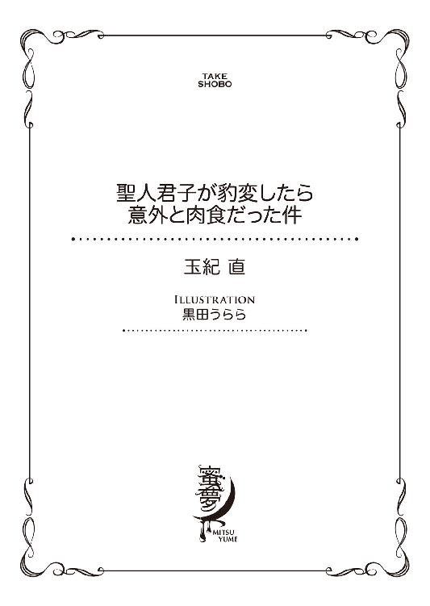
この作品は縦書きでレイアウトされています。
また、ご覧になる機種により、表示の差異が認められることがあります。
一部の漢字が簡略字で表示されていることがあります。
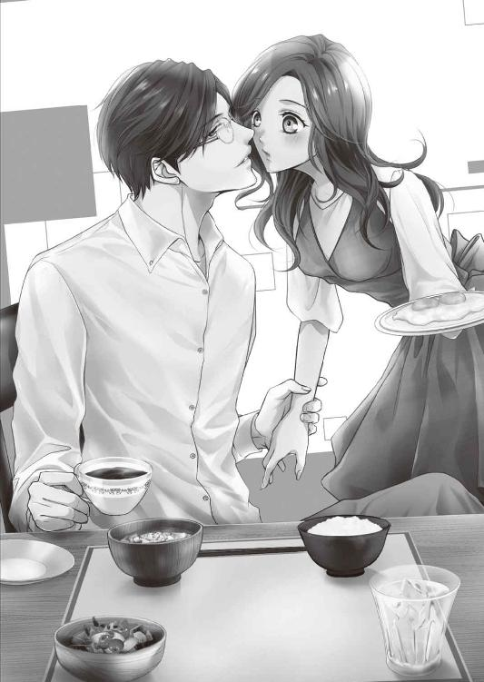
聖人君子が豹変したら意外と肉食だった件
CONTENTS
イラスト／黒田うらら
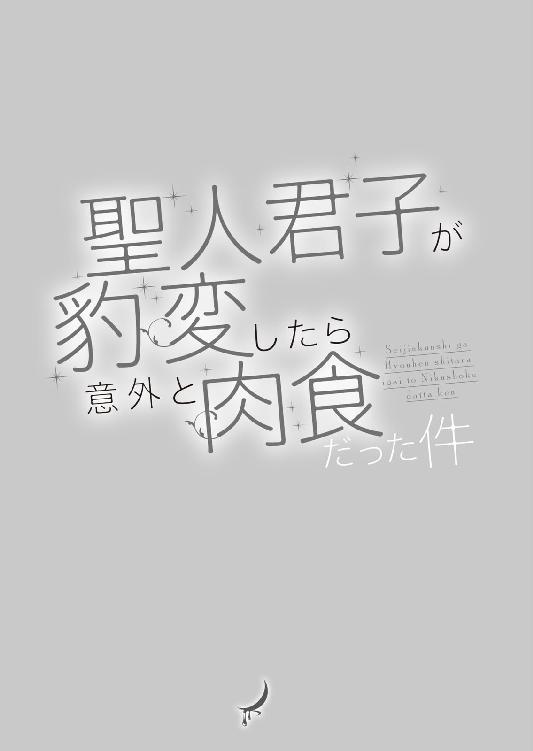
第１章 目覚めるとそこは
────目覚めると、見知らぬ部屋にいた......。
白い靄の漂う思考の中で、右手の指先をひたいにあて和泉桃香は考えこむ。
まだ意識はハッキリとせず、ぼんやりとしている。重い瞼を開いた瞬間飛びこんできた眩しい光に驚き、反射的に身体を起こしてしまった。
朝の訪れを告げる陽射しが目に入るが、その光が大量に注ぎこまれている大きな窓に、桃香はまったく見覚えがない。
窓から壁へと、ゆっくり視線を移す。
かなり広い部屋だ。幅の広い扉の向こうには、たぶんクローゼットがあり、今、桃香が身体を起こしているのは大きなベッド。ここが寝室であると見当がつく。
「......ここ......、どこ......？」
当然出るべきセリフを吐いて、桃香は眉を寄せる。こんな立派な部屋も、大きなベッドも、陽光がいっぱい入る窓も、彼女の記憶にはない。自分の部屋ではないのはもちろんのこと、こんな部屋に住んでいる友だちも知らない。
朝の光を意識しているうちに、だんだん頭の靄が晴れてくる。指をひたいから外すと、昨夜の記憶が少しずつよみがえってきた。
（昨夜は確か......、マンションの管理人と揉めて......すっごくイライラして......、馬鹿みたいにお酒飲んで......）
繁華街の裏通りで、ちょっと小洒落た小料理屋を見つけた。
がむしゃらに飲みたい気持ちだったので、ここなら知人にも会わないだろうと見当をつけて足を踏み入れたのだ。
さほど広くはないが、カウンター席の他に小上がりがあったような気がする。
カウンターの前には、食欲をそそる料理の大皿と日本酒の小さな樽が並べられていた。
樽の珍しさと、カウンター内にひとり立つ女将の優しい笑顔にのせられ、そしてまた、コップを一合枡に入れて日本酒を溢れさせるほど注いでくれる〝盛切り〟が楽しく、気持ちが盛り上がるままに飲んでしまった。
お酒はほどほどに飲めるが、強いほうではない。
ふと、新入社員歓迎会で初めて日本酒を飲み、悪酔いして先輩に迷惑をかけてしまった苦い過去が頭をよぎった。
それがあるからこそ、日本酒はもう二度と飲まないと心に誓ったはずだった......。
だが遅かった。誓いのことは思い出しつつも、ついつい進んでしまったお酒に意識は奪われ、記憶は途切れる。飲みすぎてそのあとのことがハッキリ分からないなど、二十五歳にして二度目の失態だ。
（落ち着け......。落ち着け、私......）
心の中で自分を戒める。
昨夜の出来事を徐々に思い出してきたのはよいが、肝心なのはここからだ。
いい気分になって頭がぐらりとしたことは覚えているが、そこから先の記憶がまったくないのだから。
桃香は正面に視線を向けたまま、ごくりと空気を吞み、おそるおそる隣へ手を伸ばした。
これが漫画やドラマなら、見知らぬ部屋で目覚めた自分の横には見知らぬ男が......、というのがありがちな展開だろう。
もしや手を伸ばした先に、そんなぬくもりを見つけてしまうのではないか。
だが、指先は彼女の期待を裏切り、冷たいシーツの感触しか伝えてこない。ホッとひと息つくが、次なる問題が頭をよぎった。
横に誰もいないからと、安心してはいけない。シーツが冷たくたって、泥酔したうえでの過ち、というものを犯してしまっている可能性はあるのだ。
上掛けをはねのけ、やっと思考し始めた頭でしげしげと自分の全身を観察する。
ボタンがふたつほど外れてはいるが、昨夜のブラウスを着ている。ブラジャーも外れてはいない。
ウエストのホックだけは外れているものの、膝丈のフレアスカートも脱がされた気配はないしショーツもしっかりと穿いている。
昨夜は素足にサンダルだったので、ストッキングを履いていなくてもひとまず衣服に問題はない。
身体のどこかが痛いとかだるいなどという症状もないようだ。ふとベッドサイドテーブルに視線を向けると、桃香が昨夜持っていたショルダーバッグが載っている。手にとって中を確認すると、スマホも財布も小物も無事だ。
こうなると、本当に問題は「ここはどこ？」という疑問に絞られる。
桃香はバッグを手にベッドを下り、ゆっくりと立ち上がった。
気のせいではないレベルで、なんとも食欲を誘う香りが漂ってくる。これはおそらく、ドアの向こうから侵入してきた香りだ。
「お味噌汁の匂い......？」
見知らぬ場所で目を覚ましたという不安より、この香りに心を奪われてしまう。ドキドキと胸躍る気持ち。こんな感覚は久し振りだ。
こっそりとドアを開く。芳醇な香りは強くなり、それとともに桃香の目に入ったのは整然とふたり分の食事が用意されているテーブルだった。
──そして......。
「おはようございます。目が覚めましたか？」
眼鏡の奥にある目を虹の形にした、エプロン姿の男性だ。
「朝食、用意しましたから、一緒に食べませんか。今、お味噌汁ができたところなんです。あ、それとも、先にシャワーでも使いますか？ 顔が洗いたいようでしたら、そこのドアを出て左にサニタリースペースがあるので......」
男性は案内をするようにリビングのドアへ視線を向け、同時に手で指し示す。そのまま桃香を振り返り、はたと言葉を止めた。
それは彼女が、警戒心丸出しと言わんばかりの形相で彼を睨みつけていたからだ。
「あなた......誰......？」
身体も顔と同じくらい警戒心を露わにする。
両手でバッグを胸に抱き、桃香は身を縮めて後退した。
だが彼女の足は、すぐに寝室のドアにぶつかる。逃げ場がなくなった桃香を男性は不思議そうに見つめた。
「ああ......そうか、やっぱり昨夜のこと覚えていないんですね」
「さ、昨夜......」
「小料理屋で、枡酒をガブガブあおっていたのは覚えていますか？」
「い......一応......」
「僕、同じカウンターで近くの席にいて、何度も注意をしたんですよ。無茶な飲みかたはしないほうがいいって。でもあなた、『楽しくてやめられないから、嫌なこと全部忘れるまで飲むんだ』って、まったく耳を貸さなくて」
「えええっ......」
酔っ払ってわけが分からなくなったうえ、まさか絡み酒を披露していたとは......。
（私って、そんなに酒癖悪かったっけ？）
かすかにショックを受けつつも、桃香は男性の話に耳をかたむける。
「呂律も回らなくなって危ないし、本気でやめるように言ったら、『じゃぁ、酔い潰れたら、お兄さんの家に連れて行ってください』って」
「ええええっ！」
驚きついでに頰が染まる。なんという大胆発言だろう。
まさか自分から〝お持ち帰り〟を提案していたとは。
「で、予想通り潰れちゃったから、僕の家にお連れしたんです。ご気分はいかがです？ 二日酔いはないかな？ 結構、無茶な飲みかたをしていましたからね」
驚愕の表情を呈したまま桃香は動けない。それどころか、声も出ない。
なんという醜態。
なんという愚行。
弱いと分かっている日本酒を自棄になってがぶ飲みし、見知らぬ男性に絡み嚙みつき、お持ち帰りを頼んだうえでブラックアウトしたらしい。
そして翌朝、見知らぬ部屋で目を覚ましてしまった......。
（これは女として、というより、人間として恥ずかしいわ......）
恥ずかしいより情けない。そう思うと、驚きに固まっていた桃香の表情は、今にも泣いてしまいそうに歪んできた。
そんな彼女の変化を観察するように眺め、男性は笑顔のまま大きなダイニングテーブルの一角を手で示す。
「とりあえず座りませんか？ お味噌汁でも飲んで、ひと息ついてください」
目覚めの一杯に味噌汁を勧めるなど、なんとも変わったおもてなしをしてくれる。だが、香りにつられて寝室から出てきてしまった桃香には、示された席に置かれた味噌汁椀がキラキラと輝いて見える。
（美味しそう......）
彼女の全身が、その液体を欲してうずうずし始めたのが分かった。
目覚めて早々に、というより、こんなにも味噌汁が飲みたくなったのは初めてではないだろうか。
「きっと、美味しいと思いますよ」
男性はなおも勧めてくる。よほどこの味噌汁の味に自信があるらしい。そもそもこれは、誰が作ったものなのだろう。この男性がエプロンを着けているのをみると、彼の手作りと考えるのが妥当なのだろうか。
見る限り普通の味噌汁だ。角切りの豆腐に長ネギ。切りかたが大きめなので、インスタントではないだろう。
桃香はチラリと視線を上げ、さっきから笑顔しか見せていない男性を一瞥する。
人の良さそうな相貌から、食事になにか変なものを仕込んでいるようには思えない。そんな疑いを持ってはかえって申し訳なくなるほど穏やかな雰囲気だ。
（よしっ）
桃香は意を決してテーブルへ近づく。用意された席の足元にバッグを置き、椅子に腰を下ろした。
（酔った私を助けてくれたんだ。こんな人の良さそうな人、疑っちゃいけない。いくら〝男〟だからって、みんながみんな、イヤな人間だってわけじゃないんだから）
そう自分を戒めるものの、素直に座ってしまった原因は、この味噌汁に他ならない。
「あ、あの......、お言葉に甘えて、いただきます」
「どうぞ」
箸を取り、男性に顔を向けると、今までの笑顔とは少し違う落ち着きある微笑みを返された。桃香が前向きな態度を見せたので、安心したのかもしれない。
もしもこれが、こんなわけのわからない状態でなかったのなら、女性として胸がときめいて然るべき微笑だったかもしれない。
だが今の桃香にとって、なによりも自分の心を魅了しているのは味噌汁なのだ。彼女の視覚も嗅覚も、目の前にある魅惑の液体に支配されている。
味噌汁を飲むという行為だけで、こんなにもドキドキとしたことはない。
自分の家にあるプラスチック椀とは明らかに格の違う塗りの椀を両手で取り、桃香はそっと、おとなしく縁に唇をつけた。
決して猫舌だからではない。他人様に食事を呼ばれているという遠慮から出た仕草だった。
しかし、ひと口飲んだ途端、彼女の遠慮は味噌汁のあまりの美味しさの前になりを潜めてしまう。ごくりと喉を鳴らしながら汁を飲み、具の豆腐と長ネギを箸で搔きこんだ。
（うわっ、美味しいっ）
身体が欲するままに行動してしまったあと、やっと脳がこの美味しさを実感する。つい遠慮もなしに貪ってしまった自分に気づき、桃香はハッと動きを止めた。
（は、恥ずかしっ。なんか私、すっごく行儀悪くない!?）
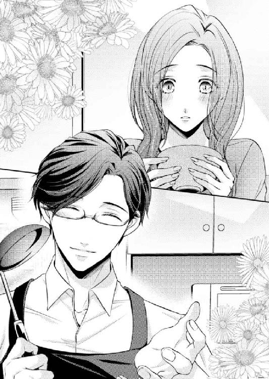
あっと言う間にカラになったお椀を手に、長ネギのひとかけも残っていない中を見つめる。あまりの恥ずかしさに顔が熱くなっていくのが分かった。
だがそのとき、そんな彼女の気持ちを救う声がかかった。
「おかわり、召し上がっていただけますか？」
「え？」
真横に顔を向けると、いつの間にか男性が両手鍋を持って立っている。彼は鍋をテーブルの上へ置き、引っかけてあったお玉と共に蓋を取った。
「僕ね、味噌汁が好きで、毎朝必ず作るんですよ。でも、ひとり分だから、いつもはそんなにたくさん作れないんですよね。今朝はお嬢さんもいたから、張り切って大き目の鍋で作りました。どうでしょう、お口に合いますか？」
「はい......、あ、美味しいです。物凄く......」
「それはよかった」
お玉片手ににっこりされては、それに応えないわけにはいかない。
桃香はカラになった椀を両手で差し出し、おかわりの勧めに甘えた。
「美味しいって感じるのはね、お酒をたくさん飲んだあとだからっていうのもあるんですよ。アルコールには血糖降下作用があるんです。食物を摂らずに大酒を飲むと、数時間後には身体が低血糖に近い状態になってしまいます」
男性は説明をしながら味噌汁のおかわりを注ぎ、桃香へ手渡す。彼女が受け取り、今度は落ち着いた様子で豆腐から食べ始めると、話を続けた。
「パーティーや接待でたくさんお酒を飲んだあとに、ラーメンなんかを食べたくなったことはありませんか？ 低血糖を危ぶむ身体が、自己防衛のためにカロリーを欲しがっている証拠なんですよ。今朝のお嬢さんの身体も低血糖状態に近くなっているから、お味噌汁なんてシンプルなものでも『凄く美味しい』と感じてしまうんです。おそらく今なら、お茶漬けを搔きこんでも凄く美味しいって感じると思いますよ」
「へーぇ......」
具を口に運びながら、つい聞き入ってしまう。パーティーや接待などというものに縁はないが、飲んだあとになにか食べたくなるのはよくあることだ。
「太っちゃうねー」と笑い、気にしつつも食べてしまう。しかし彼の説明から考えれば、飲んだ後の食事は、体調のためを考えるなら理に適っているということになる。
カロリーを気にする、女性ならではの罪悪感に苛まれなくてもいい......と桃香は一瞬嬉しくなるが、すかさずそこへ釘が刺された。
「でも、飲んでいる最中に充分に食べていたなら、その後の過剰なカロリー摂取は厳禁です。お味噌汁かお茶漬けがちょうどよいですね」
「そ......そうですか」
ピクリと頰が引きつった。あまりにもタイミングのいい忠告だったので、心の中を覗きこまれたのかと思ってしまったのだ。
「それにしても二日酔いがないようでよかった。低血糖は二日酔いの気持ち悪さを倍増させてしまいますから、少し心配でした。やっぱり水も一緒に飲んでおいてもらってよかったです」
「水？」
汁を飲みかけていた桃香が顔を上げる。眉をひそめて視線を斜め上に据え、昨夜の記憶を探り始めると、ふと思い出す。
（そういえば......、お酒と一緒に、水も出されたっけ......）
笑顔しか思い出せない小料理屋の女将が、枡酒を出してくれる際は必ずコップに水を注ぎ足してくれていたような気がする。
『お酒と一緒に、同じくらい飲んでくださいね』
にこにことした顔と雰囲気につられ、素直に従い両方がぶ飲みしていたような気がする。
ひと口酒を飲むたびに水で口の中を流して、また新たに酒の甘さを味わう。そんな意味なのかと思っていた。もしかしてそれが、枡酒を飲む際の作法というか飲みかたなのかと......。
しかし彼の言葉を聞いていると、そうではないようだ。
「水を飲むと、なにかあるんですか？」
思い切って尋ねると、桃香から話をしてくれたのが嬉しかったのか、彼はにこりと微笑んだ。
見た目、三十代中盤ほどではないかという印象を受ける。だがこうして笑顔を作ると、もっと若く見える気もした。
「アルコールの体内分解には、水が必要なんですよ。アルコールは、飲むと加水分解されてしまうので身体が脱水症状を起こします。それは、二日酔いの大きな原因のひとつでもあります。ですから、お酒を飲むときに水を一緒に摂取すると、二日酔い防止にも効果的ですし悪酔いも抑えられます」
そこまで話し、男性は「あ」と口を押さえたあと苦笑いをした。
「まあ、どちらにしろ自分の定量以上を飲んでしまえば、酔いが回って寝てしまうってこともありますよ」
飲みすぎて意識を失った桃香を慰めてくれたのだろうか。酔ったうえでの醜態と決めつけた今回の出来事を、彼は酔いが回って寝てしまっただけと位置づける心遣いをみせた。
桃香はふと、昔の出来事を思い出す。
初めて日本酒を飲んだとき、わけも分からず冷酒だけを飲み続けた。血糖値もカロリーも、水も脱水症状も、そんなものなにひとつ気になどしてはいなかったのだ。
（お酒の飲みかたって、本当は大事なんだなぁ......）
知らなかったのだから、という言い訳もできる。だが知ってしまうと、それまでの自分はどれだけ無知だったのかと思い知らされた。
悪酔いしなければいいと、そんな考えしか持ってはいなかったのだから。
「それにお嬢さん、冷酒ばかりを飲んでいたでしょう。あれもいけませんよ」
彼の言葉は、またもや桃香は疑問を抱える。
冷酒がなぜいけなかったのだろう。是非聞きたかったのだが、それを尋ねる前に、彼女は切実な生理的欲求に襲われた。
「あの......、すみませんが......」
「はい、リビングを出て左ですよ」
最後まで言わないのに悟られてしまった。それはそれでありがたくはある。
バッグはどうしようかと一瞬迷ったが、ここまで親切にしてもらったのに、わざとらしくバッグを抱えてトイレへ駆けこむのも気が引ける。
いかにも、警戒心丸出し継続中と言わんばかりだ。
桃香はバッグを椅子の足元に置いたまま席を立った。
「どうせなら、ついでに洗顔もしてくるといいですよ。タオルなどは洗面台の横の棚に入っています。──あ、でも......」
説明をしながら、彼はなにかに気づき躊躇する。
「女性用の化粧水などはないんですよね......。アメニティを届けてもらうにしても、この早朝じゃコンシェルジュがいるかどうか......」
何気ない呟きを聞いて、部屋を出かかっていた桃香の足は止まった。
（コ......コンシェルジュぅ？ なんなのっ、ここ、ホテルかなんか!?）
キッチンで料理ができるのだから、マンションなのだろうと思っていた。しかしコンシェルジュというのは、高級ホテルなどにいる従業員のことではなかったか。
桃香の混乱など意に介さず、彼は申し訳なさそうに提案をしてくれる。
「ベビーローションならあります。それで良ければ、洗顔後に使ってください」
「は......はい」
「それと、サニタリーに入って急に具合が悪くなったら、遠慮なく言ってくださいね。ホッと力を抜いた瞬間、不調を自覚する場合もありますから」
「......はい、ありがとうございます......。あの、聞いていいですか？」
「なんでしょう？」
「あの、お医者さんなんですか？ いろいろと詳しいし......」
お酒のこと、体調のこと、立派な部屋に住んでいること。
彼自体から漂う、穏やかな雰囲気などを考えていくと、もしかして医師なのではないかと思ったのだ。
だが男性は、首を横に振ってにこりと微笑んだ。
「いいえ。僕は、ただの〝隠居〟です」
「......は？」
「片桐雄大といいます。歳はもうすぐ四十歳になります。趣味は〝のんびり生きること〟。ですので、このマンションにひとり暮らしです」
「あ、あの......、私、和泉桃香といいます。もうすぐ二十五歳になります。趣味は、えーと、......〝好きなように生きること〟ですっ」
思いがけず丁寧な自己紹介を受けてしまった桃香は、慌てて同じような自己紹介を返す。趣味のところで詰まってしまったが、これでも彼女的には間違いではない。
（でも、ちょっとおかしかったかな......）
桃香は言ってしまってから「しまった」と思ったが、雄大はまったく気にしていないようだ。風変わりな趣味を聞いても、その微笑を崩すことなく彼女を見つめた。
「よろしく。桃香さん」
「あ、よろしくお願いします」
なにを、よろしくお願い、なのだろう。自分の発言の無責任さに呆れつつ、ひとまず桃香はトイレへ向かう。
言われたとおり、リビングを出て左側に見えた磨りガラスのドアを開く。次の瞬間、桃香は立ちすくんでしまった。
広いスペースに、洗面台と横長の大きな鏡、その前には肘掛椅子も置かれている。奥に見える開いたドアの向こうは浴室のようだ。
お洒落な内装が、桃香に百貨店のパウダールームを思い出させた。
（なんなの......、ここ......）
しかし、肝心のトイレがないことに驚く。
そこで桃香は、はたと気づいた。自分が住んでいるマンションは、浴室もトイレも洗面所も一緒だが、家賃の高い物件なら、たいてい浴室とトイレは別々のはずだ。
桃香は廊下へ出て隣へ目を向ける。長い廊下の中ほどに、白いドアがもうひとつ。そこを開けると、思ったとおりここがトイレだった。
（広っ......）
トイレも先ほどの洗面所に見合って広い。専用の手洗い場まである。
（いったいあの人、何者なの）
一瞬ホテルかとも思ったが、彼の自己紹介によれば、ここは彼が住むマンションであるらしい。
こんなに立派な部屋に住んでいるのだ。それなりの職についている人物なのだろう。
（お医者さんじゃないなら......、弁護士とか、大学教授とか......）
いろいろ考えてみるが、彼は自分を「隠居」と言っていた。もうすぐ四十歳という身で隠居というのはおかしくないか。四十歳の男性といえば、まだまだ働き盛りだ。
（年齢よりもっと若く見えたけど......）
便座に腰を下ろし、ホッとひと息ついてから改めて考える。
優しげな雰囲気に、笑顔が爽やかな男性。背が高く立ち姿もスマートで、エプロン姿が似合うなかなかのイケメンだった。
かける人間を選ぶような細めの縁なし眼鏡も、彼がつけると野暮ったいところがまったくなく、とても似合っていた。
この二十五年間生きてきた中で、一番イヤな思い出を作ってくれたのが眼鏡をかけた男だった。そのせいか、眼鏡をかけた男性にはあまり良い印象を抱けない。それなのに、彼の顔を見ていても嫌な気持ちにならなかったのは、あの柔らかな笑顔のせいかもしれない。
（言葉遣いも、丁寧な人だよなぁ）
昨日初めて話をしたのだとはいえ、桃香はどう見ても年下なのに、とても丁寧な口調で接してくれた。
お店の店員以外で、年上の男性に敬語を使われるのは初めてかもしれない。
（最近は、年下だってタメ口とかだもんね......）
会社の人懐っこすぎる後輩たちを思い出し、溜息が出る。今日が土曜日でよかった。こんな状態では会社に行くのも大変だ。
好意に甘えて顔も洗わせてもらうことにする。トイレを出て、先に見つけた洗面所へ向かった。
洗面所の大きな鏡の前に立つと、スカートのホックとブラウスのボタンを留め、襟を直す。この服の乱れは、酔い潰れた桃香が苦しくないようにと彼が緩めてくれたものなのだろう。
ブラジャーのホックも留められたままであることを考えても、あの人の良さそうな笑顔の主が、眠っているあいだになにかをしたとは考えられない。
酔った勢いでお持ち帰りを頼んでいたようだが、彼は純粋に介抱をしてくれただけなのだろう。とはいえ、彼を見ていると意外とも思わない。
なぜだろう変な安心感が彼にはあるような気がする。
（なんだか不思議だ。世の中には、そんな男もいるんだなぁ......）
水で顔を洗うと、顔だけではなく気持ちまで爽やかになった気がする。爽やかついでにメイクも落ち、すっかりスッピンになってしまっているが、しょせんは酔い潰れたところを介抱し介抱された仲だ。気にするほどのことでもない。
さらに好意に甘え、タオルと一緒に棚に置いてあったベビーローションを借りることにする。
（これ、よくドラッグストアの赤ちゃん用品コーナーとかにあるやつだ......）
ピンク色のボトルを手に、なんとなくにんまりとしてしまう。セレブな空間で、ずいぶん庶民的な要素を見つけてしまった。
緊張がわずかに解けた気分で、桃香はリビングに戻った。
「サッパリしましたか？」
あまりにも爽やかに言われ、言葉に詰まる。
トイレから戻った途端だったので、思わずうろたえてしまった。
だが、対面キッチンから桃香を見る雄大は、自分の頰を指でつついている。それが、顔を洗ってサッパリしただろう、という意味なのだと気づき、桃香は慌てて返事をした。
「は、はいっ、サッパリしましたっ」
自分のうろたえぶりに照れて、笑いが引きつってしまう。
「お手洗いで具合は悪くなりませんでしたか？ 一応、苦しくないようにと思って衣服は緩めさせてもらったのですけれど......。いえいえ、他意はありません。信用していただけると嬉しいのですが......」
「はい、あのっ、そんな、疑ってませんからっ」
「よかった」
ホッとした中にはにかみを含めた表情を見せた雄大は、「あっ」となにかに気づいたようにシンクを離れる。クッキングヒーターに向かい、そこに載っているフライパンを手に取った。
蓋が取られ漂ってくる香りから、目玉焼きらしいことがわかる。
「あれ？ 焼けすぎちゃったかな」
男性がはにかむ表情など、見るのは初めてだ。
（こ、この人......、綺麗な顔してるなぁ......）
桃香は、不覚にもその表情に見惚れてしまっていることに気づき、頭をぶんぶんっと振り、両手で頰をパンパンッと叩く。
雄大の年齢を考えれば、会社の上司と同じようなものだ。
でも、こんなに爽やかに笑う男性が、しかめっ面かニヤけた中年顔しか見せない上司と同世代だとは思えない。
「桃香さんは、半熟派ですか？ 固焼き派ですか？」
「え？ な、なんですか......？」
いきなり質問をされ、慌てて彼に顔を向ける。ターナー片手に、またもやはにかむ笑顔がそこにあり、ドキリと二度目の不覚をとった。
「目玉焼きを作ったのですけど、半熟よりちょっと焼きすぎてしまったような気がして......。がっちり固焼きではないのですが......」
「私、どっちでも大丈夫ですよ。こだわりはないです」
「そうですか、よかった。時々、凄くこだわる人とかもいるので、どうなのかなと思ったんです。『黄身が固まっているのは目玉焼きじゃない』って力説されたらどうしようかと思いました」
「そんなこと言いませんよ。朝ご飯を作ってもらって申し訳ないくらいなのに」
彼が甲斐甲斐しく朝食を用意してくれていることを再確認し、桃香は慌てて近づいていく。なにか手伝えることはないかと手元を覗きこむと、フライパンの中には白身がつやつやとした目玉焼きがふたつ、いい匂いを立ちのぼらせていた。
「美味しそうじゃないですか。お上手なんですね。お味噌汁もとってもよい味でしたし」
「ありがとうございます。ひとり暮らしが長いので、必要に迫られて作っているうちに......って感じなのですよ」
「そうなんですか」
自己紹介でも、「このマンションにひとり暮らし」と言っていた。年齢的にワケありな可能性も高いが、少なくとも現在は、酔い潰れた女性を部屋に連れ込んでも問題はない身分なのだろう。
「僕もそんなにこだわるほうではないのですけれど、それでもなんとなく半熟ばかり作ってしまいますね。なかなか理想どおりには作れませんが」
軽く笑いながら、雄大はフライパンを持って背後の作業テーブルへ移動する。そこには大きめの平皿が二枚。ボイルされたソーセージとアスパラ、そして見た目も鮮やかな赤とオレンジのプチトマトが飾られている。
「あ......ぇと、片桐さんは、どんな目玉焼きが理想なんですか？」
姓と名、どちらで呼ぶか迷うが、無難に苗字で呼ぶことにする。相手に名前を呼ばれたからといって、桃香としてはいきなり「雄大さん」とは呼べない。
「んー、......だいぶ前に、仕事の途中で通りかかった喫茶店でモーニングを食べたのですが、そのときに付いてきた目玉焼きが絶妙でした。なんていうんでしょう、白身が柔らかくてぷりぷりしていて、黄身は半熟で、まったりトロリとしていて、全体的にとってもふわふわした目玉焼きでした。なんといっても、黄身の上に白い膜がかかっていなくて......」
「白い膜？」
「ええ。目玉焼きって、よく黄身の上が白くなってしまうじゃないですか。あれがなくて、それは鮮やかな黄身の色でしたよ。白身とのコントラストが素晴らしかった」
目玉焼きを皿へ盛りつけながら、雄大はそれを思い出したのか感嘆の溜息をつく。
たかが目玉焼きの焼き具合ひとつで......。などと思ってはいけない。彼は本心から、目玉焼きに憧れを募らせている。
「そのあと、またあの目玉焼きが食べたくてその喫茶店へ行ったのですが、かなしいかな閉店していました。同じものを作れないものだろうかと自分であれこれと試行錯誤をしてみるのですが、なかなか思うようにはいきません」
彼の話を聞きながら、桃香はわずかに考えこむ。フライパンとターナーをシンクへ持っていこうとした彼を呼び止め、人差し指を立てた。
「すみません。ちょっと、フライパン貸してください。それと卵、ありますか？」
「え？ ええ。卵は冷蔵庫に」
「キッチン、お借りしますね」
目をぱちくりとさせる彼をチラリと見て、桃香は意識的に目をそらす。眼鏡の奥で「なに？」と問いかける目が、こんなにも気になるのは初めてだ。
（眼鏡の顔って、あまり好きじゃないはずなのに......）
ふと、そんな想いがよぎったが、今は考えないことにして、桃香は雄大が冷蔵庫から出してくれた卵を受け取る。
雄大の憧れの目玉焼きとは〝これ〟のことではないかという心当たりがあったので、目玉焼きを作り始めた。
「どっちが片桐さんのお皿ですか？」
ちょうどいい頃合いになったところで振り返ると、雄大は腕を組み、真剣な表情で桃香を見ている。初めて見る表情に一瞬、ドキリとするが、すぐに彼は笑顔になった。
「どっちが、っていうのはないですよ。付け合わせも同じだし......」
彼が言い終わるか終らないかのうちに、桃香は仕上がった目玉焼きを片方の皿に載せる。彼が先に載せていたものと半分重なってしまったが、それはまるで別メニューであるかのように皿の上で存在感を主張した。
「こんな感じ、でしょうか？」
控えめに問いかけ彼の表情を窺う。またしても雄大は、目をぱちくりとさせて皿の上を見つめていた。
そこには、まさに彼の説明そのままの目玉焼きが載せられている。白と黄色がそれぞれ艶めいてシンプルなコントラストを作り、見ただけで柔らかさを彷彿とさせる質感。
もちろん、黄身の上に白い膜はない。白身のクッションにもったりともたれかかる黄身はどこかなまめかしく、今すぐに指でつついて、その弾力を確認したくなる。
「食べてみなくちゃ黄身の感じも分からないとは思いますけど、たぶん、こんな感じかなって」
「こ......こっ、これですよっ。すごいっ、ずっとイメージしていたとおりだ」
両手で皿を取り、雄大は目玉焼きを自分の目の高さに掲げた。
しげしげと眺め、眉を寄せて小さく首を振る。
「本当に凄いですよ。料理がお上手なんですね、桃香さん」
「まあ......、あの、......片桐さんが言っている感じと同じかどうかは食べてみなくちゃ分からないんですけど......。黄身に白い膜がかからないって言ってたんで、かからない作りかたをしただけなんですよ」
「そうなんですか？ そんなこと普通にできるんですね」
「目玉焼きも、好みによって作りかたもいろいろですから」
そんなに感動されるとかえって恥ずかしいような気分にもなるが、、思いがけない称賛を受けて、桃香は嬉しくなってしまう。アハハと照れ笑いをしながらフライパンをシンクへ持っていくと、雄大が皿を両手にダイニングテーブルへ移動した。
「なんだか、俄然食欲が湧きました。食べましょう、桃香さん。僕、ご飯よそいますから」
「あ、それなら、私がやりましょうか？」
フライパンを洗いながら顔を上げる。すると、桃香の申し出が嬉しかったのか、眼鏡の奥の双眸がにこりと虹の形を作った。
「はい。じゃあ、お願いします。僕、お味噌汁よそいますね。ご飯のお茶碗は、後ろの台に出ていますから」
振り向くと、さっきまで皿が載っていた調理用テーブルの上に、ご飯茶碗がふたつ置かれている。どちらも渋いベージュの色合いだが、白と青の花模様のものと、それより少し小振りな白と紅の花模様のものだった。
質感やデザイン的に、食器の専門店などで桐箱と共に棚の上に展示されている品物、という印象を受ける。
（私がいつも使ってる茶碗、せともの市で二百円だったやつなんだけど......）
ついつい自分と比べてしまう。
この片桐雄大という男性、いったい何者なのだろう。
そんな疑問を抱きつつも、感じ始めた空腹感を優先させるべく、桃香は茶碗へ手を伸ばした。
第２章 ワケあり同居決定
「感動だなぁ......。これですよ、これ。本当に嬉しいなあ」
目玉焼きひとつで、こんなに感動されたのは初めてだ。
雄大が大袈裟すぎるほど喜んでくれるので、桃香は恐縮してしまう。
そうは言っても呆れる気持ちが起こらないのは、やはり目玉焼きひとつであろうと、喜んでもらえれば嬉しいという気持ちになるからだ。
「食べてしまうのがもったいないくらいでした。桃香さんは、お料理がお上手ですね」
「ハハハ......あ......、ありがとうございます」
控えめな照れ笑いのあと、おもむろにご飯を口に入れ、桃香は心の中で呟く。
（片桐さんのほうが、お上手ですよ）
ご飯のなんとも言えないふっくら感もさることながら、やはり味噌汁が超絶に美味しい。それは決して、アルコールを記憶をなくすほど飲んだ翌朝だから、という理由だけではない。
焼きすぎたと言った目玉焼きは黄身がほどよいレアで、付け合わせのアスパラも茹でたときの塩加減だけでそのまま食べられる。プチトマトやボイルソーセージももちろんだが、もうひとつ小鉢に出された糠漬けキュウリが堪らなく美味だ。
（まさか、これも自分で漬けました、とかじゃないわよね）
パリパリときゅうりの小気味よい音をたてながら、桃香は横目で室内を再確認する。
この超豪華なデザイナーズマンションのキッチンで、糠漬けが作られているかもしれない......。そんなの、桃香にとっては想像の範囲外だ。
考えられないことといえば、もうひとつ。
自分が、こんな場所で男性とふたりきりで朝食をとっているという事実。
それも、酔い潰れてお持ち帰りされた末に。
特になにかあったわけではなさそうだが、男性と同じ屋根の下で夜を過ごすなど、過去の経験からもう二度とないかもしれないとまで思っていたのに。
「それにしても、誰かと一緒に朝食をとるなんて、久し振りですよ」
いろいろと思考を巡らせていると、桃香が考えていたことと同じような言葉を雄大が口にした。
彼はといえば、桃香が作った目玉焼きひとつのみでご飯と味噌汁をたいらげ、湯吞み片手に満足しきっている。
「というより、この部屋で誰かと食事をしたのは初めてかもしれません。やっぱり誰かと一緒だと食も進みますね」
彼がはにかみながら言うので、桃香はグッと言葉に詰まる。雄大の言葉から深読みすれば、男ざかりの年齢であるにもかかわらず、部屋に女性を引っ張りこんだことはないということか。
（だ、だとしたら......、私、そんな人にずいぶんと凄いことを言ったことになるんだ）
酔ってわけが分からなくなっていたとはいえ、自分から部屋へ連れて行ってくれと頼んだらしいのだから。
「僕は一緒に食事ができる相手がいて嬉しいのですが、桃香さんはご迷惑でしたか？ こんなこと、たとえなにもなくても大切な人には言えませんよね。酔いつぶれて介抱してくれた男と朝食をとったなんて」
「あ......いえ、私......」
「おかしな秘密を作らせてしまうようで申し訳ないです。外泊を疑われてしまうようなら、僕が昨夜の件を詳細に説明しますから」
「大丈夫です。私、そんな、大切な人とか......恋人とか、そういうのいませんから。はい、まったく、さっぱり、ちっともっ」
慌てて答え、ハッとする。こんなにムキになる必要はない。これではまるで、お持ち帰りをされてもまったくかまわないフリーな女、を主張しているかのようだ。
（まさか、カマかけたんじゃないわよね）
動揺のあまり、おかしな推測が頭の中を巡る。
余裕たっぷりな態度を見せる彼。
もしや、「誰かとこの部屋で食事をするのは......」という話は、桃香のプライベートを探るためではないだろうか。
食事の前段階で信用をさせ、食事をしてホッとひと息ついたところで、桃香に決まった男がいるのかどうかを聞き出す......。
そして誘導されるがまま、桃香は完全なフリーであることを自供してしまった。
（これって......、まずいんじゃないの......？）
完全フリーな男と女。うちとけあい、お腹も満たされ、穏やかなムード。
引き上げ難い雰囲気のままコーヒーを淹れてもらい、ふたり並んでソファなどに座りながら話をしているうちに......。
手が重なり、身体が近づき、唇が寄せられて......。
（ちょっと待ったぁっ！）
そこから始まる大人の関係。よくあるパターンだ。
ここまで馴染んでしまったら、男女の生理的欲求に発展してもおかしくはない。
またそれが、大人の男女というものではないか────。
「安心しました。......って言ったら失礼かな。でも、怒ってしまうようなお相手がいなくてよかった」
「えっ......よかっ......よかったって......」
「桃香さん、コーヒーはなにがお好きでしょう？ 食事のあとで淹れますね」
「えっ......、コーヒー......」
（ぅわあっ、思った通りっ！）
やっぱりそうだ。
そういうことになってしまうのだ。
どんなに優しく見えたって、男は男。
見返りを求めずに女を助けるはずなどないし、部屋に連れこんだ女になにもしないはずもない。彼には安心感を覚えていたのに、なんということだろう。
桃香の頭は、持論と理論でいっぱいになる。
雄大に感じた清廉潔白なイメージが崩れそうになるが、崩れ落ちたのは桃香の説のほうだった。
「コーヒーでひと息つかれたあとに、お家までお送りします。ご自宅はご家族とお住まいでしょうか？ それともおひとりで......」
「あ、ひとり暮らしです......」
「そうですか。僕の車でお送りしてもよいのですが、女性のひとり暮らしでは、他人に部屋を知られるのも遠慮したいところでしょう。会社で使っているハイヤーを用意させますから、それを使ってください」
「は、ハイヤー......」
なんと彼は、コーヒーを飲んだあと、そのまま帰してくれるようだ。
それにも驚いたが、もっと驚いたのは、彼が「会社で使っているハイヤーを用意させる」と軽く口にしたこと。
（社用車のハイヤーって......うちの会社の重役も使ってるあれよね......）
ハイヤーといえば、タクシーの豪華版というイメージ。エグゼクティブ御用達で格が高い印象しかないというのに。
（さらっと、何気に凄いこと言うよ。この人、何者なんだろう......ほんとに......）
雄大に関する謎が、またひとつ......。
パリパリパリパリ......小気味よい音を響かせ、桃香は糠漬けを口に運ぶ。
特別漬物類が大好きというわけではないが、残すのがもったいないくらい美味しい。
雄大に関して、あれやこれやと詮索しながら、人生二十五年目にして初めて「残したくない」と感じた漬物を嚙み締める。
なんとも平和なものを感じずにはいられない空気。
そんななか、桃香はふと、彼のことばかりを勘ぐっている場合ではないのだということに気づく。
（そうだ......、私......）
自分が置かれている状況と、昨夜、なぜあんなにも自棄になってお酒を飲んでしまったのか、その元凶となった事柄が次々と思い出されてきた。
「あの......、ありがたいんですけど......」
桃香は箸を揃え、そっと箸置きに載せる。まだ半分もご飯が残っている茶碗と汁椀を見つめ、神妙な声を出した。
彼女が急にそんな態度を見せたせいだろう。雄大も湯吞みをテーブルに置き、桃香を見つめる。
「私、他に行かなくちゃならないところがあるので......。ひとりで、帰りますから......」
（帰る？ どこに？ マンションには帰れないのに）
自分の言葉に内心で突っこみを入れながら、桃香は奥歯を嚙み締めた。
マンションには帰れない。それが、昨夜イラつくままにお酒を飲んでしまった原因でもある。
どんなに大酒を浴びたって状況は変わらない。思い出せば思い出すほど、苛立ちも悔しさも募るばかりだというのに。
桃香は思う。なぜ自分がこんな目に遭わなくてはならないのだ。
────いつもいつも、男という生き物のせいで......。
「なにか、お困り事ですか？」
さっきまでニコニコと食事をしていた桃香が急に意気消沈してしまったのを見て、雄大も心配そうに声のトーンを落とした。
「若いお嬢さんが、酔い潰れて外泊してしまった朝に、自分の家にも帰らず、行きたい場所とはどこなのでしょう」
「そんな大袈裟な所では......」
「やはり、恋人の所なのでしょうか。見知らぬ男の部屋で一夜を過ごしてしまった後ろめたさが消えないのですね。いくら介抱のためであったとはいえ、僕は桃香さんに大変失礼なことを......」
「ちっ、違いますっ。......不動産屋さんですっ！」
面倒なので誤解させたままでもよかったのだが、どうも雄大に恐縮されると、こっちが申し訳ない気分になってしまう。桃香は本当のことを言うしかなかった。
すると、さすがに不動産屋というのは予想外であったらしく、雄大は眼鏡の奥で人のよさげな双眸をぱちくりとさせる。
「不動産屋？」
「はぁ......まあ......、だからその、恋人がうんたら、とか、後ろめたさがどうとか、まったく、一切、全然ないし、あり得ませんのでっ」
「なぜいきなり不動産屋なのですか？ 今の部屋を移りたいにしても、部屋へ帰って着替えをしてメイクをしてから出かける、とか、......普通の女性は、そう考えるのではないのでしょうか」
（......普通の女性なら......ね）
桃香は心の中で反論をし、気まずそうに頭を搔いた。
「今の部屋自体に帰りたくないっていうか......、まあ、帰れないっていうか......、さっさと適当な部屋を見つけて、荷物だけ引き上げに戻ろうかな、とか思って......」
「なにか、トラブルですか？」
「そんなところです......。本当は、荷物を取りにマンションへ戻るのも嫌なぐらいなんですけど......」
口に出すと、現実が実感になって襲ってくる。
不動産屋で適当な部屋を見つけ契約をしたとしても、一度は荷物をまとめに部屋へ帰らなくてはならない。
帰れば、いやでも〝あいつ〟と顔を合わせることになる。
憂鬱でたまらない。考えただけでも身の毛がよだつ。
「ですが、家賃などの条件になにもこだわりがなく、どんな部屋でもよいというのではない限り、そんなにすぐに引っ越し先が見つかるとも思えませんが」
「そうなんですけど......。でも、とりあえずどこか決めないと、......あんな所にいたら、殺されちゃう......」
「殺される？」
「......あっ、いや、......殺されそうなほど神経が追い詰められちゃうって意味で......」
慌てて言い直すが、そう感じている気持ちに噓はない。思い出しただけでも、腹が立って暴れ出してしまいそうだ。
普通、「殺されそう」なんて言葉を聞けば、人はみんな驚く。いったい彼女はどんなトラブルを抱えているのか。もしや犯罪レベルの大きな厄介事なのではないかと思ってもおかしくない。
雄大の立場になって考えれば、揉め事はごめんだとばかりにさっさと桃香を追い出してしまいたいのが本心だろう。
桃香は、雄大に面倒な女を保護してしまったと煩わしい後悔をさせてしまいそうで、申し訳なくなる。
（こんなに親切にしてもらったのに）
雄大のためにも、ここはさっさと出て行ったほうがいい。使った食器くらいは洗いたくとも、それさえ迷惑になってしまうかもしれない。
まだ半分残っている朝食が心残りではあるが、桃香は足元のバッグを手に取って腰を浮かせかけた。すると......。
「桃香さん、これから毎日目玉焼きを作ってくれませんか？」
「は？」
「作っていただけるなら、僕は貴女にここの空き部屋をご提供しましょう。いつまで使ってくれても構いません。貴女がちゃんと納得のいく部屋を見つけるまででも、気が済むまででも」
「......は......ぃ？」
桃香は目を丸くする。それは、こんな面倒な女から物騒な話を聞いたというのに、彼の態度は一切変わらず穏やかなままだからだ。
おまけにその申し出たるや、親切で言ってくれているのだとしても普通の感覚として疑わずにはいられない。
「家賃を半分出せとか、光熱費を負担しろとか、そういったことは一切ありません。ご安心ください。あくまでも条件は、僕が『今日は結構です』と言わない限り、毎日この目玉焼きを作ってくれること」
「め......目玉焼き......ですか......？」
「来客用にしている部屋があります。そこを使ってください。外と内から施錠できますし、僕の書斎や寝室とも離れています。プライベートには一切干渉しませんから、ご安心ください」
「そっ、そんな......、あの、申し訳ないです！」
あまりに突拍子もない提案を受け、桃香は手にしていたバッグを床に落として両手をテーブルにつき、立ち上がった。
「酔い潰れたところを助けていただいただけでも十分に迷惑かけてるのに！ 部屋まで貸してもらえるなんて......」
「桃香さんは今の部屋に帰りたくないから引っ越そうと思っている。僕は、それならば桃香さんに部屋を提供したいと思った。使える部屋もある、目玉焼きという交換条件も付けられる。桃香さんにとっても僕にとっても、いたって都合のいい話ではありませんか」
「でも......、成り行きで介抱しただけの女に......、どうしてこんなに親切にしてくれるんですか......」
「〝躓く石も縁の端〟というではありませんか。きっと僕は、こうして桃香さんのお力になるために、貴女と出会ったのだと思うのですよ」
「つまず......く......石......？」
聞いたことがあるような、ないような。詳しくは分からなかったが、雰囲気的に小さな縁も大切にすべきくらいの意味だろうと見当をつける。
（なんなの......、なんなの......、いい人すぎない？）
酔っ払った女を介抱し、よこしまな気持ちひとつ起こさず夜を明かして朝食を用意し、ハイヤーで家まで送り届けるという心遣いを見せたあと、帰りたくないのなら引っ越し先がちゃんと見つかるまで無期限で部屋を提供すると言い出した。
見返りは、目玉焼きを作ること。普通、「これも縁です」で決められることではない。
（どこの聖職者よ......）
なんの躊躇もなくここまでできるのは、宗教関係者か下心のある姦賊くらいだ。
しかし、雄大は下心のある鬼畜や姦賊には到底思えない。
「さて、話も決まったところで......」
おもむろに椅子から立ち上がった雄大の言葉に、桃香は驚いて彼を見る。彼女はまだ返事をしていない。それでも、彼の中では話が決まったことになっているようだ。
「今の住所を教えていただけますか」
「え？ 住所......」
「桃香さんの家財道具一式、現在のお住まいから撤収させなくてはなりません。部屋の解約手続きもありますし」
お勧めの引っ越し業者でも紹介してくれるのだろうか。
ひとまずの仮住まいは決定しかかっているものの、荷作りやいろいろな後始末がある。どうしても一度はマンションに戻らざるをえないだろう。
（ま......、しょうがないか......）
気は重いが、これも、面倒事から解放されるためだ。
（ああ......本当に面倒くさい......）
ついついいつもの性分が顔を出しそうになるが、今回ばかりはそうも言っていられない。溜息を抑え、ひとまずは雄大の好意らしきものに甘えてしまおうと決めた。
途中で本当に何か怪しいと感じたら、逃げてしまえばいいのだ。
まだ困惑している桃香の前に、白いメモ帳と万年筆が置かれる。
「どうぞ座ってください。ご住所をそこへ書いていただけますか？」
いつの間にか桃香の後ろへ回ってきていた雄大が、彼女の両肩をポンッと叩く。促されるままに座り住所を書くと、背後から彼がメモ帳を取った。
「ありがとうございます。早速転居の手配をしましょう。桃香さんは食事を続けてください。......それとも、お口に合いませんでしたか？」
「いいえ、いいえっ、そんなはずがないじゃないですかっ」
全部食べないうちに箸を置いていたので、気にしたのかもしれない。わずかに声のトーンが寂しそうだ。
桃香が慌てて箸を取り雄大を見上げると、彼はにこりと嬉しそうに笑った。
「よかったです。では、僕はちょっと席を外しますね。書斎へ行ってきます。手配をしたら、すぐに戻りますので」
「あ......はい......」
住所が書かれたメモを手に、雄大はリビングを出ていく。彼の姿が見えなくなると、桃香は改めて部屋の中をきょろきょろと見回した。家主の前で物珍しげに室内を眺めるのは失礼かと、ずっと遠慮をしていたのだ。
こうして見ると、やはり広い。リビングに置かれている家具もモダンで、広告などによくある豪華なショールーム写真を現実にしたかのよう。
桃香ひとりくらいなら余裕で寝てしまえそうなほど、ゆったり大きなソファ。向かい側の大きなテレビは壁掛け式。これだけ大きな画面は、ドラマかカタログでしか見たことがない。
「会社の社長さん、とか......？」
雄大について考えられるのはそのくらい。もっと可能性はあるのかもしれないが、パッとは思いつかない。
会話の中で、彼は会社のハイヤーを手配させると口走っていた。社長というのも、あながち間違いではないのかもしれない。
「......でも......」
味噌汁椀を両手で持ち、口を近づけながら、桃香はふと思い出す。
彼が自分を「隠居」と言っていたことを。
「隠居......」
その言葉からイメージできるのは、縁側で猫を膝に抱いて日向ぼっこをしているお爺ちゃんか、幼い頃に祖父と一緒に観ていたテレビの時代劇くらいだ。
四十歳になるかならないかという男性の肩書きとしては、少々無理がないだろうか。
考えながら味噌汁を口へ運ぶ。ズズズッと音をたてて飲みながら、桃香は目を細めた。
（やっぱり美味しい......）
もし彼が会社の社長などという偉い人であったとして、自炊などするのだろうか。しかも、毎朝味噌汁を作るとまで言っていた。
料理上手なうえ、とても手慣れている。料理とは関係がないけれども、エプロンも似合っていた。あの優しげな雰囲気なら、割烹着に三角巾でもよさそうだ。
（偉い人なら、家政婦を雇うとか、外食メインとか、......なんじゃないかなぁ。......それにしても、......美味しいなぁ、お味噌汁）
推測は続くが、雄大ブランドの味噌汁の優しい味わいは、そんな余計な考えを溶かしていく。
彼の正体は、じきに分かるだろう。なんといっても、しばらくのあいだ同居人になるのだ。
そんなことより、ここに住んでいるあいだこの味噌汁を毎朝飲めるのだということが、桃香の心を躍らせ始める。
「まっ、いいか......」
いつもの口癖を呟き、気持ちを切り替えて、桃香は味噌汁を飲みほした。
「ごちそうさまー」
ひとり両手を合わせ、食事終了を宣言して箸を置く。
我ながらずいぶんゆっくりした朝食だったように思うが、カラになった食器類を前に桃香は満足だ。
引っ越しの手配をしてくると出ていった雄大は、まだ戻ってこない。あれから十五分以上はたっている。
引越し業者がいつ頃来てくれるのかを聞いたら、その前にマンションへ戻って細かい荷物などをまとめておかなくては。
桃香は物を多く持っているほうではない。以前、引っ越し好きな友人に「この部屋なら一時間かからないでカラになるよ」と笑われたくらいだ。
食器を片づけようと立ち上がる。雄大の食器もそのまま残っていたので、桃香はそれらもひとまとめにしてキッチンへ運ぶ。
テーブルを拭こうとしていると、雄大がリビングへ戻ってきた。
「お食事、終わったのですね。僕の分まで下げていただいて、ありがとうございます」
外したエプロンを左手に持っている。彼はそれをさっきまで座っていた椅子の背にかけ、桃香に結果報告をしてくれた。
「手配が済みました。今日の午前中には、桃香さんの家財道具一式が僕のプライベートガレージへ運ばれます」
「は......？ ぷらいべーと......」
「お貸しするお部屋は、一応ベッドから机まで揃っているのですよ。それをそのまま使っていただいてかまいません。ですが、もしも桃香さんが、いつも使っている家具のほうが馴染みがあっていいとおっしゃられるのでしたら、入れ替えをしますが」
「そうなんですか......」
思い返してみれば、彼が桃香に使用を許した部屋は客用だと言っていた。だとすれば、それなりに家具や備品が揃っていて当然だろう。
......とはいえ、桃香の感覚的にいえば、自分の部屋に友人などが泊っても、余分にある蒲団を引っ張り出して床で雑魚寝がせいぜいだ。
（いや、そもそも雑魚寝だってひと苦労だもんね。あの部屋は）
自分の部屋の惨状を思い出し、苦笑いが浮かぶ。
桃香の部屋は、いわゆる独身女性的に、あくまで、自分が住みやすい、部屋、だ。
他のことはどうでもいい。とにかく、自分の使い勝手がよければいい。
よく使うものは傍にあって、着る物もすぐ手に取れる。テレビかパソコンを眺め、好きなものを食べて、そのままうたた寝をしてしまっても大丈夫な場所。
誰にも気を遣う必要などない。洒落っ気など一切ない部屋だ。
落ち着ける部屋と言えば聞こえはいいが、愛想がなく、自分だけに都合のいい部屋といったほうが、人には伝わりやすいかもしれない。
「あの、片桐さん、引越し屋さんって何時頃に来るんでしょう」
「何時頃......というか、すぐにかかってくれるようにお願いをしました。ああ、そうか、着替えなどの荷物がいつごろ到着するのか、心配しているのですね？」
「あ、そうじゃなくて、引越し屋さんが来る前に、色々細々したものを整理しなくちゃと思って。......部屋も......その、......あんまり、片づいてないし......。管理人にも話を......」
「それなら心配は無用です。すべて解決済みです」
「......は？」
あまり、どころか、まったく片づいてなどいない部屋だ。
とてもではないが人様に見せられるものではない。引越し業者が来る前に、家具を運び出しやすいよう散らかっている物だけでも整理したいのに。
だが、そんな彼女の気持ちも知らず、雄大は何食わぬ様子で話を続けた。
「皿の一枚、お洋服の一枚まで、たとえ床にブルーレイが散らばっていようと、一枚だって傷つけずに運び出してくれますよ。桃香さんはなにもしなくてよいのです。すべて任せてありますから。ここで、ゆっくりコーヒーでも飲んでいてください」
「で、でもっ、そこまでしていただくわけにはっ」
「それが引っ越し業者の仕事ではありませんか。他の会社がどうなのかは知りませんが、僕が契約をしているところは、明らかにゴミと分かる物以外は完璧に運び出してくれますよ。まるで夜逃げのごとく迅速に」
「夜逃げって......。でもですね、管理人に説明をしなくちゃならないし、ここでのんびりというわけには......」
「調べると、桃香さんがお住まいのマンションの管理人は、雇われている方のようです。マンションの持ち主であるオーナーと、仲介役の不動産管理会社には話をつけました。不動産管理会社のほうへは、うちの弁護士が向かって正当な手続きを踏みますので解約処理はご心配なく」
「べっ......べっ、べんごしっ......？」
知らないところで、ずいぶん話が大きくなってしまっている。
桃香としては、管理人に部屋を出る旨を説明し、書類にハンコひとつ捺せば済むことだと思っていた。
それが、マンションのオーナーには雄大が話をし、不動産管理会社へは弁護士が話をつけるとは、なんて大袈裟なことになってしまったのか。
（どうして、こんなことサラッとできちゃうの）
住所を聞き、リビングを出ていってからほんのわずかな時間でこれだけのことをやってのけた。桃香が疑問を持つのも当然だ。
「桃香さん？」
あまりの展開に呆然とする桃香の目の前で、雄大の手のひらが上下に振られる。ハッと我に返った彼女が訝しげな表情になっても、雄大は相変わらず穏やかににっこりとするだけだ。
その微笑み。桃香を正気に戻した手のひらさえ、仏のごとくありがたいものに見えてしまう。
「そんなに驚かないでください。落ち着いてコーヒーでも飲みましょう。チョコレートはお好きですか？ スイスのお土産で、とても美味しいフレーバーチョコがあるんです。用意しますね」
微笑みを崩さぬまま、彼はキッチンへと入っていってしまった。
なんといったらよいのか分からない。
ここまで先手を打たれてしまったら、自分がどう動いていいものやら、桃香には見当もつかなくなってしまう。
（とりあえず......、とりあえず......）
なんとか思考を巡らせ、大切なことを思いついた。ここまでしてもらっているのだ。まずは深々と頭を下げて礼を言うべきだろう。動揺している場合ではない。
「か、片桐さんっ、あの......」
彼のあとを追い、桃香はキッチンへ入る。面倒事を、あっという間に片づけてくれたお礼をしなくては。
最大限の感謝、どうやって伝えればいいだろう。頭を下げるにしても、普通に下げたのでは足りない気がする。
整理がつかないまま、桃香は雄大の足元に勢いよく正座をした。このまま土下座のように頭を下げてお礼を言おう。そう思いついたのだ。
だが、直後、雄大までが桃香の前に屈みこんでしまった。
「大丈夫ですか、桃香さん」
「へ......、大丈夫って......」
「眩暈ですか？ やはり体調が悪かったんじゃないですか。それなのに後片づけなどさせてしまって申し訳ありません。無理をしないで、ソファで休んでいてください」
「ちっ、ちがっ......」
お礼を言おうとしただけなのに、彼は座りこんだ桃香が眩暈を起こしたのだと勘違いをしてしまったらしい。
「大丈夫ですか。立てますか？ ほら、僕につかまってください」
雄大は桃香の腕をとり、ゆっくりと引き上げる。ぐらつかないよう気を遣い、空いている腕で腰を抱いた。
人をひとり支えるためには、それなりに力は必要で、彼の腕は桃香を自分に寄りかからせるように抱く。ふたりの身体が密着して、自意識過剰気味に考えるのなら、「わざとくっついてるんじゃないの？」と疑ってもいい体勢だ。
元々男というものに良い感情を持っていない桃香としては、「ちょっと、くっつきすぎ」と不満を募らせてもおかしくはない。
「あの......、片桐さん......」
「はい。どうしました？ 歩けますか？」
桃香は、目の前で心配そうに細められる双眸を見つめた。
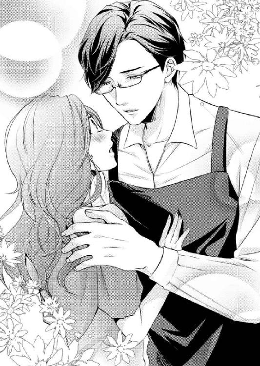
（なぜだろう......）
文句を言う気が起こらない。
それどころか、彼に身体を触られても、嫌悪感どころか微塵の不安さえ覚えないのだ。
──この安堵感は、なんだろう......。
「大丈夫です、あの、つまずいただけですから、すみませんっ」
「本当ですか？」
「はい、眩暈だったら、すぐには立てませんから」
「よかった」
ホッとした笑顔を見せ、雄大は桃香から腕を離しかける。桃香は戸惑いながら照れ笑いをしたが、その表情は直後固まってしまった。
眼鏡のフレーム横を指先でクイッと上げ、雄大が顔を近づけてきたのだ。
「あっ、桃香さん、ベビーローション使ってくれたんですね」
「あっ......はっ、はいっ......、使わせていただきましたぁっ」
なぜ分かったのだろう。使ってからだいぶ時間がたっているというのに。
「あのローション、わずかにですけど桃の香りがするんですよ。桃香さんからその香りがしたので、使ってくれたんだと分かりました。お肌には、合いましたか？」
「はい、特に異常もなく、使い心地もいいです。......あの、どうしてベビーローションなんて持ってるんですか？ ......赤ちゃんがいるわけでもない......、ですよね？」
なんとなくおかしな質問の仕方になってしまった。
雄大のように、雰囲気もやることも、そして部屋も高級な人物に、ドラッグストアでよく見かけるベビーローションは、どうしても不似合いな気がする。
桃香から手を離し、彼女がシッカリと立っている姿を確認した雄大は、クスリと笑ってはにかんだ表情を見せた。
「実は僕、メンソール系の香りが苦手なんです。男性用の整肌剤って、メンソール系などの香料が入った物が多くて困ってしまいます。ベビーローションは、髭剃り後などに使用しています。刺激はないし、つけ心地も良くて、愛用しているんですよ。今使っている国内ブランドの物が一番気に入っています」
桃香は目を丸くして雄大を凝視する。彼の話やはにかんだ表情に気持ちが惹きつけられている自分に戸惑うが、それよりも、彼に対して心臓が大きく脈打ってしまったことに動揺せずにいられない。
（なに......、ちょっ......）
彼女の戸惑いも知らず、雄大は再び顔を近づける。
「桃香さんはとても綺麗な肌をしていらっしゃるから、下手にいろいろ化合物が含まれた化粧水じゃなくても大丈夫だろうと考えてお勧めしてみたのですが、正解でした」
「そ......、そうですか......。すいません、なんか、スッピン晒してて......」
「謝らないでください。偶然とはいえ、女性の素顔を見るなんて特権にあやかってしまって、僕が謝らなくてはいけないくらいです」
介抱した側とされた側。どうせすぐに別れる者同士なのだから気にしないと思っていたのに、いつの間にかしばらくの同居が決まってしまった。
そう考えると、急にスッピンが恥ずかしくなる。桃香は意識的に顔をそらすと、シンクに向かった。
「私、食器洗いますね。スポンジはここにあるのを使っていいのかな」
食器用スポンジを手に蛇口をひねると、冷たい水が手に気持ちいい。咄嗟にこの水で顔を洗いたくなる。
今顔を濡らしたら、どんなに気持ちがいいだろう。──熱を持って赤く染まったこの肌を。
水の冷たさに心地良くひたっていると、桃香の身体になにかがふわりと巻かれた。
それは、さっきまで雄大が着けていたエプロンだ。
「お洋服が濡れてしまっては困りますから。ひとまず使ってください。僕がしていた物で、すみません」
桃香にエプロンをつけさせ、腰の紐を結ぶ。背の高い彼に合わせてあるので肩紐も長い。いささか前身頃が下がってしまうが、雄大はさりげなく紐の途中を結び桃香の身体に合わせた。
「あの......、片桐さん......」
「はい？」
「ありがとう、ございます......。いろいろと心配していただいて......。申し訳ないです。......でも、正直に言えば、凄く嬉しいんです。冗談抜きで、マンションには帰りたくなかったので......」
桃香の声は、わずかに沈む。そんな彼女を慰めるように背中をポンッと叩いて、雄大は横から桃香の顔を覗きこんだ。
「賃貸マンションに住んでいて、管理人とのトラブルは辛いものですよ。それも、帰りたくない、すぐにでも引っ越しがしたいというのは、よほどのことでしょう」
桃香は驚いて雄大の顔を見る。トラブルがあって帰りたくないとは言ったが、どんなトラブルなのかは説明してはいない。
普通なら、まず住民となにかあったのかと勘ぐるのではないか。
彼女の動揺を見ても、雄大は表情を崩さない。穏やかな微笑を浮かべ、桃香が思い浮かべた疑問に答えた。
「桃香さんがお住まいの部屋は、両隣と真上の三室が不自然な空き室になっているようですね。古いアパートを建て替えた名残で、ご年配のご夫婦や独り暮らしの大学生などが主な住民。特にトラブルが起こるような物件ではないと聞きました。それでも、同居人がいない桃香さんが『殺されそう』などという言葉を使うということは、唯一貴女の部屋の真下に住む管理人とのトラブルなのだろうと考えられます。管理人は、中年の独身男性だそうですね」
「......あの......」
「無理して説明をする必要はありません。もしかしたら、口に出すのもイヤなことがあるのかもしれない。それより今は、桃香さんがその状況から脱することが大切です」
桃香は雄大の顔を凝視した。これだけのことをしているというのに、彼には慢心が一切感じられない。
そして、トラブルを抱えた桃香を嘲るような様子もない。
眼鏡の奥にある双眸に穏やかさを湛えて、彼女を見つめるだけだ。
「......ありがとうございます......。なんて、お礼を言ったらいいのか......」
「さっきも言ったでしょう。躓く石も縁の端です。僕が、桃香さんを救うための石になれたのかもしれない。そう思えば幸せですよ」
ポンッと桃香の背を優しく叩き、雄大は「コーヒー淹れますね」と彼女のそばを離れる。あまりのことに蛇口を閉めることさえ忘れていた桃香は、慌てて水を止め、スポンジに洗剤をつけてから気を取り直すように尋ねた。
「あの......、聞いていいですか？」
「はい？」
「片桐さんは、どこか会社の社長さんとかなんですか？ いろいろ、なんだか私には想像もできないような人脈があるみたいだし」
「うーん、そうですねぇ......。元、社長だった、って言うほうが正しいかな」
「元？」
コーヒー豆を二種類出した雄大は、手慣れた様子でブレンドし、ミルにかける。豆を挽く音を手元で響かせながら、桃香に顔を向けた。
「桃香さん、〝インスペース〟っていう、ネットのポータルサイトをご存知ですか？」
「え？ はい......。有名なサイトだし......」
「あの会社ね。僕が作ったんですよ」
「......は？」
「五年くらい前まで社長としていろいろやっていたんですけど、疲れたので引退したんです。今は〝最高顧問、兼、相談役〟なんて肩書きがついていますが、僕としては本格的に隠居したいので、相談役だけにしてほしいんですけど」
楽しげにアハハと笑いながら、彼はミルを開く。挽きたての豆の香りが桃香の所まで漂ってきた。
とても豊潤でよい香りだ。本格的なコーヒーショップでも、間近でこんな香りに包まれる機会などない。
だが桃香は、雄大の話に驚いてしまい、その香りを堪能することができない。それどころか洗い物の手さえ止まってしまった。
（あの〝インスペース〟の......創業者、ってこと......？）
株式会社インスペース。世界各国にも手を広げている、日本でも有数のポータルサイトだ。
実際、桃香も利用している。自宅パソコンのホームにもなっているくらいだ。
（ウソでしょ......、そんな......）
信じられない。偶然とはいえ、まさかそんな大きな会社を作った人間と関わり合いになるとは。
彼が自分を「隠居」と言った意味がやっと理解できた。確かに一線を退いた身分ならば、そういってもおかしくはない。
（でも、まだ若いのに......）
すでに社長職を捨てているという彼。こんなに若くして大企業のトップの座を誰かに譲るなど、ありえることなのだろうか。
雄大のことが、分かったような分からないような。
しかし、こんな彼と、桃香は一緒に住むことになってしまった。桃香もワケありではあるが、雄大にもかなりのワケありな気配を感じる。
（......まあ......、いいか......）
なんとなく釈然としない思いは残るものの、桃香の思考はいつもの調子を取り戻す。
するとコーヒーの豊潤な香りが、彼女の笑顔を誘った。
第３章 桃香の諸事情
「桃香さーん、飲みに行きましょうよー、残業ないんでしょー？」
「やだ。めんどくさい」
即答である。
誘いの相手に一瞥もくれずにこんな返答をされては、聞いたほうも二の句が継げないというもの。
これが毎週のように繰り返されているやり取りなので、つれなくされる側だって慣れたものだ。
「もー、またぁ。『コンビニでビール買って、ひとりで飲んでいたほうが楽』とか言うんでしょう。たまには楽しいお酒につきあってくださいよー」
無駄に明るい声の主、早川菜摘が背中をバンバンと叩いてきても、桃香は湯吞みを洗う手を止めない。
終業十五分前。今日の仕事はすべて終わった。残業の予定もない。会議室から引き上げてきたこの湯吞みたちを片づけたら、桃香はさっさと帰りたい。
──安息の場へ。
「楽しいお酒、ってことは、男付き、なんでしょう？ 何回も言わせないで。合コンはお断り」
「もー。桃香さんってば。そんなこと言ってたら、ますます縁遠くなりますよー」
「結構よ。男漁りなんてしたいとも思わないし。とっくに女も干乾びてるしね」
「やだー、もーっ」
キャハハと楽しそうに笑い、菜摘は再び桃香の背を叩く。
彼女は桃香よりふたつ年下。今年の春入社したばかりの新人だ。
入社して半年。人懐こく砕けているところはつきあいやすいが、それでも限度というものがある。
砕けすぎているのだ。おまけに社交的すぎて、イベント好き。何度、合コンなるものに誘われたか分からない。
桃香が所属する販売促進課には、菜摘と共に配属された男性社員がいる。同じようなお祭り好きなので、いっそ似た者同士でくっついてしまえばいいのに。そうすれば、合コンへの誘いもなくなる。
......そんなことを考えてしまうほど、彼女の誘いは鬱陶しいことこの上ない。
合コンだの、お見合いパーティーだの、男女の出会いと謳われるものには桃香は興味もなければ関心もない。
「ひとり酒って、つまんないでしょう？ いつの間にか悪酔いして、床でごろ寝とかしちゃったりして。ごろ寝って、起きたら身体が痛いんですよねぇ」
「......そうでもないけど」
「はい？」
「なんでもない」
つい言ってしまった自分の本音に突っ込む隙を与えないように、桃香は真横に詰め寄る菜摘の鼻先へピシっと人差し指を突きつける。
泡だらけの指が目の前に迫り、菜摘はぎょっと身を引いた。
「とにかくお断り。他人に気を遣いながら飲むお酒なんて、会社の行事だけで充分」
「でも、桃香さぁん」
食い下がる菜摘の鼻に、指先の泡をペロンっと塗りたくる。驚いて目を見開く彼女に、桃香はにやりと笑って引導を渡した。
「ほらほら、無駄話してると、せっかく直したばかりのメイクが台無しになるよ」
「もっ、......もぅっ、ももかさんっ～！」
両手で鼻を覆い、菜摘は半分涙目になりながら給湯室を飛び出していく。終業十五分前にしては整いすぎているメイクを見抜いてかけてみたカマではあるが、どうやら大当たりだったらしい。
「ふーんだ。いい加減分かんなさいよ」
ハァっと嘆息し、洗い物を再開する。
冗談抜きで、会社のつきあい以外、人に気を遣いながらお酒を飲むなんてまっぴらだ。ひと言で言うなら、面倒くさい。
それと同じくらい、男という生き物も桃香にとっては面倒くさい。
「ひとりで〝さきいか〟をかじりながら飲むビールの美味しさが、どうしてわからないかねぇ。大人になれないぞ～」
楽しげに持論をひとり呟いた桃香は、湯吞みの泡を落とす手をふと止める。
「ひとりで......」
そこに、矛盾を見付けた。
──彼女自身が、今、ひとりではないのだから......。
クラウンシティ・城北。最寄り駅から徒歩五分。大型スーパーや公園、病院、各種公共施設などにも近く、二十四時間オンライン・セキュリティ・システムに守られた高級マンションだ。
二十五階建て。全室南向き。エントランスには専用コンシェルジュが駐在し、いつでも住民のニーズに応えてくれる。
（まさか......、こんな所に住むことになるなんて......）
ガラス張りのエントランスの前で、桃香は地面と平行になるほど首を反らしマンションを見上げる。
自分で部屋探しをしたなら、間違っても選択肢には入らない物件。賃貸マンションではないのだから、入りようもない。
それなのに、四日前の土曜日から、桃香はここに住んでいる。それも出会ったばかりの男性と一緒に。
「おかえりなさいませ。和泉様」
エントランスに入ると、ちょうどデスクから出てきていたコンシェルジュから、にこやかな挨拶を受ける。慣れない出迎えの言葉に桃香は身体が固まった。
「あっ......た、ただいま帰りました......。おっ、おつかれさまですっ」
どもりつつも、返す言葉として正しいのかも分からない。初めてこんな出迎えを受けたのは日曜日だった。日用品の買い物をして帰ってきたときだったが、身体が固まり言葉も出ずに硬直してしまった。幸い桃香ひとりではなかったので、なんとかその場を取り繕えたが、思い出しただけでも恥ずかしい。
（しょうがないじゃない......。こっちはハイソな人間なんかじゃないんだから）
ひとり暮らしだった男性入居者が、急に女性と暮らし始めた。それも苗字は違う。それを、コンシェルジュはどう思っているだろう。
おかしな関係だと疑ってはいないだろうか。
（親戚......くらいに思ってるかな......）
そんな正体不明な女にも、業務用の柔らかい笑顔をくれるコンシェルジュに頭を下げ、桃香はエレベーターホールへと向かった。
桃香自身、まだ信じられない。だが、彼女は間違いなくここに住んでいる。
この、十七階に──。
「おかえりなさい。桃香さん」
品の良い装飾が施されたベージュのドアが、目の前で開く。
そこから現れたエプロン姿の男性を、桃香はジッと見つめた。
「ただいま。片桐さん」
彼女の言葉に、雄大が嬉しそうに微笑んだ。
「なんだかくすぐったい気持ちですね。こうして誰かを迎えるというのは」
嬉しそう、というよりは面映い表情だ。
そんな顔を見せられると、桃香のほうが照れくさくなってしまう。
「私も......、誰かに『お帰りなさい』なんて言ってもらうの、実家から高校に通っていた頃以来です......」
大学に進学してからは、ずっとひとり暮らしだった。部屋で誰かに待たれる感覚は、忘れていたように思う。
「夕食を用意しましたから、食べていただけますか？ 余計なことでしたら申し訳ないのですが」
「いっ......いいえっ、そんな、めっそうもないっ。ありがたいです、すいませんっ......結局、いつもご飯作ってもらっちゃって......」
土曜日に同居が決まり、週が明けてこの水曜日まで、雄大は毎日夕食を用意してくれる。
桃香はといえば、同居時の条件どおり毎朝目玉焼きを作りはするが、それだけだ。
同居の提案が出されたとき、プライベートには一切干渉しないという約束があった。
雄大だって、今まで気ままなひとり暮らしだったのだから、いきなり同居人になった女に気を遣いながら生活をするのはイヤだろう。
そう考えた桃香は、部屋は借りるが今までどおり気ままに暮らそう。そう思っていた。通常どおり、食事なども適当に。
だが......。
「気にしないでください。僕が好きでやっているのですから。かえって、桃香さんにとってご迷惑なのではないかと、心配しながら用意をしています」
「迷惑だなんてそんな。毎日手作りのご飯食べるなんて、久し振りですよ。片桐さんのご飯、美味しすぎですっ。食べ過ぎて太っちゃいそうですよ、どうしたらいいんですか、お年頃なのに～」
恐縮しつつ、気持ちは少し砕けて桃香に軽口を叩かせる。ハッと口をつぐむが、雄大は楽しげにハハハと笑った。
「そうなったら、一緒にジムへでも通ってダイエットしましょう。二階フロアに住民専用のジムがありますから。おつきあいしますよ。カロリー計算は得意です」
「そ......そうなんですか。頼もしいです......。ところで......」
マンション内にジムがあるというのも、桃香にとっては驚くべきことではあるが、セレブ層の住居なのだと思えば納得できる。
それ以上に、そこには彼女の目を釘づけにするものがあった。
「どうしたんですか？ お花......、いっぱい......」
広いエントランス。そこから奥に伸びる廊下いっぱいにアレンジフラワーの花籠がたくさん置かれている。中にはラッピングされたままの花束もあった。
色とりどりのラッピングペーパーやリボン、ぬいぐるみなどのチャーム付き。これだけの華やかさは、たとえ生花店へ入ったとしても体験できるものではないだろう。
そして入ったときから、エントランス中に芳しい花の香りが満ち満ちている。
すると、クスリと笑いを漏らした雄大が照れくさそうな表情をした。
「実は、今日は僕の誕生日なのです」
「え？ 誕生日......？」
「はい。とうとう四十歳になってしまいました。血気盛んだった頃は、三十や四十歳までに天下取ってやるなんて意気込んでいたこともあるのですが、すっかりご隠居体勢です。無駄な闘志は燃やすものではありませんね」
「はぁ......」
雄大には、血気盛ん、だの、闘志、だの、言葉自体が似合わない気がする。そんな時代があったのだとは想像もできないが、仮にも彼は大企業の創業者。現役の頃は、そんな一面も持ち合わせていたのだろう。
「花とか果物とか、朝から宅配の方が入れ替わり立ち替わり訪ねてきていました。役員やら知人やらが送ってくれたようです。誕生日パーティー的な集まりも企画してくれたようですが、明日にずらしてもらいました」
「どうしてですか？ 以前から言われていたんじゃ......」
「いいえ。正午すぎに電話が入って、急に言われたのですよ。僕を驚かせるつもりで当日まで黙っていたというのですが、夜の集まりですし、桃香さんにも出かけると言っていなかったし......」
「そんな！ 気を遣わないでください！ いいんですよ、私、片桐さんが留守なら留守で、留守番くらいはシッカリできるつもりですからっ」
「でも、秋刀魚をいただいてしまったあとだったので......」
「......へ？ 秋刀魚......」
桃香は目をぱちくりとさせる。
急にできてしまった同居人に気を遣わせて、雄大のプライベートを不自由なものにしてはいけない。そう考えて慌てたが、彼はあっけらかんとして予定をずらした理由を口にした。
「ええ。とても大きくて脂乗りのよい新物の秋刀魚です。漁港からの直送品だそうですよ。お刺身にもできます。ぜひ夕食に桃香さんと食べようと張り切っていたというのに、いきなり『パーティーするから』と言われても、困ってしまうではないですか」
「......だ、だから......。断ったんですか......？」
「はい」
雄大はにこやかに笑っているが、桃香は呆気にとられている。
彼は秋刀魚ごときのために、パーティーの誘いを断ってしまったのだ。
（なんてもったいないっ！）
そう思うと、桃香は思わず雄大に詰め寄らずにはいられない。
「な、なんてことをするんですかっ！ パーティーに行けば、元社長さんですもの、今だって最高顧問とやらなんですから、それはそれは盛大で豪華なものなんでしょう!? ご馳走もあるだろうし、美味しいお酒もあるだろうし、コンパニオンとかいうものも付くでしょうから、美人はべらし放題じゃないですか！ そっ、それをっ......！」
「でも、秋刀魚の鮮度が下がってしまうではないですか。お刺身にできなくなってしまいますよ。冷凍保存という手もありますが、せっかくの直送ですから、冷凍はもったいない。それに、美味しいものを食べるために誰かと一緒に食卓に着けるなんて、とても幸せなことです」
──呆然。
なんという理由だろう。
彼は本気で、たかが秋刀魚のためにパーティーを延期させたのだ。
「というわけで、焼きたてのほうが美味しいので、桃香さんが帰ってきたら焼こうと思っていたのです。十五分ほど待っていてくださいね。うちのクッキングヒーターは、グリルで七輪焼きができるんです。結構優秀ですよ。今から焼きますから」
「ま。待って、片桐さんっ」
「はい？」
ポカンとしている場合ではない。パーティーを蹴ってまで、彼は桃香と食卓に着けることを楽しみにしていてくれたのだ。
少しでも、その気持ちに応えなくては。
「わ、私っ、ケーキ買ってきます！」
「ケーキ、ですか？」
「はい、お誕生日なんでしょう？ お誕生日と言えばケーキですよ。言ってくれれば、私、会社の帰りに買ってきたのに。城北駅の横に、洋菓子の美味しいお店があるんです。ひとっ走り行って買ってきます！ もちろん、ささやかですが私からのプレゼントですから、遠慮しないでください！」
勢い余って出てしまった言葉だが、これはいいチャンスだ。
世話になってばかりでは申し訳がない。目玉焼きだけではなく、少しはその気持ちに報いなくては。
（ケーキは嫌い......とかないわよね......）
言ってしまってからチラリと考え、焦りが生まれる。しかし、次の瞬間にこりと微笑んだ雄大に右手を取られ、胸の前でふわりと両手で握られた。
「ありがとうございます。桃香さん。そんなふうに言っていただけるなんて、とても嬉しいですよ」
「あ、その......、ケーキ、嫌いじゃないですよね......。どんなのがいいですか？」
「はい。甘いものは好きです。単細胞なので、ごく普通のケーキが好きです」
雄大のような人間に、「単細胞だから」などと言われると困ってしまう。
笑いを引きつらせつつ、桃香は握られていた手をさりげなく外し脱ぎかけていた靴を再び履いた。
「じゃぁ、ちょっと行ってきます。お魚焼くの、少し待っててくださいね」
「はい、お待ちしていますよ」
嬉しそうな彼の表情に刹那見惚れるが、桃香は意識的に顔をそらして部屋を出た。
駅まで五分、往復十分。店に五分いたとしても、十五分もあればマンションへ戻れるだろう。
雄大の言う「普通のケーキ」とは、白いふわふわの生クリームに赤いイチゴのショートケーキのことだと思う。買う物が決まっているのだから、店で迷う必要はない。
......と、思ったのだが......。
「いっぱいあったなぁ。迷いそうになっちゃった」
その迷いを抑え、なんとか急いで買い物を済ませた桃香は、息を吐きながら背後を振り返る。
今出てきた大きなガラスの自動ドアの向こうには、老若男女たくさんの客の姿がある。品揃えが豊富で、そのぶん店内も広い。駅のほぼ隣という立地条件の良さも、人気にひと役買っているに違いない。
洋菓子店〝プティ・ボヌール〟。「美味しい」という噂は聞いていたが、買いにきたのは初めてだ。
先週まで住んでいたマンションからは遠いし、近くに住んでいる友人知人もいなかったので、わざわざケーキを買うためだけに訪れる気にはなれなかった。
社内の女子社員たちのあいだで、時々話題になる有名店だ。なかには、まったく逆方向の実家からわざわざ買いに行ったというツワモノもいるらしい。
（いくら美味しいって聞いても......、面倒だしねぇ......）
それが、桃香の本音だった。
だが、今のマンションに近いのは都合がいい。おまけに通勤のために利用する駅に隣接している。
（ケーキの種類も豊富だし、ちょくちょく覗きに来ちゃおうかな）
ちょっとした楽しみが増えた気分になる。ケーキの箱を目の前に掲げ、にんまりと満足げな笑みを浮かべて桃香は歩調を早めた。
できるだけ急いで帰ったほうがいい。雄大のことだ。桃香が帰ってくる時間を予想して、もう焼き始めてしまっているかもしれない。
（焼きたての秋刀魚かあ......。そんなの久し振りすぎる。缶詰の蒲焼なら、よく食べるけど）
正直をいうと魚、特に青魚は、それほど好きではない。なんといっても小骨が多くて食べづらい。
でも、雄大がイチ押ししてくれているのだと思うと、とても心が浮き立った。
（でも、自分の誕生日に秋刀魚って......。いくら初物でも、変わった人だよね。ベビーローションといい、変なところで庶民的っていうか）
つい、くすくす笑ってしまう。彼には『落ち着いた人。少し天然気味』というイメージを抱いてしまっているため、なんとなく生クリームよりも餡子が似合いそうな気がする。ケーキと一緒に和菓子も買ってくればよかったかとまで思ってしまった。
落ち着きがある......というよりは、ありすぎる。
四十歳のイイ歳をした大人なのだから落ち着きがあって当たり前、といってしまえばそれまでだが、彼には、実年齢以上の悟りきった深い落ち着きを感じるのだ。
ＩＴ企業の創業者にはそぐわないような物腰の柔らかさ。一線を引くことになったのは、もしかすると権力抗争などに巻きこまれ、あえなく敗北したからではないかとまで勘繰ってしまいそうになる。
「お客さーん！」
大きな通りからマンションへ続く小路へ入ろうとしたとき、誰かを呼ぶ声と同時にアスファルトを蹴って走る足音が背後から聞こえた。
桃香以外、周囲に人影はない。おのずと、桃香を呼んでいるのだと見当がついた。
「お客さん」ということは、プティ・ボヌールの店員だろうか。なんの用事があって追いかけてきたのだろう。そう考えながら振り向こうとした桃香の前に、立ちはだかる人影があった。
その人物を見た瞬間、桃香は視線が釘づけになる......。
視線だけではない。身体も固まり、あまりの驚きに息まで止まりそうになった。
（......どうして......、ここにいるの......）
目の前にいるのは、中肉中背、ポロシャツにスラックス。特にこれといった特徴も見つけられないような、黒縁眼鏡の中年男だ。夜道ですれ違っても、危険を感じる要因などないくらい真面目な雰囲気を持った男。
──確かに、この男は真面目なのだ。
先週まで桃香が住んでいたマンションの管理人、菅原。
細かく住民に気を配れる男だが、ただ、彼女に対しては、細かすぎた──。
「みぃつけたっ。どこに行っちゃったのかと思って、捜したんだよ......。モモちゃん......」
真面目な顔をぐにゃりと歪め、菅原は野太いトーンの猫なで声を出した。
「急に引っ越しだなんてさぁ......。おまけに、モモちゃんは一度も顔を見せずに手続きは済んじゃうし、モモちゃん見つけるのに四日もかかっちゃったじゃないか」
汗ばんだ手が、ねちょりと桃香の右手を摑む。眩暈がしそうなほどの薄気味悪さに背筋を冷やし、その手を振り払おうと、反射的に摑まれた手を振り上げた。
「......ひゃっ......！」
大きく吸いこんだ息が、おかしな悲鳴になる。右手に持っていたケーキの箱は、勢いよく手から離れて宙を舞い、アスファルトの上に落ちてひしゃげた。
抵抗をものともせず、菅原はさらに詰め寄ってくる。桃香は身をよじり無我夢中で突き飛ばした。
「うわっ！」
驚きの声をあげたのは、大きな歩道に倒れこんだ菅原ではない。
白衣と白いエプロンを身に着けた青年だった。
第三者が現れたことに焦ったのか、菅原は急いで立ち上がり、下手な舌打ちを響かせて駅方向へ走り去っていく。
桃香も慌てるあまり「すみません」と言い捨てて立ち去ろうとしたが、すかさず白衣の青年に呼び止められた。
「あっ、お客さんっ、待ってください！」
菅原が現れる前、誰かに「お客さん」と呼びかけられていたことを思い出す。この青年が声の主だったのかと、桃香はおそるおそる振り返った。
「はい、百円。お釣りのトレイに忘れていましたよ。よかったぁ、返せて」
百円玉を指で挟んで差し出しながらホッとした笑顔を見せる青年は、テレビドラマなどでよく見るパティシエ風の白衣を着ている。そういえばケーキを買いに行ったとき、客が多くて販売員の女の子だけでは手が回っていなかった。すると、店の奥からこんな白衣を着た男性が出てきて、桃香の注文を聞いてくれたのだ。
「それとこれ、スタンプカードです。ごめんなさい、渡し忘れてしまって。ぜひまたご来店ください」
彼は間違いなく桃香と菅原が揉めていた場面を目撃していたはずなのに、笑顔のままだ。
厄介事らしいと思っているので、関わり合いになるのはご免だと渡す物だけ渡して急いで引き上げようとしているのだろうか。
なにも見ていません。気にしていません。そう言わんばかりの態度を取られてしまうと、桃香はかえって申し訳なくなる。
差し出されたカードとお金を受け取り、ぺこりと頭を下げると早々に歩き出した。
「桃香さん！」
すると今度は前方から、彼女を呼ぶ声が響いた。
俯いていた顔を上げる。マンションの方向から走ってくる雄大の姿が目に入り、驚いて桃香も速足になった。
「片桐さん......」
「よかった、ここにいてくれて。そろそろ焼き始めようかと思ったのですが、桃香さんが無事に帰ってきているかが気になって、様子を見に出てきてしまいました」
雄大は笑顔でここに来た理由を口にする。そして彼は、桃香の背後を見て一瞬目を見開いた。
穏やかな双眸に、なぜか一瞬困惑が走る。
つられるように振り返った桃香の目に映ったのは、店へ向かって帰って行く、プティ・ボヌールの青年の後ろ姿だった。
「あ、あの人は......」
雄大は、彼女がプティ・ボヌールの青年と話をしていたところを見ていたに違いない。
咄嗟に青年が桃香を追いかけてきた理由を口にしようとして、桃香はハッと言葉を止めた。
せっかく買ったケーキの箱は、菅原の手を振り払ったときに落としてしまった。路の隅でひしゃげている箱を、どう説明しよう。雄大はそれに気づいているだろうか。
地面に叩きつけられた箱を目にすれば、彼は心配するだろう。そうなると、なぜこんな状態になってしまったのかを説明しなくてはならなくなる。
「あ......あの......、実は、ケーキ、買えなくて......」
「え？」
「あそこのケーキ屋さん、凄い人気あるんですよね。店員さんも忙しそうで、なかなか順番も回ってきそうになくて、こんなところでモタモタしてて、もし雄大さんが秋刀魚を焼き始めていたら焼き上がる頃に帰れないと思って......、諦めて外へ出たんです。そうしたら店の人が追いかけてきて、『お待たせしてごめんなさい、また来てくださいね』って言ってくれて......」
咄嗟の言い訳にしては上出来だと思う。ただしこの説明を、雄大が信じてくれれば、の話だけれど。
ケーキは最初から買っていない。そういうことにしておけば、ひしゃげた箱の説明をしなくてもよくなる。
明日でもいいから箱を始末して、雄大の目に触れないようにしておこう。
......そうすれば、菅原がここへやってきたことも説明しなくてすむ......。
買わずに帰ってきたなんて、そんな無責任な言い分を信じてくれるだろうか。いくら雄大でも、疑問を持つのではないか。
桃香がおっかなびっくり顔を上げると、怪しむ様子など微塵もなく、穏やかな表情をした雄大がいた。
「そうですか。正解ですよ、桃香さん。そんなに混雑している中を待っている必要はありません」
「あの、片桐さん、ごめんなさい。ケーキは明日にでも......」
「いいのですよ。人気店ですし、このくらいの時間帯は帰宅ラッシュですから、混むのは当然です。ケーキはまた次の機会に、僕が買っておきますから」
桃香の横に立ち、彼女の背をポンッと叩いて促し、ゆっくりと歩き出す。
これは、桃香の言い訳を信じてくれたのだと思ってもいいのだろうか。事情を聞かれないのなら、それに越したことはない。
桃香は、何事もなかったふりを演じながら笑顔を作り、雄大を見上げた。
「片桐さん、マンション横のコンビニに寄っていきましょうよ。せめてコンビニスイーツでも買って帰りましょう」
「いいですね。コンビニブランドのロールケーキは大好きです」
「私もです。よぉしっ、明日の朝のデザートにもできるように、多めに買っていきましょう」
「朝からロールケーキですか？」
「駄目ですか？」
「いいえ、大歓迎です」
嬉しそうな笑顔を見せる雄大は、実にノリがよくストレートで気持ちがいい。
いつのまにか、桃香の笑顔も作りものではなく心からのものに変わった。
突然のハプニングも忘れるくらい気分がよくなったせいだろう。桃香は雄大の服の腕を摑み、目の前に見えるコンビニの看板を指差して軽く引っ張った。
「そうと決まれば急ぎましょう！ 早く買って帰らなくちゃ」
早足になる桃香に合わせ、雄大の歩調も早まる。そして、コンビニの入り口にさしかかったとき、雄大は一歩前へ出てドアを開けながら彼女の耳元に唇を寄せた。
「桃香さんは、本当に素直な反応をしますね。女性らしくて、無邪気で、とてもかわいらしいですよ」
予期せぬ言葉をもらって、思わず息を吞む。桃香は動揺を悟られまいと、そのままスイーツコーナーまで雄大の先を歩いた。
コンビニスイーツの定番、オリジナルロールケーキは四個残っている。今夜と明日の朝の分とで数もピッタリだ。
「カゴ持ってきますね」
そう言って傍を離れる雄大に返事もできないまま、桃香は不覚にも赤くなってしまった頰を両手で押さえる。
（なに......赤くなってんの......）
雄大が戻ってくるまでに、この頰の熱が収まってくれますように。
自分を戒めながら、桃香はドキドキする胸を手で押さえ、それを願わずにはいられなかった。
桃香が雄大から借り受けたのは、玄関を入ってすぐ右側にあるゲストルームだ。
廊下を挟んで向かい側にトイレやバスルームなどがある。リビングから離れているので、雄大に気を遣わずにサニタリー関係を使えるのは女性として有難いところ。
最初の説明で、雄大は自分の書斎やベッドルームから部屋は離れていると言った。もしかして男と同居するという部分で、桃香に余計な不安を与えないために言ったのかとも考えたが、彼の説明は間違いではなかったのだ。
泥酔した翌日、桃香が目を覚ました部屋。あそこが雄大のベッドルームで、書斎はそことドア一枚で繫がっている。
ベッドルームがリビングと隣接しているので、桃香が借りている部屋とは、本当に端と端だ。
「ハァ......、さっぱりしたぁ」
満足そうに呟き、ほこほこと温かい身体にパジャマを着て、頭からバスタオルをかけたまま、桃香は部屋のドアを開いた。
広いトイレを見たときも驚いたが、バスルームも広い。洗い場で大の字になって寝転がっても余裕があるくらいだ。幼い頃、家族で行った温泉旅行の家族風呂の広さを思い出してしまう。
お風呂は好きだ。疲れも、嫌なことも、すべて洗い流してくれるような気がする。
どんなに心が寒くても、外側からじんわりと温めてくれる......。
「そういえば、上の階に住民専用のスパがあるって言ってたっけ......。今度行ってみようかな」
ベッドに勢いよく腰を下ろし、缶ビールのプルトップを開ける。プシュッと手に跳ねる泡の冷たささえ心地よく感じた。
入浴後、ビールを取りにキッチンへ行ったが、リビングに雄大の姿はなかった。彼はまだ入浴をしていないので、リビングにいたらバスルームが空いたとひと声かけようと思っていたのだ。
リビングの照明は点いていたが、寝室のドアが半開きだった。その状態のとき雄大は書斎にいる。
仕事かもしれないし、プライベートの時間を楽しんでいるのかもしれない。どちらにしろ、彼が書斎にいるときは声をかけないようにしている。
キッチンで、粗熱を取っている最中の鍋を見つけた。中身は秋刀魚の甘露煮だ。
雄大が貰ったという秋刀魚は十尾あったらしい。夕食で二尾焼き、もう二尾分を刺身にした。残り六尾が甘露煮になったのだ。
『明日の朝食で食べられますよ。甘めのほうがお好きでしょうか？ それでしたら、ざらめを多く入れますね』
いい気分で彼の言葉と笑顔を思い出し、喉を鳴らしてビールをあおる。自然にプハァと至福の息が吐き出された。
「美味しーっ」
お風呂上りのビールも美味しいが、夕食も美味しかった。正直、心底から秋刀魚が美味しいと感じたのは初めてだ。鬱陶しいだけの小骨も気にならなかった。
「朝ご飯楽しみだなー。ご飯が楽しみだなんて、ちっちゃい頃以来じゃない？」
ひとり幸せを嚙みしめ、サイドテーブルにビールの缶を置きベッドに寝転がる。
先週まで寝ていたベッドとは格段に違う寝心地をくれるこれは、元々この部屋に用意されていた客用のものだ。
貸してもらった約十二畳の部屋には、ホテル並みの家具や調度品が揃えられている。ベッド、簡易デスク、サイドボード、大きなクローゼット、時計やテレビまで。
いつも使っている家具のほうが使い勝手がいいなら、置いてある物と入れ替えると雄大は申し出てくれたが、ここは十七階だ。ベッドやらデスクやらを出したり入れたりするのは大変な作業だろう。
やるのは業者なのだから桃香に面倒なことはなにもないが、ここまでいろいろとしてもらって、さらに家具の入れ替えまでを頼むのはさすがに悪いと思った。
（傷つけないように使えば、大丈夫だよね）
物をぶつけたりぶつかったり、無理に動かしたりしなければ、家具など簡単に傷つくものではないだろう。
以前の部屋にいたときのように物を乱雑に扱ったりはできない。それを残念に思わないのは、雄大の人柄を思い、自分も彼に応えられるようにしなくてはいけないと、謙虚な気持ちになっているからだろうか。
うつ伏せに転がりシーツに顔を落とす。
「なんか......、先週までとは天と地の差だなぁ......」
ぼんやりと、過去の自分を思い出す。
散らかし放題の部屋の中で、好き勝手な生活をしていた自分。
好き勝手すぎて、自由すぎて、気を緩めすぎて、自分を守ることにさえ怠慢になっていた......。
桃香の目に、大きな窓が映る。そのままベランダへ出られる、片開きの窓だ。
以前住んでいたマンションの窓も大きかった。
物干し場に使えるベランダもあった。
住宅地の中に紛れてこっそりと建っているようなマンションは、ひとけのない裏通り側に窓があり、面倒くさがってカーテンを閉めたこともなかった。
一気に飲んだビールが回ったのだろうか。ぼんやりと視界が歪む。
と......、──窓の脇から、こっそりと部屋の中を覗きこむ眼鏡の影が......。
ニヤけた中年男の醜顔が見えた気がした。
桃香は息を吞み、瞠目して顔を上げる。
数回まばたきをして凝視してみても、窓の外には夜の暗闇が広がっているだけ。ここは十七階だ。人の姿などあるはずがない。
（もう......、怖がることなんてないのに）
幻を払い落そうと頭を振り、勢いよく毛布にくるまる。
気持ちを切り替え、ゆっくり視線を上げると、窓の外には月の姿。
優しい光で照らしてくれる月が、まるで雄大の微笑みのようだと、桃香は思った。
「今夜は例のパーティーで出かけます。そんなに遅くはならないと思いますので」
そんな話を雄大にされたのは、一晩おいて味も馴染んだ秋刀魚の甘露煮と、ワカメと厚揚げの味噌汁で朝の幸せを嚙みしめているときだった。
「僕も、今日は午前中の会議に出席しなくてはならないので出社しますが、夕方までには戻ってきます。簡単に手を加えれば食べられる夕食を用意していきますので、会社から帰ったら......」
「いっ、いいですよ、片桐さんっ。出かける準備だってあるでしょうから、私、夕ご飯くらい適当に済ませ......」
桃香は咄嗟に言うが、彼女のセリフは途中で止まってしまう。
雄大は、わざわざ桃香だけのために夕食の支度をしておいてくれると言っている。
普段のなにもないときならばともかく、今夜は大切な用事があるというのに気を遣わせるのは申し訳がない。
ひとりならひとりで、以前と同じようにすごせばいいだけ。そう考えた。
......のだが、夕食を遠慮する桃香の様子を感じ取った雄大の表情が、徐々に寂しそうなものに変わり始めてしまったのだ......。
（そ、そんなっ、置き去りにされた仔犬みたいな目をしないでくださいっ！）
いつもは眼鏡の奥で虹の形を作っている彼の目は、眉と共に目尻までも下がり、とても悲しそうだ。
彼を気遣ったつもりだったというのに、これではまるで桃香が苛めているみたいだ。
「でも！ やっぱり片桐さんのご飯が食べたいです！ お忙しいのに、すみませんっ！」
叫んだ瞬間、ぱあっと彼の表情に花が咲く。嬉しそうに破顔した雄大は、「はい」と面映ゆい表情を見せた。
（片桐さんって......、ド天然だよね......）
とてもじゃないけれど、激しい競争の中で生きてきたというイメージのある、ＩＴ企業の経営者だったとは思えない。彼からは、小賢しいたくらみや、大人が持つずるい駆け引き的なものを一切感じない。
同居の条件とされている目玉焼きの件だって、結局あれは、マンションに帰れない桃香を助けるための口実だったように感じる。
彼は同居を始めて数日たった今も、初日の雰囲気を崩さない。そこにあるのは、常に包みこまれるような大らかさと安心感だ。
初日、男女の関係狙いではないかとちょっと思ったが、もちろんそんなものを強要されることはない。
彼は常に、自然体でしかない気がする。
（こういう人を、聖人君子とかって言うんじゃないかな......）
味噌汁椀を持ったまま、知らず彼を凝視していたらしい。桃香の視線に気づいた雄大は、にこりと微笑んで席を立ち右手を差し出した。
「おかわりですか？」
「えっ......あ、いえ、......ぁ、はい、おかわり下さい」
「はい」
ついついしてしまうおかわり。だが、無理をしているわけではない。
雄大の手作りの味噌汁は、全身を隅から隅まで温めてくれるような気がする。
まるで、彼本人のように......。
この日、桃香は二時間ほどの残業をこなしてから退社した。
今週はずっと、定時で退社し寄り道をすることなくマンションへ帰っていた。
帰ると誰かが自分を待っていてくれる。それは、桃香にとって知らず知らずのうちに仕事よりも大切なことになっていたらしい。
というのも、今日は帰っても雄大がいないと思ったら、残業をしてもいいかという気になっていたのだ。
「......寂しかったのかな......。私......」
駅を出たところで立ち止まり、ポツリと呟く。人の流れを邪魔する形になっていたのにもかかわらず、通行人たちは彼女をうまくよけて通りすぎていった。
大学生になってから親元を離れ、ひとり暮らしが始まった。今の会社に入社してから、ほんの半年余り〝ふたり暮らし〟になった期間はあったが、相手はいつも帰りが遅く、待っていてもらう、という気分を味わったことはない。
ひとり暮らしに戻ってからは、自由気まま、好き勝手な生活を続けていた。そして、それに満足していたはずなのに......。
「......片桐さん、まだ帰って来てないんだろうな......」
ひとりごとの声のトーンが沈んでいることに気づき、桃香は頰を軽く叩いてゆっくりと歩き出した。
なぜこんなに気持ちが暗くなるのだろう。帰ってもあの穏やかな笑顔の人がいない、そう考えるだけで足取りさえ重くなる。
『せっかくのお誕生日パーティーですからね。美人はべらせて楽しんできてください。まあ、そんなことしょっちゅうしてるのかもしれませんけど』
『僕はインドアな人間ですからね。最近はそんな機会もありませんよ。でも、桃香さんがそうおっしゃるなら、はべらせてみましょうか』
『美人に囲まれて鼻の下伸ばしてる写メ、待ってます』
彼をからかっていたときは、本当に楽しんできてほしいと思っていた。
雄大は毎日会社へ出社しているわけではないが、夜には書斎にこもっている。彼女が会社へ行っているあいだも、家で仕事をしていることもあるのだろう。
今のところ、プライベートで出かける姿は見たことがない。だからこそ、せっかくの誕生日イベントなのだし、雄大からは想像しにくいが〝鼻の下を伸ばして〟楽しんできてほしいというのが桃香の本音だった。
なのに......。
（勝手だな......私......）
今は、帰っても彼がいないことを、こんなにも残念に思っている。
「コンビニでお酒買い込んで、ひとり酒でもしようかな」
ビールは冷蔵庫に入っているので、焼酎でもカクテルでもいい。目についたものを買って、ひとり酒の勢いに乗ってさっさと寝てしまおう。
寝てしまえば、寂しさをかかえて自己嫌悪に陥ることもない。
「そうしよう。うん」
ひとり納得し、わずかに足を速める。マンションへ続く小路へ入ろうとしたが、昨日の一件を思い出し曲がるのをやめた。
このまま広い歩道を回っていこう。マンションやコンビニへは遠回りになるが、ほんの数十メートルのことだ。
だが、通り過ぎようとした瞬間、桃香はいきなり腕を摑まれ、物凄い力で引っ張られた。
「......きゃっ......！」
そのまま小路へ引っ張りこまれるのと、腕を摑んだ相手に顔を向けたのは、ほぼ同時だった。
「遅かったねぇ、モモちゃん......。なにしてた？ ずっと待ってたのに！」
耳に入れたくない声と、見たくない顔。そこにあったのは、ニヤけているのか怒っているのか判別できない菅原の歪んだ醜顔だった。
待たれるということに幸せを感じ始めていたというのに、菅原の待っていたという言葉には嘔吐感しか覚えない。
桃香の脳裏に、数日前、真面目な管理人という仮面が剝がれたときの感情がよみがえる。この男が持つ異常性を思い出し全身が総毛立った。
身体が硬直して突き放すことができない。すると、桃香はいきなり菅原に突き飛ばされた。
路辺に立つ樹の横で転倒しそうになる。反射的に手と膝を芝につくが、四つん這いで屈んだ体勢になった桃香の背中に、菅原が覆いかぶさってきた。
「ここにいれば、モモちゃんが来ると思って、ずっと待ってたんだよ。キミの会社が終わる時間から、ずーぅっと......」
「やっ......！」
身体をよじり菅原を振り払おうとするが、圧し掛かるように体重をかけられているので、そのまま地面に押しつけられてしまう。
桃香は腕に力を入れ、なんとかこのまま這うようにして前に出ようとした。そうすれば振り払える可能性があるかもしれない。
「なにしてたんだい？ 男と一緒だったわけじゃないよねぇ。そんなわけないよね、モモちゃんは、男っ気なんか一切ない子だったし、エッチなことにも興味のない、かわいい子だもんねぇ」
「や......、はなしっ......」
「ねぇ、どうしていきなり引っ越しちゃったのさ。モモちゃんはかわいいんだから、ひとりになったら悪い男に狙われるよ。──せっかく、ずーっとボクがモモちゃんのこと見ててあげたのに......」
「放して......！」
自分の生活を、ずっと他人に監視され、......覗かれていたなどという、薄気味悪い状況だったことは、もう考えたくない。
忘れてしまいたい。
──先週の金曜日、自分がずっと菅原に監視されていたという身の毛もよだつ事実を知った桃香は、菅原と口論になりマンションを飛び出した。
小料理屋で浴びるほど酒を飲み、意識を失って......。
そして──。
「モモちゃん～、先週の金曜日、キミが怒ったことは許してあげる。ボクを殴ったことも......。だからさぁ、戻っておいでよ」
「イヤだってば！」
桃香の声に嗚咽が混じる。
すると、圧し掛かっていた菅原の身体が急に離れた。
泣きそうになっていると思って離れたのだろうか。このチャンスを逃す手はない。桃香は這うように前へ進み、後ろを振り返った。
もしも再び菅原が襲いかかってきたなら、遠慮なく殴りつけてやろう。そう心に決め、握りこぶしを作る。
だが、その意気込みは無駄になった。
目の前には、羽交い締めにされ身体の自由を奪われた菅原が立ちすくんでいる。後頭部を押さえつけられているので、菅原は相手を確認するために振り返ることもできない。
「......イヤだ、って......、言っているじゃないですか」
桃香は瞠目する。驚きで息が止まりそうになった。
「イヤだっていう女の子に無理やり迫るのは、犯罪ですよ。管理人さん、菅原さんと、おっしゃいましたか？」
菅原を羽交い締めしていたのは、スーツ姿の雄大だったのだ。
パーティーから帰ったところにしては、時間が早すぎる気がする。
いったいなにが起きたのかさっぱり分からないでいる桃香をよそに、雄大は相変わらず穏やかだが有無を言わせない声色で菅原を威圧する。
「警察を呼びましょうか。ああ、弁護士のほうがいいですね。彼女への嫌がらせ、及び、ストーカー行為をやめないのなら、今すぐにあなたを告訴します」
告訴の言葉に驚いたのか、菅原は突然手足をばたつかせ始めた。ずれた眼鏡が落ちかけているのも構わず、顔を動かして振り向こうとする。
「わ......分かった......、分かったから、離してくれっ！」
桃香が立ち上がったことを確認し、雄大は菅原にかけていた羽交い絞めを解いて軽く突き飛ばす。眼鏡を落として菅原が足をもつれさせているあいだに、桃香の前に行って背中で彼女を庇った。
桃香の安全を確認した雄大は、眼鏡の位置を直しネクタイと襟元を整え、ふうと息を吐く。
一方菅原は、眼鏡を踏んづけてしまったせいで曲がったテンプルを、なんとか耳に引っかけようと苦戦していた。
「金輪際、桃香さんの周囲をうろつかないと約束をしてください。もしも再び怪しげな気配があったなら、今度は予告なく告訴手続きをとります」
冷静で穏やかだが、雄大の口調には逆らい難い迫力がある。
巨大企業の創業者たる人間の片鱗を間近で見てしまった気がして、桃香は緊張して斜め後ろから雄大の横顔を見つめた。
それは菅原も同様であるらしく、こわごわと立ち上がり、探るように雄大を見る。
「あ......あんた、......なんなんだ......。和泉さんの、会社の上司とか......」
「彼女の同居人です」
「同居人？」
菅原は目を丸くする。
男の影など微塵も見せていなかった女が、引っ越したと思ったら急に男と同居をしている。それを聞いて、菅原の表情はみるみるうちに険しいものに変わった。
「......カゲに隠れてこそこそと......。男なんていませんって顔して......、実は上手くやってたわけだ......」
憎まれ口を叩き、菅原は開き直るように雄大を睨みつける。
「ストーカーだの、嫌がらせだの、おかしなことを言わないでほしいな。オレは、その女が弁償もせずに部屋を引き払おうとしてるから、捕まえにきたんだ」
「弁償、とは？」
「その女、マンションがペット禁止なのを知ってて猫を飼っていたことがある。その猫が壁を引っ搔いて傷が付いてんだよ。おまけに猫の匂いが染みついてる。ペット厳禁の部屋にあんな匂いのする生き物を入れるなんて、非常識だろう」
「あれは......！」
桃香は思わず食ってかかりそうになった。菅原の説明は、あまりにも間違いが多く筋が通っていない。
確かに仔猫を部屋へ入れたことがある。捨て猫が雨に濡れていたのを見ていられなかったのだ。
しかしそれは半年も前の話で、大雨警報が出ていた日に一晩部屋へ置いただけで、翌日、泣く泣く元の場所へ戻したのである。
翌朝、仔猫を腕に抱いてマンションを出る際、ばったりと菅原に出くわしてしまった。そのときはまだ菅原の正体を知らなかったので、桃香は素直に事情を説明したのだ。
それに対して菅原は、「一晩くらい大丈夫です。優しいですね、和泉さん」と、人としての寛大さを見せていたはずだった。
今さらこの件を持ち出して因縁をつけるなど、お角違いもいいところではないか。
「あのときは......しかたがない、って......。それに、半年も前で......」
反論しかけた桃香の前に、黙って、と言わんばかりに雄大の手が立てられる。思わず口をつぐむと、彼は手をスーツの内ポケットへ入れ、なにかを引き出した。
「弁償しろと。そうおっしゃるのですね」
「あ......当り前だろう......。敷金だけで済むと思うな。野良猫の臭いが部屋についたなんて知れたら、オレの責任にされる」
「百万程度でよろしいですか」
「は......？」
「二度と彼女に近づかないと確約ができるなら、さらに二百万にして小切手を切りましょう。それとも、ゼロをひとつ増やしたほうがいいですか？」
雄大は続けて内ポケットから万年筆を取り出し、手にしていた細長い束状の紙の上でペン先を滑らせる。書き終えた紙を切り離して差し出すと、わけも分からず受け取った菅原の目が、こぼれ落ちそうなほど見開かれた。
なにかを言いたい。しかし言えない。そんな状態で口をパクパクと動かす滑稽な姿を見ながら、雄大は冷たく言い放つ。
「小切手の使い方くらい、ご存知ですね？ 修理代を支払っても十分なおつりがくると思いますが」
彼が小切手帳と万年筆を内ポケットへ戻すよりも早く、菅原は渡された小切手を折りたたみ、急いでズボンのポケットへ突っこむ。
桃香のほうへ顔を向け、興奮に震える片手を上げながら作り笑いをした。
「じゃ......じゃぁね......、和泉さん。いやぁ、よかったねぇ、弁償を肩代わりしてもらえて。オレも助かったよ」
嬉しくて堪らないが、無理をして平静を装っているという様子がありありと分かる態度だ。菅原は逃げるように走り去っていった。
こんなにもあっさり引き下がるとは、予想していなかった事態だ。桃香は呆気にとられて開いた口がふさがらない。
「大丈夫ですか、桃香さん。もう安心ですよ。二度と、彼は貴女の前に現れないでしょう」
今までの張り詰めた雰囲気はどこへやら。いつもの調子で雄大が振り向く。桃香は思わず彼を問い質した。
「かっ......か、かたっ、かたぎりさんっ、なっ、なにを渡したんですかっ。こっ......小切手、って......。お金ですよね！」
「ええ。部屋の傷ですか？ 弁償しろと言われましたし」
「そんなの......、そんなの、自分のやってたことを誤魔化すために、半年も前のことを持ち出して因縁つけただけですよ！」
「分かっています。ですが、これであの人も桃香さんにつきまとわなくなるでしょうし。よいではありませんか」
「だからって......！ い、いくら渡したんですか......、ひゃ、百万、とか、二百万、とか、とんでもない数字言ってましたけど」
「三百万で切りました。これで、桃香さんに安息を差し上げられるのなら、安いものです」
「片桐さん！ どうしてそんな......！」
桃香の声は大きく震えた。それが動揺であるのか、申し訳なさであるのか、怒りであるのか、自分でも分からない。
口には出しづらいが、三百万などという金額は桃香の手取り年収よりも多い。
困惑する桃香に、雄大はにこりと微笑みを向けた。
「あれだけ貴女に執着し、貴女が嫌悪していた男が、あっさりと去ってくれたのですよ。いいことではありませんか。もしもこれ以上なにかあるようなら、弁護士に相談をして法的な措置を取るつもりです」
「......でも......、でも、こんな......お金で......」
成り行きとはいえ、自分のためにとんでもない大金を使わせてしまった。桃香は雄大の顔を見るのも辛くなり、自然と視線を下げる。
最初に桃香の引っ越しの手配をしたとき、彼は管理人である菅原のことも知り、薄らと事情を察したのかもしれない。彼女が管理人から、ストーカー行為を受けているのかもしれないと。
それだから「すぐにでも引っ越したい」という彼女の事情を、無理に聞き出そうとはしなかったのだろう。
「......知っていますか。桃香さん」
静かな声が、桃香の罪悪感を包みこむ。
問いかけられ、桃香は顔を上げた。
「金銭というものは、人を動かすことができます。行動させることはもちろん、心をも動かすことが容易くできる。とても恐ろしくて、なのに、なによりも利用価値のあるものです」
自身が持つセオリーのひとつを語る雄大を、桃香は言葉を失いながら見つめた。
「喜びも、怒りも、悲しみも、すべてがお金で動かせる。恨みも妬みも、性欲も狂気も、すべてです。......こんなもので自分を変えてしまえる。......人間という生き物は、なんて愚かなのでしょうね......」
彼から、蔑みの感情が漂う。こんなことは初めてだ。
憎々しげな口調であるのに、雄大の表情は、とても哀しそうだった────。
第４章 心が近づく夜
──スーツに白いエプロン姿というのも、新鮮なものだ。
ダイニングテーブルにひとり座り、対面キッチンの中で動き回る雄大を見ながら、桃香はぼんやりと考える。
菅原を追い払い、すぐにふたり一緒にマンションへ帰ってきた。
桃香をテーブルに着かせ、雄大はそのまま夕食の用意を始めた。
「お腹すいたでしょう。温めるだけですから、すぐに用意ができますよ」
「すぐ」の言葉通り、雄大はスーツの上着を脱いだ上にエプロンをかける。白いワイシャツの袖は肘までまくられ、首元は緩められることなく、そこからまっすぐに下がるネクタイが彼の清廉さを表しているような気がした。
白シャツにネクタイという組み合わせは、スーツを着るときにだけ用いられるものではない。エプロンや各種作業服、よく行くコンビニだって白シャツとネクタイ着用だ。
別に珍しくもない姿であるはずなのに......。
なぜだろう。桃香は、雄大のその姿に見惚れてしまう。
「コーヒーのほうが、よかったですか？」
問いかけながら、雄大は桃香の前へ丼鉢を置く。一緒に運んできた味噌汁と漬物を盆から下ろし、彼女の前に置かれていた湯吞みをずらした。
お茶は、部屋へ入って食事を用意する前に雄大が淹れておいてくれたもの。まったく口をつけていないので、別のものが欲しかったのかと気になったのかもしれない。
盆を手にしたままちょっと困った顔をする彼を見上げ、桃香はにこりと微笑んだ。
「いいえ......、違うんです......」
目の前に並べられた食事は、雄大が「温めるだけ」で簡単に食べられるからと、桃香に用意しておいてくれたのは牛丼だ。
ご飯もタイマーで炊きあがりを予約してあったらしい。お味噌汁は大根と油揚げ。アクセントに見え隠れする緑色は大根菜だろうか。
桃香は湯気のたつ味噌汁椀を両手で取り、口を近づけた。
「片桐さんのお味噌汁が......、飲みたかったんです......」
そう言って、少しずつ汁をすする。ゆっくりゆっくり、体内に温かみが広がっていった。
（......あったかい......）
いつも感じている彼が作る味噌汁の温かさが、今夜はより強く心に沁みる。それをもっと感じたくて汁を飲み干すと、雄大が片手を差し出した。
微笑む彼は無言だが、言わんとしていることは分かる。
────おかわり、いかがですか？
桃香が椀を渡すと、彼はそれを持ってキッチンへ入っていった。ほどなくして戻り、汁を満たした椀を手渡して「おかわり、ありがとう」と言いたげに虹のような笑顔を作る。
温かな味噌汁と、凝り固まっている身体をすべて溶かしてくれるような彼の笑顔だった。
ほぐされていく心は、桃香に重い口を開かせる。
「あのマンションに入居したのは、一年くらい前でした......」
自分から話す必要はなかったのかもしれない。桃香が思い出したくもないという話なら、雄大も無理に聞こうとはしなかっただろう。
あれだけのことをしてもらったのだから、事情を話すのが礼儀だ。でも、桃香は単に話を聞いてほしかったのかもしれない。──雄大に。
「周囲に大きな店とかなくて、あんまり便利な場所ではなかったけど、そのぶん静かで家賃も安くて......。夜中に騒ぐ若い子もいないし、詮索好きな奥さんとか面倒くさい住人もいない。管理人も物静かだし、住みやすくて気に入ってたんですけど......」
説明の途中で、桃香は自嘲気味に笑う。
物静かな管理人。そうだ。菅原は、そんな男だった。そう思っていた。
「半年くらい前から、なにかおかしいって気づいて......。ゴミに出したはずの雑誌がマンションの裏で散らばっていたり。ドアに郵便物の差しこみ口が付いているタイプだったんですけど、そこから新聞が抜かれていたり。ダイレクトメールなんかも、時々封が開けられたような痕跡があって......」
立ちながら聞いていた雄大が、桃香の隣へ腰を下ろす。椅子をずらして彼女のほうへ身体を向け、黙って話に耳をかたむけている。
「郵便受けに、飲みかけの紙パックジュースが投げこまれるようになったとき、怖くなって管理人に相談したんです。そうしたら、人の出入りに注意しますから安心してください、って。本当にそれから、そういうことがなくなったんでホッとしてたんですけど......」
なんの疑いも持ってはいなかった。桃香は安心して気ままな生活を続けていたのだ。
「私、なんていうか、......片桐さんに部屋を借りているから普通にしていますけど、以前は本当に部屋を乱雑に使っていて......。忘れ物を取りに部屋へ戻って、靴を脱ぐのが面倒だからそのまま入っていっちゃう、みたいな。それでも気にしないくらいだったんですよ。とりあえず、住めればいい、気が向いたら片づけよう、くらいの......」
「それが楽なら、同じようにしていいのですよ？」
「でっ、できませんよっ」
彼がとんでもないことを言い出したので、両手を胸の前で振って否定する。桃香は手を止め、キュッと握って苦笑した。
「そんな生活して、わけ分かんなくしてたから、室内の変化になかなか気づけなかった......。脱ぎ散らかしていったはずの部屋着がベッドの上にあっても、飲んで放置してあったはずのビールの缶の中身が減っていても......。『あれ？ そうだっけ？』『まあ、いいか』で全部済ませてた......」
「物の位置が変わっているのに、ですか？」
「深く考えるのが面倒だったんです。『まあ、いいや』って思っていれば、悩むこともない。『気のせい』って思って考えこまないほうが、人間は幸せでいられる......」
刹那、走る沈黙が長く感じて辛い。
ここで起こる疑問は、どうして桃香がそんな考えを持つようになってしまったのかということだ。
雄大も、それが知りたいのでは......。
だが桃香は、本題の話を続けた。
「でも、気のせい、って思えないことが起こってしまって......。見えちゃったんですよ、ベランダの隅からこっそりと部屋の中を覗いている顔が。......信頼して、いろいろ相談していた相手の、ニヤけた顔......」
拭いきれない嫌悪感が桃香を襲う。両腕を抱きしめ、彼女は肩をすくめた。
「いつからか......、覗かれるようになっていたんです。部屋の中......。カーテンも閉めないような部屋だったから......ずっと......」
「やはり、そうでしたか......」
雄大は、管理人の不審な行動になんとなく気づいていたようだった。
そもそも桃香の部屋は不自然に隔離されていた。左右と上の階が空き部屋。真下は管理人の部屋。それを雄大は、最初に引っ越しの手配をする際に知り、大きな疑問を抱いていたのだ。
管理人の特権で、菅原は合い鍵を使い、桃香の部屋をとり囲む空き部屋に出入りができる。そこから彼女の様子や物音を探ることも可能なのだ。そして各部屋のベランダは近い。隣の部屋から桃香の部屋のベランダへ移動することだってできなくはない。
同じように、ゴミや郵便物、そして、彼女の部屋の中を覗き見ることだって、あの男だからこそできたこと。
「すぐに、抗議したんですよ......。こんなのおかしいでしょう、覗き見なんて。そうしたらあの人、言うに事欠いて『覗いてたんじゃない、見守ってたんだ。独り暮らしでいろいろ不安がってる女の子を見守ってあげてるのに、どうして文句言われなくちゃならないんだ』って開き直って......」
覗きを覗きだと思わない考えかたこそがおかしい。激しい口論となり、桃香は菅原をひっぱたいてしまった。
「一発殴って、マンションを飛び出したのが、先週の金曜日です」
「だから、あんな飲みかたをしていたのですね？ 自棄酒みたいに」
「飲んで、全部忘れたかった。薄気味悪くて堪らない......。自分の生活を他人に覗かれるなんて......。おかしな干渉をしておいて、それを守ってあげてただなんて......。ほんと、ほんとに......、どいつもこいつも、男なんてろくなもんじゃない！」
興奮のあまり、桃香はひときわ強く言い捨てる。よみがえるおぞましさのあまり自分の腕を抱く手に力がこもるが、言ってしまってから、少しだけ後悔をした。
こんなにも親切にしてくれている雄大の前で、「男なんて」などという言葉を使ってしまったからだ。
そんなこと雄大に向かって言うべきではなかった。取り繕うことを考えて言い直そうとしたとき、雄大が静かに椅子を立つ。
そして彼は、身を縮めている桃香の背中に腕を回し、抱擁したのだ。
──それはまるで、柔らかな絹のヴェールに包みこまれたかのような、優しい感触だった......。
「片......ぎり、さ......」
驚きと安らぎ。そして、ドキリという大きな胸の高鳴りを感じたのは、ほぼ同時だった。
一瞬の、そよ風のような抱擁......。
すぐに離れてしまった腕を名残惜しく感じてしまったとき、桃香はあれだけ固まっていた身体の強張りが、すっかり解けていることに気づく。
「はい」
すると、桃香の目の前に味噌汁椀が差し出された。にこりと虹のような笑顔とともに「おかわりどうぞ」と手渡してくれる様子は、口にせずにはいられなかった不快な話を聞かなかったことにしているかのよう。
おかわりをきっかけに語ってしまった桃香の事情。再びおかわりの椀を差し出し、時間の巻き戻しだ。
「忘れなさい」と言われている気がする。桃香は苦笑を浮かべながらも、確かにそのとおりかもしれないと思う。
自分が帰る場所は、もうあそこではない。薄気味悪い思いはしたが、もう悩む必要などない。
椀を受け取り口をつける。箸を取って大根を口に入れると、瑞々しい甘みと味噌の甘みとが絡まって自然と笑顔が浮かんだ。
「片桐さん、あの......私、必ず返しますから」
「なにをですか？」
「あの......、今日、片桐さんが、あの人を遠ざけるために使ったお金。......すぐには無理ですけど、少しずつでも、絶対......」
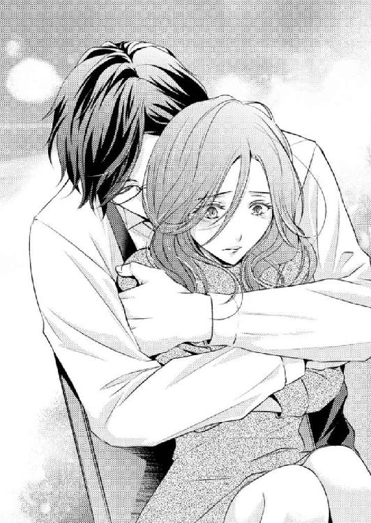
「返済なんて必要ありませんよ。そんな余裕があるのなら、桃香さんがご自分のために使ってください」
「でも、三百万ですよ、三百万っ。『そうですかー、じゃぁ喜んで甘えますー』って言える金額じゃないです。罪の意識を感じないのは、会社の上司がホワイトデーのお返しに奢ってくれた一流ホテルのアフタヌーンティーバイキング、三千円なりが限界ですよ！」
桃香の主張に、雄大はクッとおかしそうに喉を鳴らし、再び椅子に腰を下ろす。
「では、そのバイキングを、僕が千回ご馳走したと思ってください。それなら大丈夫ですか？」
「片桐さん！」
桃香はついムキになってしまった。
確かに、雄大にとってはたいしたことのない額なのかもしれない。格好をつけているわけではなく、本当にバイキングを千回奢った程度の感覚でできることなのかもしれない。
しかし、桃香にとってはそれで済ませられる金額ではない。
そうじゃなくたって無償で部屋を貸してもらい、引越しまでさせてもらって、なにからなにまで世話になりっ放しだというのに。
桃香がなにを言っても、もしかしたら雄大には通じないのかもしれない。彼は立場的に、お金に困る生活など知らない人だ。いつもの調子で桃香を黙らせ「いいから、いいから」と、笑っておしまい。
困惑し、落ち着きを失った桃香の手から味噌汁椀を取ってテーブルへ置くと、雄大は膝に手を揃えて彼女を見つめた。
「分かりました」
「......え？」
「桃香さんが、義理堅くそこまでおっしゃるのでしたら、問題解決のために使った三百万だけは返していただくことにします」
「あ......、本当に......」
いささか拍子抜けだ。彼はきっと、取り合ってもくれないだろうと思っていた。
「ただ、少しずつ返されるのは面倒なので、まとまったときに返してください」
「まとめて、ですか」
年収よりも多い三百万を、まとめて返済する。桃香は急いで返済プランを考える。
（とりあえず、今ある貯金と......、ここにいれば部屋代はかからないから、そのぶんを......。あっ、でも、問題は解決したんだし、出て行ったほうがいいのかな......）
一年で返せるだろうか。二年かかるかもしれない。いや、もしここを出なくてはならなくなって部屋代が浮いた分を回せなくなるとしたら、三年かかっても......。
いろいろと考えているうちに、人が普通お金を借りる場合に考えるべき大きな問題が浮かぶ。
「あ、あの......、利息、とかは」
「利息は必要ありません。その代わり、条件があります」
「条件、ですか？」
「はい。返済が済むまで、ここからは出ていかないこと」
「え......？」
桃香は目をぱちくりとさせる。問題は解決したのだから出て行ったほうが良いだろうかと考えていた矢先だったので、彼の言葉が一瞬信じられなかった。
「桃香さんが返すと言われた金額がまとまるまで。ここから出ようなんて考えないでください。もちろん、ここに住み続ける条件は変わりません」
「目玉焼き、ですか？」
「はい、そうです」
彼はそんなにも桃香の目玉焼きを気に入ってくれているのだろうか。ここに置いておく義理もなくなった女に、新たな条件を与えてまで引き留めておこうとするほど。
本音を言えば、部屋代その他光熱費も助かるのだから、桃香にとってはこのうえなく都合はいい。だが、雄大は本当にいいのだろうか。彼にとっては、気ままなひとり暮らしに戻れるチャンスなのに。
「年甲斐もないって、笑っていただいて結構なのですが......」
雄大がとても照れくさそうに言いだすので、俯きかかっていた桃香は思わず顔を上げた。
「桃香さんがいてくれると、毎日が楽しいです。朝食や夕食を一緒に食べて、美味しいって言ってくれる人がいて、仕事以外の他愛のない話ができて......。平日は、桃香さんが会社から戻るのが待ち遠しいくらいです。──すみません、こんな......。お恥ずかしい......」
そう言って雄大ははにかむように笑った。
桃香は、そんな彼の笑顔に一番弱い。
照れる彼を見ている立場なのに、桃香のほうが赤くなってしまった。
────桃香さんが会社から戻るのが待ち遠しいくらい......。
（どうしようか......？）
桃香は自問してはみたものの、そもそもなにが〝どうしよう〟なのかが分からない。
桃香はここ数日、誰かが自分を待っていてくれることに心を躍らせていた。
雄大も同じだったのだ。彼は、誰かが自分の元へ帰ってきてくれることに、喜びを見い出していた。
「元管理人の件は解決したし、もしかしたら桃香さんはここを出て返済のためにお金を貯めると言い出すかもしれない。だから僕は、利息を盾に貴女を拘束しようと思います」
「......片桐さん......」
「ずるいですね。すみません」
口では謝っていても、彼は笑顔のままだ。自分の提案に満足し切っている。
その様子がまるで、「どんなもんだい」と胸を張る子どものように見えてしまい、桃香はクスリと笑ってしまう。
椅子をずらし、彼に身体を向けて、同じように両手を膝に載せ深々と頭を下げる。
「よろしくお願いします。......改めて、ですけど、お世話になります」
「いえいえ、こちらこそ」
桃香に合わせて、雄大も深々と頭を下げる。ふたり同時に身体を起こし顔を見合わせると、何秒か後、同時に笑いだした。
「片桐さんって、ホント、面白い人ですね」
「そうですか？ 面白いなんて言われたの初めてですよ」
「面白いですよ。片桐さんみたいな男の人に出会ったの初めてです」
「僕も、桃香さんのような女性は、初めてですよ」
雄大のような性格の男性は珍しいと思うが、桃香は自分を極めて普通レベルの人間だと思っている。特に珍しいとは思わない。
褒め言葉なのかなんなのか分からないまま、桃香はふざけて卑屈になってみた。
「なんですか、それーっ。あ、そうかっ、片桐さんの周りって、きっと美人さんばっかりなんでしょう？ だからその辺にいる十人並みの女が珍しいんだ？」
そんなことありませんよ、とすぐに否定してくれることを期待したが、雄大はその言葉でなにかを思い出したように立ち上がった。
「そうだそうだ。忘れていました」
向かい側の椅子にかけてあったスーツの上着からスマホを取り出し、椅子を桃香の横へ移動させる。隣へ腰を下ろし、何事かと目をぱちくりとさせる彼女に顔を寄せ、目の前にスマホをかざした。
「ほら、桃香さん、笑って笑って。いい顔して」
「えっ......、な、なんですかっ」
いきなりカメラモードを向けられて焦る。カメラもそうだが、雄大の顔も近い。
「はい。〝ミルクティー〟ですよ、〝ミルクティー〟。〝ティー〟の発音をしたときの女性の口元は、とてもかわいらしいことが多いですから。いいですか、いきますよ......、はい、ミルクティー」
「みっ、ミルクティーぃっ」
急なことに少々うろたえてしまったため、わざとらしい笑顔になってしまった気がしないでもない。
写真を一枚撮り、確認をした雄大は、満足げに頷いてスマホを操作し始めた。
「よし、送信完了です」
「送信って......、どこに送ったんですか」
「桃香さんのスマホに」
「私の？」
「はい、だって、約束したでしょう。美人をはべらせて鼻の下伸ばしている写メを送る、と」
「だって、あれは、パーティーの......」
彼をからかうために言いはしたが、それはコンパニオンの話だ。立ち上がって椅子を戻す雄大を目で追っていると、彼はにこりと笑ってスマホを向けた。
「僕の美人基準は高いんですよ。残念ながらコンパニオンの中に僕の基準レベルの女性はいませんでした。ですから、心も顔も美人な桃香さんと一緒に撮らせていただきました」
頰が熱くなる。考えてみれば凄く気障なセリフだ。イイ男を気取った男が同じようなことを言ったなら、後ろから蹴り飛ばしてやりたくなる。
なのに、雄大が口にすると、とても自然で気取りを感じない。
（本当に、不思議な人......）
向けられた雄大のスマホには、今ふたりで撮った画像が貼られていた。
くっつきすぎているかと感じていた顔同士はほどよい距離を保ち、微笑む雄大の横で桃香がはにかみを見せている。大袈裟な作り笑いになってはいないかと気になったが、それほどでもなかった。
「女の子と並んで写っている自分は、照れますね。ひとりで眺めてニヤニヤしてしまいそうです」
「片桐さん、それっ」
困っていいのか噴き出していいのか分からない。迷いながらそれでもクスクス笑っていると、雄大が丼鉢を手で示した。
「牛丼、冷めていませんか？ よそい直しましょうか？」
「冷めてないです、大丈夫ですよ。いただきます。急にお腹すいてきちゃった」
「温泉玉子作りますか？ すぐできますよ」
「大丈夫です。このままいただきます。美味しそうーっ」
両手を合わせ、「いただきます」と頭を下げる。ぱくぱくと軽快に食べ始めた桃香を見つめ、雄大は嬉しそうな声を出した。
「早く帰ってきた甲斐がありました。目の前にあった問題は解決できたし、桃香さんに夕食の用意もしてあげられましたし」
彼が話をしているあいだも、桃香の箸は止まらない。外食やコンビニで買って食べる牛丼よりはるかに美味しいと感じてしまうのは、雄大の腕のせいか、はたまた単純に使用している肉のせいか......。
（きっと両方だわ......）
この先もしばらくこんな食事を続けられる幸せをご飯と共に嚙みしめ、桃香は雄大を見上げた。
「そういえば片桐さん、早かったんですね。二次会とかなかったんですか？」
「パーティーの途中で抜けてきたのですよ。挨拶も済んだし、心付けも渡したので」
「お酒飲んで美味しい物食べて楽しんできてくださいって言ったのに」
「ええ、そうなのですが......。昨日の件を聞いていて、どうしても気になってしまって」
「昨日のこと？」
「あの管理人の件です。夜道で桃香さんに乱暴を働こうとしていたと聞きまして。今夜も待ち伏せているのではないかと気になりました。思いすごしであってほしいと思いながら駆けつけたのですが、結果的に解決することができたのでよかったです」
桃香の箸が止まった。普通にパーティーから帰ってきたにしては早すぎる、雄大の姿を見たときにそう思ってはいた。
彼はあらかじめなにか起こるのではないかと危険を予測し、早めにパーティーから引き上げてきたのだ。
だが、昨日の出来事をどうやって知ったのだろう。雄大が現れたのは、菅原がいなくなったあとだった。
あのときいたのは......。
「......もしかして、洋菓子店の、あの店員さんに聞いた、とか......」
「はい。昨日、桃香さんにおつりとスタンプカードを渡したのは、僕の弟なのです」
「......は？」
「一応、店長なのですよ。パティシエも兼ねていますが。〝店、命〟の弟が、あんな時間に店舗外へ出ていたので驚いてしまいました。桃香さんになにがあったのかを聞いて、もっと驚きましたが」
「弟、さん......」
驚いてしまったのは桃香のほうだ。まさか兄弟だったとは。
桃香の脳裏に、雄大の弟だというプティ・ボヌールの青年の笑顔がよみがえった。
厄介事を目にしても、「大丈夫でしたか」などの言葉をかけるわけでもなく、ただ気遣うように笑顔を向けた青年。
思えば、どこか雄大に似ている。
「情報提供料として、今度出す新作の試食を頼まれてしまいました。桃香さんも道連れですからね」
「み、道連れっ......」
「はい、弟はしつこいですよ。どこがどんなふうに美味しいのか、舌触り歯触り、各素材とのバランス。事細かに聞かれますからね。覚悟しておいてください」
「ひと口で食べちゃわないように気をつけます」
ハハハと笑い、桃香は再び箸を動かす。
驚く話ばかりだ。偶然とはいえ、まさか雄大の弟と顔を合わせていたとは。
ということは年齢も近いのだろうか。見た感じ、弟という青年は三十歳前に見えた。
桃香は糠漬けのキュウリをパリパリと嚙みしめながら、エプロンを外している雄大を盗み見る。考えてみれば、雄大もとても四十歳には見えない。最初は三十代初めかと思ったくらいだった。
（だとしたら、あの弟さんも、見た目よりは年齢がいってるってことか）
兄が有名なポータルサイトの創業者で、弟が人気洋菓子店の店主である。
兄弟揃って、なかなかの野心家だということだろう。
「ちょっと着替えてきますね」
そう言って上着とエプロンを腕にかけた雄大に、桃香は「はーい」と返事をする。
彼はそのまま着替えをしに寝室へ行くだろうと思っていたのだが、いきなり桃香の真横でテーブルに手をつき、身を屈めて顔を覗きこんできた。
あまりに素早い動きだったので、桃香は驚いてドキリとする。
「桃香さん。僕、考えたのですが......」
「なっ、なな、なんですかっ。いきなり」
「僕、まだ桃香さんに誕生日のお祝いしてもらっていないですよね」
「え......、あ、そうですね。じゃぁ、明日ケーキでも買って......」
台無しになってしまった昨日のケーキの代わりという話だろうか。次の機会にということにはなっていたが、今その話題が出るとは思わなかった。
「ケーキはいいですよ。そのかわり、食事につきあってください」
「食事？ いえ、あの、なるべく残業はしないようにして、夕食までには帰ってきますけど......」
「そういう意味ではなくて。ぜひ桃香さんと行きたい場所があるのです。お酒もお料理も美味しいお店ですよ。おつきあいいただけますか？」
「外食、ですか？」
普通なら、外食くらいで怯む必要はない。かえって楽しみなくらいだ。
しかし、雄大のようなセレブが行きたい食事の店というのは、いったいどんな店なのだろうか......。
想像を膨らませすぎて腰が引けそうになる。桃香が委縮してしまう前に雄大は軽やかに笑った。
「そんな堅苦しい店ではありませんよ。〝蔵戸庵〟ですから」
「蔵戸庵？」
桃香は目をぱちくりとさせる。すると、雄大が首を傾げた。
「一週間前、桃香さんが酔い潰れた店です。店名、覚えていませんか？」
ハッキリ言って、覚えていない。
桃香は照れ笑いをする。場所と雰囲気が気になって飛びこんだ店だったので、特に店名を覚えてはいなかった。
「女将が、誕生日プレゼント代わりに飲み放題させてやるって言うんです。ですから、一緒に行きましょう」
「女将さん......？ あの綺麗な......」
「気のいい優しい人ですよ。明日、一緒に行きましょう」
「はい」
桃香が返事をすると、雄大は「良かった。明日が楽しみです」と言って寝室へ向かう。
食事のために出かける、そんな予定自体を立てるのは久し振り。会社の人間などに誘われても面倒くさいとしか感じていなかったが、今回はとても楽しみに思える。
（あの店かぁ......。片桐さん、常連さんなのかな）
そうでなくては、わざわざ客の誕生日を覚えていて、飲み放題をさせてやるなどと言ったりはしないだろう。
または、常連以上の関係とも考えられる......。
（......綺麗な人だったよね......女将さん......）
お酒を注いでくれた、柔らかな微笑みが脳裏によみがえる。
なぜか胸が詰まった桃香は、すっかり箸が止まってしまった。
ごろり、と、寝返りをうつ。
これで何度目だろう。回数などは覚えていないが、何度も繰り返してなかなか寝つかれない。
暗い部屋の中。ベッドの宮棚に置かれた目覚まし時計の秒針音が、今夜は耳障りに感じる。
いろいろとあったので、神経が昂っているのかもしれない。桃香はむくりと起き上がり、溜息をついた。
（眠れない......）
チラリ時計を見ると、もうすぐ午前一時。ベッドに入ったのは日付が変わる前だったというのに。
薄闇の中、何気なくさまよわせた視線が窓を視界に入れて止まる。しばしそこを眺め、桃香は視線を戻してベッドから下りた。
昨日、窓というものに対して感じた不安を、今日はまったく感じない。誰かがいるのではないかという心配がなくなったせいだろうか。
静かにドアを開け部屋を出ると、リビングの磨りガラスから灯りが漏れていることに気づいた。
物音は聞こえない。足音を忍ばせて廊下を進み、そっとリビングのドアを開ける。室内に雄大の姿はないようだ。
寝室のほうに視線を移すと、ドアは半開き。桃香はそこへ近づき、中を覗いた。
ベッドに彼の姿はないが、その奥に見える書斎のドアが開いている。どうやら今、雄大はそこにいるらしい。
なにをしているのだろう。もしかしたら仕事中かもしれない。いつもは気を遣って近づくことはないのだが、桃香は好奇心の赴くままに書斎へ足を向けてしまった。
足音を忍ばせ、こっそりと中を覗く。書斎は桃香が使っている部屋と同じくらいの広さだった。
壁側には大きな書棚が見える。そして、デスクに向かう雄大がパソコンの画面を眺め、腕を組み考え込んでいる横顔が目に入った。
わずかに目を伏せ気味にし、真剣な表情だ。瞬時に仕事中なのだと悟り、邪魔をしてはいけないという思いで身動きを止めた。
このまま静かに後退して立ち去ろう。そう決めた瞬間、気配に気づいたらしい雄大がこちらを向き、桃香はビクッと震える。
「眠れないのですか？」
ついさっきまでの厳しい表情はどこへやら。彼は桃香にふわりと微笑みかけ腕組みを解いた。
「あ、邪魔しちゃって、すみません......。灯りが点いていたので、まだ起きてるのかなって......」
「構いませんよ。廊下に出てリビングが明るければ気になってしまいますよね。かえって申し訳ないことをしました。余計に眠れなくなってしまいましたか？」
「いえ、そんな......」
雄大の邪魔をしてしまったような気がして桃香は恐縮したが、彼は特に責める言葉を口にはしない。
それどころか、手で彼女の背後を示して言った。
「もしよろしければ、そこでお休みになっても構いませんよ」
「え......、そこ、って......」
示されたところにあるのは雄大のベッドだ。一週間前、桃香が目覚めた場所である。
「悩んでいる自覚がなくとも、不安が心に残って気持ちが昂るのはよくあることです。なにかひとつでも安心できるものがあれば、気持ちも少しは落ち着くことでしょう。そばに誰かがいることでその安心が得られることもあります。僕が、桃香さんにとっての、誰か、にはなれないでしょうか」
「片桐さん......、でも......」
「眠れないのでしたら、試してみる価値はあります。どうぞご心配なく。僕は眠くなったら仮眠用のカウチで寝ますから」
元々の主を追い出してベッドを占領してしまっては申し訳ない。そう思いつつも、桃香は彼の言葉に気持ちが揺らいだ。
「大丈夫ですよ。僕はここにいます。なにも心配はありませんよ。貴女が不安を感じる必要はどこにもない」
桃香は遠慮気味に視線を落とし、「すみません、じゃあ......」と小さく呟いて雄大のベッドへ潜りこんだ。
身体を横たえると、開きっ放しのドアから雄大の姿が見える。桃香が就寝体勢に入ったことを見届け、彼は眼鏡の横に指を添えクイッと引き上げてから、彼女に笑顔を向けた。
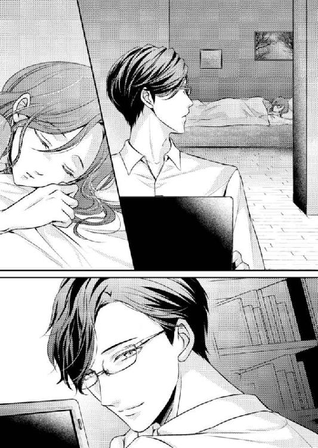
「おやすみなさい、桃香さん」
「......おやすみなさい、片桐さん......」
桃香の言葉を聞いて、雄大はさっきと同じ体勢に戻る。パソコンに向かい腕を組むが、最初のときのような厳しい表情を見せることはなかった。
彼の姿を見つめているうちに、桃香は知らず睡魔に襲われる。瞼が重くなり、視界がぼんやりとし始める。それでも雄大から目をそらすことはできなかった。
穏やかな気持ちが、彼女を包む。
誰かがそばにいてくれる。警戒も、疑いも、憤りも、なにも持つ必要のない人。
心に、安らぎをくれる人が......。
「......おやすみなさい......雄大さん......」
──それが、本当に彼女の口から出たのか、それとも出したつもりで頭に響いただけなのか、もはや桃香自身にも判断ができない。
だが彼女は、そのあとに「ありがとう」と付け加え、安息の中で瞼を閉じた......。
桃香が勤めるのは、本店舗を拠点に、周辺地域や近隣都市などに五十数店舗を展開する、ドラッグストアチェーン店、〝エリアドラッグストア〟。その本社店舗の二階、販売促進課である。
一般医薬品を中心に日用品や日配商品などを扱うドラッグストア事業、そして調剤薬局事業などを手掛けている。
大学を卒業後入社して三年。仕事にも慣れ、後輩も多数いる。本社事務スタッフや調剤スタッフには男性が多いが、店舗スタッフには女性の姿が目立つ。そのせいか、環境的には働きやすい。
店舗は二十時閉店だが、事務スタッフは十八時が定時。今、終業まであと三十分を切っている。
一階の店舗に下りていた桃香は、キャンペーン企画になっているベビーフードの売り上げ動向チェックを行っていた。
これが終われば、ひとまず本日のメイン業務は終わり。やり残した仕事もない。定時で上がれることは確定だろう。
（残業なんかしてられませんよ）
定時が近づくにつれ、気持ちがそわそわしてくる。誰かと出かけるという予定を意識し、こんなに気分が浮わついてしまうのは、いつ以来だろう。
順を追って棚の商品を目で追っていくと、ふとベビーフードの横に置かれた商品が目に入る。
隣は赤ちゃん用のスキンケア商品が並ぶ棚だ。その中でピンクのボトルが目に入り、桃香はつい手に取ってしまった。
「......片桐さんが、使ってるものだ」
日本のベビー用品ブランドから出ているそれは、初めて雄大の部屋で目を覚ました日、洗顔後に借りたベビーローションである。
桃の葉エキス入りを謳い、かすかだが、ピーチフローラルの微香を感じることができる。
（そういえば、残り半分以下になってなかったっけ。買っていってあげようかな）
雄大のことだ、買い置きがあるのかもしれない。それでも社販価格で購入することができるので、桃香が買ったほうが確実に安いはず。
そんなことを考えていると、後ろから声をかけられた。
「お疲れさまでーす。今日はチェックに入るの早いんですねー」
明るく跳ね上がる声の主は菜摘だ。彼女はいつもテンションが高めだけれど、気安く肩をポンポンと連打してくるところをみると通常よりさらに気分は上向きらしい。
定時が近いせいなのか。週末であるせいなのか。それとも、このあとに合コンでも控えているのか......。
（きっと、全部だろうなぁ）
自分の楽しみを優先し、日々の仕事は後回しにする傾向が菜摘にはある。そんな彼女の仕事の仕方が、いい加減と思えることも少なくはないというのに。
今日は、それほどイラッとはしない。
「定時に上がれそうですね。あたしもですー。終わったらご飯に行くんですけど、新しくできたお店なんですよ。むちゃくちゃ楽しみーっ。美味しかったら、桃香さんにも報告しますね」
彼女の気持ちが桃香にもわかる。今日は自分も雄大と食事に行くことを楽しみにしていたので、余計な仕事を作らないよう、増やさないよう、調整しながら一日の仕事をこなしていたように思うのだ。
菜摘と、やっていることは同じだ。
表立った浮かれ具合は違うが、同じように楽しみな目的がある。それだから彼女を疎ましく感じないのかもしれない。ある種の仲間意識というやつだ。
少し前までは、毎晩コンビニでアルコール類を買い込んでひとり酒、というのが桃香の楽しみだった。
そのときより、今夜の予定のほうが心がワクワクしている。
「あれ？ どうしたんですか、ベビーローションなんか見て。なんか仕様が変わりましたっけ？ それ」
チェック物件以外のものを手にしているので、菜摘は疑問に思ったようだ。桃香の手元を覗きこみ、ローションのボトルをつついた。
「うん、ちょっと一本買っていこうかなって」
「なにに使うんですか？ スキンケア？ ベビーローションなんて使ってましたっけ？」
「違うわよ。でもこれ、使い心地は悪くないのよ」
「じゃあなにに......、あっ、エッチするときに使うんですか？」
「......使えるの......？」
「お勧めはしませんねー。これはあんまりヌルつかないし、すぐ乾いちゃうし」
冗談だと思いきや、意外に真面目な答えが返ってくる。桃香は思わず噴き出してしまった。
「やだ、使ったことあるんだ？」
「えっ？ 桃香さん、ないんですかっ？」
「あるわけないでしょっ。......スキンケアで使ってる人がいてね、その人にあげようかと思って」
「へー、そうなんですか。誰ですか？」
「......ちょっとした知り合いよ。肌に合っててサッパリするんですって」
「男の人ですか？」
「な、なんで？ 男の人なわけないじゃないっ」
思った以上に菜摘が食いついてくるので、桃香は苦笑いでかわす。
女ふたりで盛り上がっていると、背後から注意の声がかかった。
「こら、店舗内だぞ。お客様が通ったらみっともないだろう」
とはいえ、その声は穏やかで軽く笑いを含んでいる。ふたりが振り向くと、そこには眼鏡をかけたスーツ姿の男性が立っていた。
「あっ、守屋ブロック長、お疲れ様です」
先に菜摘が明るく挨拶し、続いて桃香が「お疲れ様です」と作り笑顔で事務的に声をかける。
守屋和樹は二十八歳。担当エリア内の店舗を回り、売り上げや在庫の管理、店舗改善やスタッフの指導などを行うブロック長だ。
桃香が入社した当初、新入社員の指導教育係でもあった。
「いつもは早川さんがはしゃいでいて、和泉さんが諭すイメージなんだけど？ 一緒になって話し込んでいるのは珍しいね。だけど、どこにお客様の目があるか知れないんだから、気をつけて」
少々わざとらしく左右を見回し、守屋は人差し指を口にあてる。幸運なことに、通路に客の姿はなかった。
守屋のおどけた姿を見て、叱られているのではないと悟った菜摘は、声を潜めて楽しげに言い訳をする。
「すみません。でも、桃香さんのベビーローションが怪しかったんですよ」
「ベビーローション？」
「人にあげるんだって言うんですよ。誰にあげるのか教えてくれないんです。怪しいと思いません？」
「ちょ、ちょっと、菜摘ちゃん」
桃香は思わず菜摘の腕を摑む。いくら守屋が上司の中では気さくなほうの人物であるとはいえ、あまりいろんなことをばらしてほしくはない。
「もう、どうしてそんなに突っ込んで聞くのよ。私のほうが知りたいわ」
「だって桃香さん、あんまり自分のこととか友だちとかの話とか、しないじゃないですか。ベビーローションなんて特別でもない日用品を買っていってあげるなんて、日常的に親しくなきゃしないでしょう？」
「そう？」
「だからチラリとでも桃香さんからそんな話が出ると、『もしかして彼氏とか？』なんて勘ぐりたくなりますよね」
屈託なく笑う菜摘に、一切悪気はない。ベビーローションの贈り主に関する話題まではよかったが、彼氏にではないか、などという推測までは口にしてほしくはなかった。
──特に、今は。
「早川さん、こんな所で油売っていていいの？ 残業になっちゃうよ」
「あ、そうでした。......桃香さん、あたし、先に戻りますね」
守屋に言われ、菜摘は時間を思い出したようだ。桃香にひとこと残し、早足で自分の持ち場に戻っていった。
彼女の姿が消えると、守屋はチラリと桃香を見る。
「『彼氏か？』なんて、気になることを平気で言ってくれるね」
眼鏡の奥からの強い視線を感じ、桃香は目を合わせないようにして眉をひそめた。
「......気にしてもらうほどのことでもありませんよ」
「でも、早川さんじゃなくても気になるね。君は、あまりプライベートを人に話す性格じゃないし」
「......自慢できるようなプライベートでもありませんから......」
守屋から顔をそらし、さりげなく通路を進んで距離を取ろうとする。しかし守屋はそれに合わせて足を進め、離れようとしない。
「そういえば、総務から聞いたんだけど、住所が変わったんだって？ 引っ越し先が有名な高級マンションだったから、総務主任が驚いて僕に聞いてきたんだ。君が、結婚の予定でもあって引っ越したのかって」
桃香はピタリと足を止めた。合わせて守屋も立ち止まり、溜息をついて眼鏡を押さえる。
「親戚と一緒に住んでるとか言ったんだって？ なんでそんな噓つくんだ。桃の親戚は、みんな遠方にいるだろう。本当に結婚のために引っ越したとかそういうのなら、ひとこと報告してくれたっていいじゃないか。なにかあるなら、桃の力に......」
「私のことなんて、気にしているときじゃないでしょう。守屋ブロック長」
声を潜めて親しげに話しかけてくる守屋に対し、桃香はあくまで事務的な声音で応答をする。彼を見上げて、眼鏡の奥で困惑をする目を確認してから、にこりと微笑んだ。
「......ふたり目......、おめでたなんでしょう？ 奥さん。......よかったね」
次の瞬間口を開きかけた守屋を無視して、桃香は早足に歩き出す。
さっきまであんなにも高まっていた気持ちが、一気に萎んでしまった気分だ。
（......早く、帰ろう......）
手に持ったままのベビーローションを握りしめ、桃香は沈んでいく気持ちに堪えた。
人は楽しい気分より、イヤな出来事によって生まれた感情を引きずりがちなのは、なぜだろう。
百人の褒め言葉より、たったひとりの悪口がいつまでも気になってしまうのもそうだ。それが心の奥底に隠しておいた感情に少しでも触れたなら、なおさらだ。
守屋と顔を合わせ、過去の傷に塩を塗りこむような態度を見せられてから、桃香の気分は落ちこんだままだ。なにか言いたそうにしながら意味ありげな視線を送ってくる態度が、頭から離れない。
「......男なんて......、ろくなもんじゃない......」
駅の改札を出て、桃香は人の流れにのって足を進める。ぽつりと呟き下ばかりを向いているうちに、だんだん泣きたくなってきた。
恋愛なんてもうしない。
男なんて、まっぴらだ。
そう心に決めてから、二年にもなるというのに......。
沈みこむ気持ち。自分は今、情けない顔をしているに違いない。
マンションに帰るまでには笑顔を作れるようにしておかなくては。こんな状態のまま雄大の元へ帰ってはいけない気がする。そう思っているのに、桃香は顔の強張りを解けない。
「桃香さん！」
駅を出ると自分を呼ぶ声が聞こえ、桃香の足は止まる。
声がした方向へ自然と顔が向く。目に入った光景に、彼女は驚いてキョトンとした。
洋菓子店プティ・ボヌールの入口の前で、笑顔で手を振っている人物がいる。
雄大だ。
彼はニコニコしながら桃香の傍へと寄ってきた。
「おかえりなさい。お仕事お疲れ様です」
「片桐さん......、こんな所で、どうしたんですか」
「お迎えに来ました。それと、桃香さんに謝ろうと思って」
「謝る？」
「はい。考えてみれば、僕が会社までお迎えに行けばよかったんです。そうしたら、一度ここまで帰ってくるなんて手間を取らせてしまうこともなく、そのまま目的地へ向かえたのに。そのことに気づいたのが、ちょうど桃香さんが電車に乗るぐらいの時間だったのです。僕から誘っておきながら、気がきかなくて......」
「そんなっ、いいですよ」
桃香は慌てて口を挟む。確かに雄大が言うとおりにすれば、そのまま食事には行けただろう。だが、迎えにきてもらえば雄大と一緒にいる姿を誰かに見られてしまう可能性がある。
（片桐さんって、確か大きな外車に乗ってたよね。あんな車で会社に迎えになんかこられたら、みんな大騒ぎになっちゃうじゃない）
今夜はお酒を飲むことが前提なので、彼の車は使わないのかもしれない。
だとしたら運転手が付くのか、または会社で契約をしているというハイヤーが用意されている可能性もある。いずれにせよ、会社の人間に見つかったら、いつもはされない詮索をこれでもかというほどされてしまいそうだ。
遠慮をする桃香に、雄大はホッと安堵し息を吐いた。
「よかった......。女性を誘うなんて珍しいことをしたので、まったく気がきかなくて......。桃香さんに呆れられてしまったのではないかと心配しました」
「そんなこと......。だって、ここまで迎えに来てくれたじゃないですか。それだけでも、凄く嬉しいですよ」
「ありがとうございます」
ふわりと、自然に形作られる雄大の嬉しそうな笑顔。彼は本当によい意味で天然で、自分の感情を取り繕って偽るようなことがまったくない。
「本当に、桃香さんは優しくて素敵な女性ですね。貴女のような女性もいるのだと、もっと早くに知りたかった」
思わず桃香が見惚れてしまう表情で、少々大袈裟すぎるようなことを言う。だが彼が口にすると「また上手いことを言って」と軽くからかえない。
彼の口調は、本心から言ってくれているのだと信じてしまえる誠実さを感じずにはいられないのだ。
「片桐さんも素敵ですよ。コートを着ているところ、初めて見ました。昨日のスーツ姿とはまた違って、かっこいいです」
彼の言葉に照れてしまった桃香は話を変えようと思って雄大を褒めた。
とってつけたようなお世辞から出た言葉ではなかった。
今夜の雄大は、キャメルのトレンチコートを羽織っている。ラフに着こなしてはいるが、元々見目が良いせいかとてもスマートで洗練された印象だ。
褒めたことで自分と同じように照れるかと思いきや、雄大は、ぱあっと嬉しそうな笑顔を見せた。
「そうですか？ よかった。もう少し気のきいた服装ができないのかと、ガッカリされるかなと思っていました。いや、本当に。女性をお誘いするというのは、いろいろと心配事が増えるものですね」
「片桐さんってば。大袈裟ですよ」
桃香は軽く声をあげて笑う。雄大の話を聞いていると、まるで彼は女性と出かけた経験がないかのように聞こえる。
年齢的なものや彼の立場、そしてその容姿を考えても、そんなことはないだろう。おそらく、誘った自分を桃香より下の立場に置き、彼女を女性として立ててくれているだけなのだ。
「さあ、行きましょうか。車を待たせてありますので」
「あ、はい」
彼につられて、桃香もすっかり笑顔になっていることに気づく。さっきまでの鬱々とした気分が噓のようだ。
（本当に、不思議な人）
雄大と一緒にいると、自分の中に淀み溜まっているものが少しずつ浄化されていくような気がする。どんなに沈んだ気持ちも、どんなに辛い思いも、彼のそばにいるだけで安らかな気分にすり替わっていく。
この空気と、この安らぎを失いたくない。桃香は、そう思い始めていた。
雄大は桃香の背中に手を添え、エスコートしてくれる。彼のことを考えていたせいか、ドキリと鼓動が跳ね上がった。
同時に身体が震えてしまったような気がして、桃香はそれを誤魔化すために雄大を見上げる。
「か、片桐さん、車って......、タクシーかなにかで行くんですか？」
「弟に送ってもらいます」
「弟さん？」
「はい」
笑顔で返事をして、雄大はプティ・ボヌールの駐車場を見る。それが合図であったかのように、そこに停まっていた一台の白い車のエンジンがかかった。そして、運転席の窓が下り、笑顔の青年が顔を出したのだ。
「兄さん、早くしてくれよ。俺、あんまり店を留守にできないんだから」
明るい声で文句を口にするのは、以前桃香を追いかけてきておつりとスタンプカードをくれた、雄大の弟だという青年だ。
桃香が目を見開いていると、青年は彼女に向かって「こんばんはー、桃香さん」と手を振った。
「誕生日プレゼントに、ひとつ頼みをきいてくれると言うので、今日の送迎を頼みました」
「送迎......って」
「帰りも弟が迎えにきてくれます。ですから、たっぷり飲んで酔い潰れても大丈夫ですよ。弟と一緒に部屋まで運びますから」
「も、もう酔い潰れませんっ。......たぶん......」
いまいち頼りない返事になってしまったが、飲みに行くたびに潰れてはいられない。
雄大の話では今日は「飲み放題」と言われているらしいが、飲む量を意識して制御しなければと、桃香は密かに決心を固める。
ふと、一週間前に酔い潰れたときは、どうやって部屋まで運んでくれたのだろうかという疑問が浮かんだ。
桃香は意識を失って歩くことなどはできなかったのだから、彼女を運ぶ手段を考えなければいけなかったはずだ。
雄大の部屋はマンションの十七階だ。まさか雄大がひとりで引きずっていったとは思えない。コンシェルジュにでも手伝ってもらったのだろうか。
そんなことを考えていると、雄大が後部座席のドアを開いてくれた。
車自体は雄大のものではない。車種などにはまったく詳しくはないが、同じ大きな車でも雄大の車は黒系、この車は白系だ。
先に桃香が乗りこみ、奥へつめる。そのあとから雄大が乗りこむのと同時に、運転席の青年が振り返った。
そして、桃香に向かって右手を差し出す。
「先日お会いしましたけど、改めまして、片桐康介です」
その笑顔はとても柔らかく、雄大に似ていた。
第５章 不適切な嫉妬
兄弟なのだから似ているのは当たり前。
違うといえば、康介のほうが雄大より若く、眼鏡はかけていないというところか。
「あ、和泉桃香です。先日は、ありがとうございました」
手を差し出されたということは、握手を求められているということなのだろう。桃香もおそるおそる手を出し握手に応じる。
大きな手に力強くキュッと握られ、戸惑うあまり握り返すことができない。
警戒していると思われてしまうのではないか。そんな不安もあったが、康介はにこにことしたまま握手の手を上下に振った。
「いつも兄がお世話になっています。すいませんね、口うるさくないですか。ウチの兄さん」
「そんなっ、片桐さんにお世話になっているのは私のほうです。お世話になりすぎているくらいです。口うるさいどころか、もう少しうるさくなってくれてもいいのにって思うくらいで......。厳しいこと言われたりとか怒られたりとか、全然なくて......」
「そうじゃなくて、いろいろうんちくがうるさくない？ ごめんね、この人、仕事柄知識が豊富すぎて、うんちく語るとしつこいしうるさいんだよね。〝お家でご飯〟にこだわってて、〝一日三食栄養バランス考えて〟はポリシーだし。食事の取りかたとかうるさいだろう？ バンバンおかわりとかさせられない？ 太っちゃうよねー、女の子はそういうこと気になるのに。この人といたら絶対ダイエットできないよ」
軽快に動く口をポカンと眺めていると、握手をしている康介の手がぺしっと叩かれた。
なにかと思えば、雄大がその手をパシパシと連打している。
「離しなさい、康介。女性の手をいつまでも握っているものではないよ」
「握手だよ」
「握りすぎ。桃香さんが驚いているだろう」
「はいはい。まったくもう、兄さんは独占欲強いんだから」
意味ありげにニヤリと笑って、康介は手を離す。桃香に笑いかけてから前方に向き直り、ハンドルを握った。
「すみません、桃香さん。軽い弟で」
「いいえ......、そんな......」
車が走り出すと、雄大が桃香側のシートベルトを引きセットする。シートベルトの存在を忘れていたことに気づき「すいません」と口にすると、雄大が「いいえ」と微笑んだ。
そんな光景をルームミラーで見ていたらしく、康介の冷やかしが飛ぶ。
「なにさ、兄さん。桃香さんには優しいんだ。俺がシートベルト忘れても、『しなくてもいいけど、なにかあっても助けないよ』とか言うくせに」
「桃香さんは女性だからね」
「それが下心からきてる行動なら男として尊敬するんだけどな。兄さんの場合は〝か弱き者に手を差し伸べよう精神〟からきてるから、いまいち微妙。......まあ、無欲求男だから、しょうがないか」
「口が動きすぎだ。康介」
「申し訳ありません。最高顧問」
会社の役員の口真似でもしたのだろう。康介のかしこまった口調に、雄大は「似ている似ている」と軽く笑う。
兄弟の会話を聞いていた桃香は、康介の口にした言葉が気になった。
（無欲求男って、なんだろう......）
確かに雄大は〝欲〟というものを感じさせない人間だ。
彼の雰囲気はあまりにも自然体で、よこしまなものがない。
知り合ってまだ一週間なので、深いところまでは知らなくとも、今の桃香が雄大のイメージとして持っているのは「聖人君子のような男性」というものだ。
「食事の取りかたがうるさいとは言ってくれたけれど、康介はちゃんと食事をしているのかい？ また新作の開発に夢中になっていてとか、新人教育で忙しかったとか言って、ちゃんと食べていないんじゃないのか」
「ご想像にお任せー」
「康介」
「相変わらず母親みたいな性格だなぁ。ねえ、桃香さん」
「え？ あ......」
いきなり話を振られて慌てる。ちょっと意地の悪い瞳が、ルームミラー越しに桃香を見つめていた。
雄大によく似た男性にそんな目をされると、まるで雄大に見られているような気になってしまう。桃香は急に恥ずかしくなり、俯いてしまった。
「急に桃香さんに話を振るな。困っているだろう」
「でも、一緒に暮らしてるならよく分かってるだろうと思ってさ」
桃香の困惑にも気づかず、康介は悪気のない笑い声をあげる。
考えてみれば、康介は兄が女性と住んでいるということをどう思っているのだろう。
兄弟としての交流を頻繁に行っているのかは分からないが、仲は良いように感じる。だとすれば、今まで雄大がひとり暮らしであったことも知っているだろう。
雄大は桃香のことを、康介になんと説明しているのだろう。
（居候......、が正しいかな......。でも、片桐さんって、そういう、なんというか見下したような言葉は使わない人だし......。同居人、とか？）
康介の様子を見る限り、おかしな説明はしていないだろう。それを前提に考え、桃香は控えめに彼の質問に答えた。
「片桐さんは、毎日すっごく美味しいご飯を作ってくれるし、知識も広いからいろいろなお話が聞けて楽しいし、とってもよくしてもらっています。一緒にいられて、嬉しいです。それに、私の母親、こんなに構ってくれませんよ」
おかしな答えにはなっていなかっただろうか。雄大の反応が気になり、チラリと隣の彼を見る。
視界に入ったのは、嬉しそうにはにかむ雄大の表情だった。
「ありがとうございます。僕も、桃香さんにご飯を食べていただいて、お話ができて、貴女といる毎日がとても楽しいですよ」
噓偽りなく、彼が喜んでくれているのだという気持ちが伝わってくる。自分で言っておいてなんだが、桃香は照れくさくなってしまった。
たとえるなら、片想いの告白をした相手に気遣われてしまったような恥ずかしさだ。
そんなふたりの様子をルームミラーで見た康介が「ごちそうさま」と冷やかす。信号で停まると、運転席から身体をねじって雄大を振り返った。
「あんまりうるさくしちゃ駄目だよ、兄さん。逃げられちゃうよ。大切な同居人、なんだろう？ 何日か前に、桃香さんが危なかった話を聞きにきたとき、久々に兄さんおっかなかったもんな。『気づいたなら、どうして早く助けなかった』ってさ」
「そうかい？ 別に怖くなかっただろう」
「昔、バリバリ仕事してたときはあんな顔ばっか見てた気もするけど。一線から引いたあとは腑抜けた顔しか見たことなかったもんな。ほんと、何事かと思ったよ」
「人を怠け者みたいに言わないでくれよ」
信号が青に変わり、車が動き出す。気になる会話はそこで中断されてしまったが、その話が例の管理人の一件だとは見当がついた。
桃香が危ない目に遭った話を、雄大は康介に聞いたと言っていた。てっきり康介から話したのかと思っていたが、どうやら様子がおかしいと感じた雄大のほうから話を聞きに行ったらしい。
それも、桃香が見たことがないほど感情を露わにして康介を責めたのだという。
おかしな気配に気づいたのなら助けるべきとの意見は正しいが、康介だって、なにが起こっているのかを正確に把握しなくては手など出せないだろう。男が突き飛ばされたのを見て、初めて揉め事なのだと分かったのかもしれない。
だがそのあとに、おかしな詮索をされなかったのはありがたかった。
いずれにせよ、彼にはお礼を言っておくべきだ。そう考えた桃香は、ルームミラーに視線を移し康介に話しかけた。
「あの、片桐さん」
「はい？」
「なんでしょう、桃香さん」
返ってきたのはふたつの返事。彼女の呼びかけに雄大までが反応してしまった。
考えてみれば、どちらも「片桐」である。この呼びかけでは、どちらに呼びかけたのかが分からない。
すると、康介が握っていたハンドルをポンポンッと叩いた。
「そうか、桃香さんは、兄さんのことも『片桐さん』って呼んでるんだ」
「すみません。今は、......片桐さんの弟さんに......」
困った状況だ。ふたりをどう呼び分けたらいいものだろう。
無難に康介を「弟さん」と呼んでおくのがいいのだろうか。
「よし、分かった。じゃあさ......」
もう一度ハンドルをポンッと叩き、車は駐車場らしきスペースへ入っていく。そこに見えたのは記憶にある和風の建物。どうやら店へ到着したようだ。
車を停めてシートベルトを外すと、康介はクルリと大きく振り返る。助手席とのあいだから手を伸ばし、雄大と自分を交互に指差した。
「兄さんを『雄大さん』、俺を『康介さん』。そうやって呼んでよ。それで解決」
桃香は口を開けたまま言葉が出ない。
確かにそう呼ぶのが一番ではある。これからも雄大との同居を続けるのなら、たびたび康介とも顔を合わせることになるだろう。そうなれば、「弟さん」と呼び続けるのも失礼だろう。
「でも、あの......」
戸惑いつつ、桃香は雄大を見る。
彼は嫌ではないのだろうか。居候をさせている十五歳も年下の女に、名前で気安く呼ばれるのだ。
雄大は最初から「桃香さん」と下の名前で呼んでいたが、彼には年上だという事実と彼女を保護したという自負のようなものがあった。
そして、そう呼んでも不快にさせない雰囲気も持っている。
器の大きな穏やかな威厳を感じたからこそ、桃香もずっと「片桐さん」と呼んでいたというのに。
「桃香さんが嫌でなければ、僕は大歓迎ですよ」
固まっている桃香のシートベルトを外し、雄大が微笑む。ドアを開け先に車を降りると、彼女に向けて右手を差し出した。
「さあ、行きましょう。桃香さん」
これは、彼の手に摑まって車を降りても良いという意味なのだろうか。された経験のない扱いにうろたえるが、悪い気分ではない。
桃香が雄大の手を取ろうとすると、身を乗り出した康介がこそりと彼女に囁きかけた。
「兄さん、本気になったら手が早いからね。気をつけてよ」
刹那、桃香の動きが止まる。彼の言葉を、どう理解したらよいだろう。
雄大に限ってそんなことがあるわけがないと桃香は思うからこそ、その言葉の真意を疑ってしまう。
伸ばしかけていた手が、雄大の手に包まれそのまま引っ張られる。康介の囁きに反応する間もなく、桃香は半強制的に車から降ろされてしまった。
「じゃあ兄さん、帰る頃連絡して」
「分かった。頼む」
雄大がドアを閉めると、車はゆっくりと走り出し駐車場を出ていく。康介はこれから店へ戻り、雄大からの連絡を待つのだろう。
「おしゃべりな弟で申し訳ありませんでした。気を悪くはされませんでしたか」
雄大は気にしているようだが、桃香は笑って首を横に振った。
「いいえ。とても楽しかったです。片桐さんに似ているせいか、お話ししやすかったし」
「誰に、似ているのです？」
「だから、片桐さんに......」
そこまで言ってハッと気づく。雄大が聞き返した理由は、「兄弟が似ている」という言葉を繰り返させるためではない。
桃香は一度言葉を止め、もう一度言い直すために軽く喉を鳴らした。
「......雄大さんの弟さんだから、お話がしやすかったんです」
雄大さん。そう呼ばれた瞬間、彼は破顔する。
あまりにも嬉しそうで、それを見ている桃香のほうが真っ赤になってしまった。
「ありがとう、桃香さん。いつそう呼んでくれるのだろうと、昨夜からずっと緊張していたのですよ」
「え？ 昨夜？」
「昨夜、呼んでくれたでしょう？ お休みになる前に。『おやすみなさい、雄大さん』と」
桃香は目を見開き、両手で口を押さえる。今度は顔どころか耳まで赤くなってしまったことが、自分で感じられる熱さで分かった。
（夢じゃなかったんだ......）
眠りに引き込まれる間際、彼を呼んだ言葉が頭に響いた。夢か思い込みだと思っていたのに、桃香は誰かがそばにいるという安心感のまま、本当に彼の名を口にしてしまっていたらしい。
そして雄大は、桃香がいつ名前で呼んでくれるようになるのかと、今日一日待ち構えていたという。
きっかけは康介の提案であったにしろ、それは彼にとって喜ばしいことであったようだ。
「嬉しいです。より一層、桃香さんと親しくなれた気持ちです」
「イヤじゃないですか？ 名前で呼ばれるの」
「どうしてですか。嬉しいですよ。噓じゃありません。お願いします、もう一度呼んでみてくれますか？」
「ゆ......雄大さん」
「もう一度、お願いしてもよいでしょうか」
「雄大さんっ」
「もう一度......」
「もうっ！ 早くお店に行きますよっ」
嬉しいのは分かったが、こう何度もやられて羞恥心でいっぱいになった桃香は雄大を追い越し速足で歩きだす。
だが、数歩進んだところで立ち止まった。
「早く、雄大さんっ。私、お腹すきました」
「はい、僕もです」
そう言って微笑むと雄大は歩き出し、ふたりは並んで店へと向かう。
数分間の移動時間だったが、雄大と康介の兄弟関係に触れ、雄大の違う面が見られた。
呼びかたを変えたことに慣れなくて、こそばゆい感じがする。それでも、彼がとても喜んでくれたことが嬉しい。
桃香は、今まで知らなかった雄大の一面を知れたような気がする。
それが一番、嬉しかった。
目を引く総ケヤキの蔵戸だった。
金具が贅沢に使われ、一部は桟にまで渡されているせいか、より重厚に感じる。取っ手部分の金具には、百合の彫り模様が施され、とても凝った造りだ。
木製の看板には〝蔵戸庵〟とある。先週この店に入ったときは、ただ落ち着いた雰囲気に引かれ、知人に会わなそうだという直感だけで選んでしまった。
こうして見ると、ずいぶん立派で粋な小料理屋だ。
小料理屋、というよりは、雄大が言ったように割烹料理店という称しかたのほうが正しいような気がしてくる。
「いらっしゃいませ。......あら、雄ちゃん」
蔵戸を抜けて中へ入ると、穏やかな女将の声がふたりを迎えた。
「百合さん。お言葉に甘えて来ちゃいましたよ」
「待ってたわよ。あら、なぁに、雄ちゃん、ニヤニヤしちゃってご機嫌ね」
「そうですか？ これでも引き締めているつもりなのですが」
「あらぁ、わたしに口応えするの？ 鏡見せてあげようか？」
「勘弁してください」
カウンターの内と外で笑い合うふたりを、桃香はいささかの疎外感を覚えつつ眺める。ちょっとした常連客くらいのものかと思っていたが、ふたりは予想以上に親しげだ。
なんといっても「雄ちゃん」やら「百合さん」などと呼び合う時点で、どこか違う。
桃香はカウンターの中で笑顔を見せる女将を、じっと見つめた。
表情の穏やかな和風美人だ。それは、どんなに酔っ払っていても頭に残っていた一週間前の残像と変わらない。
歳の頃は雄大と同じくらいだろうか。髪を後ろでまとめ上げ、黄八丈の着物に白い割烹着を着ている。
カウンター越しにでも分かるたおやかな容姿は、雰囲気によっては野暮ったくも見えがちな割烹着を、とても上品に見せてくれているような気がした。
ぼうっと女将に見惚れていると、なんの前触れもなく彼女がまっすぐに見つめてきたので、桃香はドキッとする。
「いらっしゃい。先日はごめんなさいね。わたしも調子に乗って、お酒を勧めすぎたみたい」
「いいえ。日本酒があんなに美味しいと感じたのは初めてでした。それより、みっともなく酔い潰れてしまって......。ご迷惑をおかけしました」
ひとまず先週の件を詫び、桃香は頭を下げる。そのとき、今さらながらとんでもないことに気づいた。
「そういえば、あ、あのっ、あのときのお会計......」
ゆっくりと下がっていったはずの頭が弾かれたように上がったので、女将は一瞬きょとんとする。が、すぐにクスリと笑った。
「心配しないで。とっくに雄ちゃんのツケにしてあるから」
「じゃあ、雄大さんにお支払いすればいいんですね」
あわや飲食代踏み倒しの罪悪感にさいなまれるところだ。すっかり忘れていたわけではない。雄大に部屋を借りると決まった日、店に飲食代を支払いに行かなくてはならないという話はしていたのだ。
そのとき雄大に、「ひとまず連絡はしておきますから、落ち着いてからにしましょう」と諭されたのである。結局、この一週間精神的に落ち着けず、すっかり後回しになってしまった。
今さら感が大きくて本当に申し訳がない。桃香は苦笑いで雄大を見た。
「すみません、雄大さん。あの、あとでお支払いしますね」
「金額を忘れてしまいました。お支払いは結構ですよ」
「でも、あのときは介抱までしてもらったのに、そのうえ......」
なんとなく、雄大ならばそう言うのではないかという気はしていた。桃香が食い下がると、ふたりの会話を聞いていた女将が口を出す。
「いいのよ、桃香ちゃん。雄ちゃんにたかっちゃいなさい。この人にとっては財布から零れ落ちたって気にならない金額だわ」
財布から一円落ちたって気になってしまう桃香としては、せこい言い訳かと思いつつも口が開きかかった。しかし言葉にまでなってくれない。それは、言い返すよりなにより、女将が自分の名前を知っていることに驚いてしまったのだ。
「桃香ちゃんは義理堅くていい子ねぇ。雄ちゃんがお持ち帰りしたがった気持ちが分かるわ。雄ちゃんのそばにはいなかったタイプよね」
「百合さん、その『お持ち帰り』って言いかたはやめてくださいよ。桃香さんに失礼です」
「あら、ごめんなさい」
楽しげに笑い、女将がカウンターから出てくる。同じく中にいた板前姿の男性にあとを頼み、ふたりを店の奥へと促した。
「個室を用意してあるから、どうぞ。お酒とお料理はどんどん運ばせてもらうわね」
「カウンターでよかったのですよ、百合さん」
「雄ちゃんがひとりならカウンターに放置しておくけど、女性のお連れ様がいるんじゃ、そうはいかないわ。それに座敷のほうがゆっくりと話もできるでしょう？」
雄大に説明をしてから、女将は桃香に笑いかける。
「酔い潰れても大丈夫よ。座敷だから、明日の朝まで寝ててもいいわ」
「もう二度と、酔い潰れないようにします」
雄大に続いて女将にまで言われるとは思わなかった。
女将が先を歩き、雄大に促されて桃香も歩き出す。
──ふと、おかしな既視感が桃香を襲った。
この感覚はなんだろう。
（どうしてだろう......。女将さんも康介さんと同じで気さくな人だからかな）
店の奥には、通路を挟み、向かい合わせに両開きの襖が四組。その中で、ふたりは一番奥の個室へ通された。
八畳ほどの和室で、床の間には季節の掛け軸と生け花が飾られている。中央に置かれた大きな座卓には、ふたり分の席が向かい合わせに設けられていた。
「雄ちゃん、お酒はどうする？ 桃香ちゃんが気に入っていた〝盛り切り〟でもする？ 美味しい大吟醸が入ったのよ。それともビールのほうがいい？」
「そうですね......、まずは純米酒ですね。ぬる燗をお銚子で二本」
「あら、珍しい。堅実な飲みかたねぇ。最初は冷酒じゃなくていいの？」
「桃香さんに冷酒は駄目です。様子を見て追加します」
「もーぉ、優しいんだから、雄ちゃんはぁ。妬けちゃうわねぇ。昔みたいに抱っこしてチューしたくなるわ」
「やめてくださいよ。今さら」
ふたりは軽快に笑うが、なんとなく桃香は笑えない。雄大の意味ありげなお酒のセレクトがよく分からないのはしょうがないとしても、問題はそこではない。
（昔みたいに抱っこして......とか、なにそれ）
子どものじゃれあいのようでいて、どことなく男女の関係を臭わせる。
年齢にみあう成熟した大人の男女のやり取りであり、とても親しげで打ち解け合った雰囲気がある。そして、ふたりの間にだけ存在する特別な空気感を、どう考えたらよいだろう。
（もしかして昔、ふたりは恋人同士だったとか）
結論がそこへ行きつくと、桃香は急に胸が苦しくなった。
鼓動が速くなり、モヤモヤとする。
女将が部屋を出ると、雄大はコートを脱ぎ始めた。ハンガーラックの前に立つ彼の姿を見ながらも、桃香のモヤモヤは大きくなっていくばかり。
「桃香さん」
「え、はいっ」
「コートをかけますから。どうぞ」
ハンガー片手に手を出され、桃香は慌てて自分のショートコートを脱いだ。自分でかけるつもりでハンガーを受け取ろうとするが、その手はふわりと雄大に握られる。
「今夜はおつきあいくださり、ありがとうございます。なんだか今日は嬉しいことばかりですよ」
彼の微笑みに魅入られているうち、コートは桃香の手を離れた。喜んでくれている雄大の気持ちは嬉しいのに、スッキリとしない心のままに桃香は余計な言葉を出してしまった。
「......でも、雄大さんはやっぱりひとりで来たほうがよかったんじゃないでしょうか。そうしたら、女将さんともゆっくり話ができたでしょうし......」
「ゆっくり話すというより、いじられておもちゃにされるだけですね。あの人は昔から、僕に絡むのが大好きでしたから」
「......抱っこしてチューするくらいですか......」
「そうですね」
雄大は、さもおかしそうに声をあげて笑う。
これはふたりが特別な関係であったことを肯定しているととっていいのだろうか。昔から、ということは、つきあいはかなり長いのだろう。
（女将さんは綺麗だし、雄大さんだって素敵な人だし、......別に、恋人同士だったとしても不思議じゃないし......）
雄大の雰囲気から考えるなら、「男女の関係」という言葉そのものが俗っぽくもある。でも、いくら聖人君子のような男性だって、神様ではないのだ。
今まで、そういった経験がないはずはない。
「桃香さん？」
考え込んでいるうちに俯いてしまっていたらしい。そんな桃香の顔を雄大が覗きこんだ。
「どうしました？ なにか、お気に障りましたか？」
車を降りたところまでは楽しいムードだった。それなのに桃香が急に意気消沈してしまったので、気になったのだろう、
心配をさせてはいけない。今夜はただの外食なのではなく、雄大がもらった誕生日プレゼントにおつきあいするためなのだ。一緒に出かけることが桃香からのプレゼント代わりにもなっているのだから、本来なら気を遣わなくてはならないのは桃香のほうだ。
「あの......、もしなんだったら、雄大さん、カウンターでお話でもしてきてください」
「どうしてですか」
「だって、女将さんと一緒にいたいんじゃないかなって。私は、......ひとりで飲んでいてもいいので」
気を遣ったつもりが、あまり用をなしていない気もする。胸苦しさは増すばかりで、そんな自分にイライラしてきた。
この感情は、まるで嫉妬だ......。
（どうして......私）
ちょっと優しくしてもらっているからといって調子づいている。そんな思い込みから自己嫌悪が生まれそうになったとき、雄大の手がふわりと桃香の肩を抱いた。
「僕は、百合さんと話をするより、桃香さんとお話がしたいんです」
「......雄大さん」
「だいたい、百合さんと話をしたって、幼い頃の思い出話とか世間話とか、あとは百合さんのノロケを聞かされるだけですよ」
「は......？ ノロケ？」
話の雲行きが変わってきた。桃香が不思議そうに彼を見上げると、雄大は彼女の胸にかかる暗雲を取り払う。
「最初にきちんと紹介をすべきでした。あの人は片桐百合子。ふたつ年上の、僕の姉です」
モヤモヤとした胸のつかえが、一瞬にしてストンッと落ちてしまったような気がする。
きょとんとしている桃香を見て、雄大はクスリと笑う。
「店では意外に大人しくしていますが、見かけよりは男勝りな人ですよ。この蔵戸庵は彼女が起ち上げた店で、現在五号店まで手を広げています。なかなかの敏腕女社長です」
「は、はあ......」
「カウンターに若い板前さんがいたでしょう。彼が旦那さんですよ。百合さんが事業家なので、彼は婿養子です。なんと、ひとまわりも年下なのですよ。三十歳ですから、末っ子の康介より下ですね」
女社長やら婿養子やら。ひとまわり年下にも驚いてしまったが、桃香が一番驚いてしまったのは、康介よりも年下という点だ。
「こ......、康介さん、やっぱり三十代なんですか？」
桃香の質問に答える前に、雄大は彼女を席へ促す。桃香が座布団に座ると、雄大は向かい側へは移動せずその場に座って彼女と向き合い、話を続けた。
「康介は三十四歳です。百合さんは長女で第一子ですから、一番上と下で八歳差なのですよ」
「八歳......。随分と離れているんですね。雄大さんとも六歳離れているんですか」
「まあ、その間にあとふたりいるので、不思議ではありません」
「はい？」
「僕の下には、あとふたり弟がいます。三十八歳と三十六歳の。僕は、長男ですけどね」
「五人......兄弟......ですか......？」
驚く話ばかりだ。桃香自体は三人姉妹の長女で、下に妹がふたりいる。三人姉妹というのも今時では珍しいほうだと思っていたが、五人兄弟、しかも、長女の下に男が四人いるという人は初めてだ。
「でもあの......、凄い兄弟ですよね......。お姉さんが小料理屋を数店持っている女社長で、長男の雄大さんがインスペースの創業者で、末の康介さんが人気洋菓子店の店主でパティシエで......」
「ええ、ですが、次男と三男も負けてはいないのですよ。次男はデザイン会社のやり手社長ですし、三男は金融関係の会社を起ち上げて展開しています。いわゆる貸金業ですが、根が真面目な男なので心配はしていません」
桃香はポカンと口を開けたまま固まってしまった。なんと兄弟すべてが企業家ということになる。野心的なのは血筋なのだろうか。
「あの、じゃあ、ご両親とかも、会社の社長さんとかなんですか？」
「いいえ。定年を迎えるまで、父はずっと市役所勤めの公務員でした。母は普通の専業主婦です」
──血筋というわけではないようだ......
言葉も出ない桃香に、雄大はおしぼりを広げて渡す。
「驚かせてしまいましたか？」
「......驚きすぎて、溜息が出ますよ......。おしぼりで思いっきり顔でも拭いて、冷や汗と一緒に驚きも拭き取っちゃいたいところです」
「拭いても良いですよ」
「すっぴんになっちゃいますから。遠慮します」
「桃香さんのすっぴんは、かわいいです」
調子にのって、思わず本当に拭いてしまおうかと思いかけたが、なんとかその気持ちを抑える。手のひらにたまった冷や汗を拭きながら、桃香は溜息をついた。
「雄大さんのところって、凄いですね......。起業して成功した人ばかりじゃないですか」
「運やタイミングもありました。兄弟仲は良いのですが、仲が良いぶん余計に他の兄弟たちには負けたくないという気持ちが働いて、兄弟同士で出世を競っていた部分もありますね。......ああ、でも、康介は少し違うかな」
「どうしてですか？ ご自分のお店を持ってるのに」
「彼は最初に、パティシエになるための勉強をしました。腕を磨いて技術を高めて、世間に認められてから自分の店を持った。僕を含めた他の兄弟は、起業してから世間に認められるよう尽力したパターンですから、康介だけは逆なのですよ」
「末っ子は一番負けず嫌いで頑張り屋、なんていいますけど、康介さんもそのタイプなんですね」
「気になりますか？」
「気になるっていうか、凄いなって思って。技術を身につけて、それを認めてもらうって大変なことですから」
「それだけですか？」
「......雄大さん？」
雄大の口調がいつになくきついような気がする。桃香が不審そうな顔をすると、雄大は失言に気づき、恥じるかのように自分の口を押さえた。
「すみません......。なんというか、追及なんて、みっともない......」
「あの......」
もしかしたら彼は、桃香が康介を褒めたから、それを不快に思ったのだろうか。
確かではないが、桃香はそう感じてしまった。
（でも、弟が褒められたから不機嫌になるなんて、雄大さんらしくないし......）
だがそれ以外に、雄大の様子が一瞬おかしかった理由が思い当たらない。
「さっきから、なんとなく自分がおかしいのです。......お恥ずかしいです......」
口から手を離し、雄大は話し始める。自分にとって恥ずかしい話なら、話題を変えて誤魔化してしまえばいいものを。彼は、それをしない。
正直に自分の内面を晒したのだ。
「桃香さんが康介を気にかけていると、息苦しさを感じるのです。車の中でも、ルームミラーで康介と目を合わせて顔を赤らめる貴女を見て、康介を咎めてしまいました。車を降りるときも、内緒話をする様子を見て、引き離すために貴女の手を引いてしまって......」
「あれは......」
どう説明をしたらよいだろう。
ルームミラーの件は、康介が雄大に似ているからつい眺めてしまい、それに気づいて恥ずかしさのあまり目をそらしてしまっただけだ。車を降りる際の内緒話は、康介からの忠告だった。
どちらも、康介に対してなにか特別な気持ちがあったわけではない。
「最初に握手をしていたときも、康介があまりにも貴女の手を離さないから、イライラしてしまって......」
康介の手を叩いて牽制していた彼を思い出す。雄大も気まずそうだが、桃香はだんだん照れくさくなってきた。
これはもしや、仲良さげな桃香と康介に、彼が嫉妬をしてしまったということなのか......。
「すみません......。本当にお恥ずかしいうえにおこがましいことを。こんな感情は久し振りすぎて、自分でも収拾がつかず、僕自身が一番戸惑ってしまっている気がします。お気を悪くされましたら、本当に申し訳ありません」
雄大は包み隠さず、自分の気持ちを説明してくれる。みっともない感情を口にしていると思っているようだが、その態度はとても潔い。
嫉妬は、恥ずべき感情だ。
桃香はそう思っている。決して、いい感情ではないと。
それなのに、そんな感情を晒している雄大に対して、彼を恥ずかしい人間だとは思えない。彼の態度が、失態には見えないからだ。
もしかしたら、嫉妬という感情は恥ずかしいことではないのかも......。そんなふうにも思えてくる。
「康介さんが気になったんじゃないんです......。あんまり雰囲気が雄大さんに似ているから、つい眺めちゃって......」
彼につられ、桃香も口を開く。言えば笑われるだけだと思い、言葉にしようとは考えていなかったのに。
「私も、モヤモヤしてたんですよ。さっき......、あの、女将さんがお姉さんだなんて知らなくて、あんまり雄大さんと仲がいいから、特別親しいのかな、とか。昔なんかあったのかな、とか」
「桃香さんが......？」
「ごっ、ごめんなさい......。変ですよね。ほんと、すみませんっ。なんか、馬鹿なこと考えて勝手にモヤモヤして。私のほうこそ、こんなこと言って気を悪くしたら、ごめんなさい」
正座をして膝に置いた両手をグッと握る。なんとなくこの場合、桃香のほうが見苦しい。実姉との関係を疑われたのだから、雄大からすれば失笑以外の何物でもない。
笑われてしまうだろう。そう思って覚悟をしたが、強く握りしめた桃香の手に、雄大の手がふわりと載った。
「では、おあいこですね」
俯いていた顔を上げると、薄微笑を浮かべる雄大の姿が目に入る。視線同士が絡まると、彼は口元をほころばせた。
「お互い、きちんと相手の気持ちを確認もせずに、思いこみで自らを不快な気分にしてしまっていた。......ごめんなさい、桃香さん。年甲斐もなく、みっともない姿を見せてしまいました。許してくれますか？」
「いいえ、そんな......、みっともなくなんかないです......。許すも許さないも、私がそんなことを言える立場じゃないし、それに、あの、私......」
────嬉しかったんです......。
その言葉を口にしようとして、桃香は躊躇する。
（嬉しい......？ 嫉妬されたことに対して、嬉しいと思ってるんだ。私......）
自分で自分が信じられない。嫉妬されて、嬉しいという感情を持つなんて。
「僕は、桃香さんのお話を聞いて嬉しかった。間違われてしまった相手は姉でしたが、女性と親しくする僕に、そんな気持ちを持っていただけるなんて」
「......すみません......」
「なぜ謝るのです？ 僕は本当に嬉しいです。ですから、桃香さんが恐縮することも、罪の意識を持つ必要もなにもない。同じように僕の戸惑いも、桃香さんに『みっともなくない』というお言葉を戴いて消え失せました」
まっすぐで、飾りも噓も感じさせない瞳が、眼鏡の向こうにある。
雄大の心をそのまま映したかのようなそれは、桃香の心を和ませた。
嫉妬というものに、重く淀んだ感情を連想しないのは初めてだ。
この感情があったばかりに、桃香は〝恋愛〟というものを、人を好きになる、という気持ちを、今までずっと放棄していたというのに。
「雄大さん......」
自分の手の上に載せられていた彼の手の上に、桃香はもう片方の手をふわりと重ねる。一瞬の迷いを振り切り、温かな彼の手をキュッと握った。
桃香の行動に、雄大の双眸がかすかに見開かれる。桃香は彼を見つめ、少しはにかんで見せた。
「雄大さんのこと、少し聞いてもいいですか？」
他人のプライベートには触れない。触れる必要はない。どうせ一緒にいれば、必要なことは自然と分かっていくだろう。それが桃香の持論だった。
だから、無理に知ろうとする必要はない。
他人に深入りしたって、いいことなどない、と。
「雄大さんのこと、知りたいんです......」
桃香は自分の持論に反して、彼のことが知りたくて堪らなくなっていた。
最初に注文したぬる燗のお銚子が運ばれ、懐石風の料理がひと通り並べられる。
かしこまった料理ばかりではなく、その中には、以前来店した際カウンターを賑わしていた家庭料理も並べられていた。
「秋刀魚の甘露煮などは、百合さんに教わったのですよ。ほら、これ」
雄大が指差した皿には、見覚えのある飴色の甘露煮が美味しそうに光っている。彼の料理上手は、身近に先生がいたせいもあったようだ。
同じく、どことなく見覚えのあるお漬物に箸を伸ばす。きゅうり、大根、人参といったラインナップだが、味にも覚えがあった。
「気づきましたか？ 家で食事の際にお出ししている糠漬けは、百合さんが作った物なのですよ。僕が作れるのは浅漬けくらいです」
食事に添えられるたび、美味しさのあまり完食していた糠漬けだ。あのマンションで雄大が漬けているとはとうてい想像ができなかった一品だが、やっと疑問が解決した気がする。
「ご商売だし、当然かもしれないですけど、本当に美味しいです。じゃあ雄大さんは、料理のほとんどをお姉さんに習ったんですか？」
「百合さんも忙しい人なので、たまにコツを教えてくれるくらいです。優しい顔をして、結構スパルタなのですよ。手取り足取りタイプではなく、見て技術を盗めという主義で」
「わーっ、職人さん型ですねー」
「性格的に姉と似ているのが、康介です。ですから、彼の新人教育は厳しいのですよ」
「へーえ、雄大さんに似て優しい綺麗な顔をしてるのに。想像できませんね」
「ありがとうございます」
ぽろりと零れてしまった素直な感想に礼を言われ、桃香は照れ隠しに盃を傾けた。
フルーティーな香りが口の中でまろやかに広がる。お酒が良いせいなのか温度が絶妙なのかは分からないが、優しい気分に包まれるようで心地良い。
「もう一本、大丈夫そうですね。それとも、違うものにしますか？」
雄大がカラになったお銚子を掲げる。二本あったのだが、どちらもなくなってしまったようだ。
気分はいいが、酔ったというほどでもない。桃香は迷わずぬる燗の日本酒を頼んだ。
大好きなビールやカクテルもメニューにはあるが、まったく選択肢に入らない。
それほど、今夜は日本酒が美味しい。
雄大が襖を開けて手で合図を送ると、すぐに従業員らしき女性がやってくる。個室の襖が開くと店側に分かるシステムになっているのかもしれない。対応がとてもスムーズだ。
彼が注文をしているあいだに、桃香は盃のそばに置かれている水のコップに、手を伸ばした。
先週来たときも、それが決まりであるかのように水を出されている。わけも分からず言われるままに飲んではいたが、雄大が言うには、お酒を楽しむ際の大切な事柄でもあるようだ。
氷は入っていなくて、常温、もしくは、わずかに温めたのではないかと思える程度のぬるさがある。
ぬるい水というものは、普通ならあまり美味しいと感じるものではない。でもなぜか、この水はまろやかで「美味しい」と感じてしまう。
なにか特別な水なのだろうか。ペットボトルで売られているような日本各地の銘水か、もしくは浄水メーカーのイオン水など。
そんなことを考えてると、雄大が戻ってきた。
「あっ、ちゃんとお水も飲んでいますね」
「はい。雄大さんが、お酒と同じくらいの水を飲めば悪酔いしないって言っていたので」
「桃香さんは素直で飲みこみが早いですから、本当に嬉しいですよ」
「また酔い潰れたらみっともないですからね。普段はそんなにお水って飲まないんですけど、この水はいくらでも飲めそうです」
「なんとなく、特別感があるでしょう？ これはね、〝仕込み水〟なのですよ」
「仕込み水......ってなんですか？」
桃香がちょっと身を乗りだして聞いてきたので、雄大は楽しそうな彼女を見て嬉しかったのかもしれない。自分のグラスを手に取ると、桃香の横に腰を下ろして説明を始めた。
「蔵元で仕込むときに使う、お酒用のお水です。百合さんが個人的におつきあいのある蔵元さんに戴いているものを、お客さんに出しているのですよ」
「へーぇ......」
桃香は感心半分驚き半分の声を漏らし、グラスをしげしげと眺めた。
お酒を仕込むための水と言われると、本当に特別感がある。
そんなものを飲んだのは初めてだ。だとすれば、先週なにも考えずに飲んでいたものも仕込み水とやらだったのだろう。
「凄いですね。そんな物をさりげなく出してくれるなんて......」
「日本酒などにこだわっている銘店ならば、仕込み水を提供してくれる所も少なくはありませんよ」
「常温のお水が飲みやすいと思ったのは初めてですよ。氷とか入れて冷たくしたら、もっと美味しいんじゃないですか？」
「少し冷たくしてほしいと申し出てくる常連などには、対応しているようです。桃香さん用には、常温よりもわずかにぬるくしてもらっています。胃の中に入ったアルコールを冷やしてはいけないので」
桃香はふと、雄大が女将に、「桃香さんに冷酒は駄目です」と言っていたことを思い出した。
「あの......、私が冷酒をもらえなかった理由って、なんですか......？」
控えめに尋ねると、ちょうどグラスに口をつけていた雄大がチラリと視線だけをこちらに向ける。
眼鏡の奥から覗いた人の心を見透かすような双眸は、まるでなにかを探るよう妖しげで、彼らしからぬ雰囲気を感じる。桃香は意表をつかれドキリとした。
グラスを置き、ちゃんと彼女へ顔を向けたとき、雄大の表情はいつもの柔らかなものへと戻っていた。
「桃香さん、今、どんな酔い心地ですか？」
「今、ですか？ あの......とても、いい感じです。なんとなく身体がふわっとして。酔ってるのかな......って思うんですけど、特にふらふらするとかボーっとするとかもなくて......」
「よかった。気持ち良く酔いが回っているように見受けられたので、もう一本を追加させていただきました。もし今の時点で大きく酔いが回っているようなら、お茶に切り替えようと思っていたのですよ」
「いくらなんでもこれだけで酔いが回っちゃうなんてことはないですよ。先週だって結構飲んでたし。それこそ、冷酒でしたけど」
「アルコールは、体温と同じくらいの温度になったところで身体に吸収され始めるものなのです。だから、冷酒は体内に入ってもしばらくは吸収されずそのまま残っています。先週の桃香さんのように、ピッチを上げて冷酒ばかりを胃に入れていると、アルコールがいつまでたっても冷たいままで吸収されず、酔いを自覚することができません。そして、中休みで食事などを口にし、胃の中のアルコールが体温程度に温まった瞬間、一気に酔いが回ってしまうことになるのです」
桃香は閉口する。先週、よい気分のままにいったい何杯冷酒を飲んだだろう。思い返してみれば、ひたすら冷酒を飲み続け、食べ物に手をつけてからしばらくして、一気に酔いが回ったような気がする。
「燗酒、しかもぬる燗にすれば、口に運んで体内に入る頃はすでに人肌の温度になっています。アルコールの吸収も良く、自分の摂取限度が分かりやすい。その結果、飲みすぎることも悪酔いすることも防げます。今の時点でほろ酔いでしたら、桃香さんは二合程度がちょうどいいのかもしれません」
こうしていろいろ解説されると、雄大の部屋で目覚めた朝のことを思い出してしまう。お酒の知識などは、やはりお姉さんがアルコールを扱う商売をしているから詳しいのだろうか。
そんなことを考えながら雄大の顔を見ていると、彼は気まずそうな微苦笑を浮かべ、手で軽く口を覆った。
「なんだか......、また話しすぎてしまったかな......。これだから康介に、『うんちくばかり語ってうるさい』などと言われてしまうのですね」
「いえ、そんなこと......」
うるさいどころか、桃香は感心していたのだ。雄大の顔をぼうっと見ていたので、敬遠されているとでも感じてしまったのだろうか。
「確かに、ちょっと説明がましいかなと、自分でも......」
「そ、そんなことないですよ！ 雄大さんは物知りで、私、聞いていて凄く面白いし、ためになるし、いろいろ教えてもらえて嬉しいし！」
彼に申し訳なさそうにされてしまうと、かえって桃香のほうが罪悪感を覚えてしまう。
こんな顔をさせてはいけない。そう思い、桃香は雄大のほうに身を乗り出して言い募る。
「も......もう、うんちくでも、講義でも、お説教でも、ひ......一晩中聞いていても良いくらいです！」
目の前に、呆気にとられたように見開かれた雄大の双眸がある。あまりにも必死になりすぎて、桃香は思わず彼の鼻先まで顔を近づけてしまっていた。
しかし次の瞬間我にかえって冷静になり、もうひとこと付け加える。
「お話をしてもらっていると......。ずっと、聞いていたいって思うくらい......」
頰が温かくなったのを感じる。今になって大きく酔いが回ってきたのだろうか。
それとも......。
「桃香さん」
今度は雄大の膝がこちらのほうへにじり寄ってくる。再び距離が縮まったことにわずかな胸の高鳴りを感じたとき、雄大が切なげな声を出した。
「貴女は......、僕のことが知りたいと言ってくれましたね。......僕は、貴女に嫌われないよう、当たり障りのない話をしようと思っていました。とてもずるいことを、考えてしまっていたんです。......ですが、貴女になら、包み隠さず話しても良いと思える。是非聞いていただきたいことがあるのですが、よいですか？」
その様子はとても真剣で、茶化せるような雰囲気ではない。桃香が言葉もなく、ただこくりと頷いたとき、追加分のお銚子が届いた。
持ってきたのは女将だ。雄大が立ち上がって自ら取りに行くと、女将は笑顔でお銚子が載った盆を差し出す。「話は弾んでる？」と、どこかからかう口調に、雄大も笑顔で返した。
「ええ。これから、桃香さんに僕の愚かしい過去を晒すところです。もし嫌われてしまったらヤケ酒をしようと思いますので、今度は樽で注文しますね」
いつもの冗談だと思っているのか、女将は表情を変えず「注文待ってるわ」と言って襖を閉める。
雄大はなにを話すつもりなのだろう。彼は盆を座卓に置き、先程と同じように桃香の横に腰を下ろすと、お銚子を彼女へ勧めながら話し始めた。
「桃香さん、僕は、一時期、姉や康介......他の弟たちからも、兄弟の縁を切られそうになるような人間だったのですよ......」
桃香は盃に酒が注がれるのを見ていたが、そのひとことで雄大に視線を向ける。
お銚子をかたむけるあいだ彼は口をつぐんでいたが、桃香の盃を満たしてから再び話しだす。
「自分の地位と欲望に溺れ、そのまま、息ができなくなった愚かな人間です。窒息寸前で息を吹き返したとき、信じられるものすべてを失っていた」
「......どういう、意味ですか......」
話の深刻さに、桃香は盃に口をつけることもできない。彼女の瞳は食い入るように彼の姿を見つめた。
「もしかしたら、なにかで僕の経歴をご覧になったことがあるかもしれませんが......。起業したとき、僕はまだ学生でした。国立の高専生だったのです。五年生になった頃でした。ＩＴ分野が注目を浴び始めていて、新しいことをやればやるほど、手を出せば出すほど、その手応えは大きかった。なにをするにも手探りではありましたが、そんなスリルが楽しくて堪らなかった。僕は、仕事に夢中になりました」
インスペースの創業者が学生であったことだけは、桃香も知っている。だが詳しい経歴などは知らない。
その創業者が一線を退いて、社長ではなくなっているということさえ知らなかったのだから。
「まさしく、ＩＴ産業の黎明期だったのです。当時、この分野で時代の寵児などといわれて、表舞台で大きく活躍した人物もいました。その追い風を受けて、インスペースも拡大した。なにをやっても成功する。会社はどんどん成長し、協力者も増える。学校の小さな空き教室から事業をスタートした僕は、いつのまにか、自社ビルの最上階で高笑いをするようになっていた......」
刹那、雄大の眉がピクリと寄った。垣間見えたその表情がとても辛そうに見えて、桃香は彼に手を伸ばしかける。
だがその手が雄大の言葉を止める前に、彼は再び懺悔の言葉を続けた。
「怖いものなんてなかった。それこそ、いつか言ったように、四十歳どころではなく『三十歳までに天下を取ってやる』と、本気で思っていたほどです。欲しいと思って手に入らないものなどない。仕事も契約も地位も名誉も、どんなに高価な物も......。自分がひとこと命令すれば、なんでも従う人間、手を伸ばさなくても絡みついてくる女たち。僕の前に傅かない者などなかった。......僕はそれを、当然だと、思ってしまったのです......」
桃香は伸ばしかけた手を止めたまま、鼓動がどんどん速くなり、胸が苦しくなり始めた。
彼は、なんの話をしているのだろう。
信じられない。これは本当に、雄大の過去にまつわる話なのだろうか。
本当に、この穏やかな男性が過去にそんな人生を生きてきたのだろうか。
「人間の欲とは恐ろしいものです。〝果て〟というものがない。なにもかも手に入れているはずなのに、もっと、もっとと望んでしまう。もっと会社を伸ばし、もっと大きな存在の人間になりたくなる。そのための力を持っているのだという自惚れは、より僕を驕らせた。不必要だと感じる人間を切り、自分のために利用できると思える人間を揃えていく。そんなことを何年も続けて......ふと、気づいたのです。──僕の周りには、誰も〝味方〟がいなくなっていることに」
桃香が身体を強張らせてしまっていることに気づいたのだろう。雄大は深刻な表情をふっと緩め、今にも取り落としそうになっている盃を彼女の手から取る。
それをテーブルに置き、宙に浮いたままの桃香の手を両手で包んだ。
「......酷い話を聞かせてしまい、申し訳ありません。......もう少し、お話させてもらってもいいですか？」
「あ......、はい......」
彼に促されるまま、桃香は包まれていた手を膝に置く。彼女の手を離し、雄大は寂しげに微笑んだ。
「味方がいない、というのは、語弊がありますね。味方はいました。僕が持つ、地位とお金に味方をしてくれる人間が、たくさん。......そんな人間しか、いなくなっていた。──空き教室で、百円均一の自動販売機から買ってきたコーヒーを飲みながら一緒に徹夜で仕事をした仲間も、寝食を忘れて夢中になる僕を応援してくれていた両親も、姉や、弟たちも、......誰も......、僕の変わりように呆れ果てて、離れていってしまった......」
桃香は、彼女に付きまとっていた管理人を雄大が追い払ってくれたときのことを思い出した。
雄大に大金の小切手を渡され、今までの執着をすべて捨てた管理人。態度を百八十度変えたその様を、雄大は憎しみをこめて蔑んだ。
彼は、痛いほど知っているのだ。
お金が、人の心や態度を、どんなふうに動かすか。どれほどまでに、人間を変えてしまえるものかを。
──我が身を持って、知り尽くしていたのだ。
「僕を取り囲む笑顔のすべてが、従順という仮面をかぶった醜い欲の塊に見え始めた。精神的なダメージが重く圧し掛かり、鬱状態でノイローゼになりかかりました。どんなに精神的に辛くても、全身が押し潰されてしまいそうなほど苦しくても、それを話せる相手のひとりさえ、そのときの僕にはいなかった。自業自得です。こんな自分になってしまったのは、すべて自身のせいなのですから。......こんな自分はもういらない。僕は、自らの命を絶つことだけを考えるようになってしまった......」
膝に載せていた桃香の両手は、知らずスカートを握りしめていた。彼の話で緊張してしまっていたらしい。これ以上、話が悲惨なことになってしまったら、泣き出してしまいそうだ。
だが、彼女の緊張感を、雄大は微笑みを持って解いた。
「ですが......、とあるきっかけから、僕は欲というものをすべて捨てることに決めたのです」
「......欲？」
「なにかが欲しい、なにかを成し遂げたい、己の気持ちを乱す欲のすべてです。食欲と睡眠欲などはほどよく残っていますが」
「あ......、だから、康介さんが......」
車の中で、康介が雄大に「無欲求男」と言っていたことを思い出す。あの言葉の裏には、こんな深い事情があったのだ。
「あの......、その〝欲〟関係で、ひとつ聞いてもいいですか？」
「どうぞ」
「雄大さんが今でも独身なのって......、その......、欲を捨てたことに、関係ありますか？」
「そうですね。言われてみれば、捨てると決めた五年前から女性に欲情した覚えがありません。いろいろとお誘いはいただきますが、性欲が機能してくれないのが分かっているので、お断りをしています。そんな男では、女性にも失礼ですから」
「も......もったいないですねっ......。本当なら、まだ精力も旺盛な年頃でしょうに」
桃香としては遠回しに聞いたつもりだったのに、雄大からはとてもストレートな答えが返ってくる。動揺するあまり、桃香まであけすけな言いかたをしてしまった。
康介は桃香に、雄大は本気になると手が早いなどと意味深な耳打ちをしていた。でも、話を聞く限り性に関する欲望を放棄している男性なのだから、気をつけるもなにもないはずだ。
「そうですね。ですが、やりたいことはやり尽くした気がしているので、特に残念とは思いません。欲望を捨ててしまえば、気持ちはとても軽く爽快になります。それが伝わるのか、今では会社などに視察へ行くと、クリーンサービスで入っている年配の女性でも気軽に背中を叩いて挨拶をしてくれますよ」
「そっ、そうですねっ、雄大さんって、そんな感じですっ」
桃香の言葉がまだぎこちないのは、彼が言う「欲望」の意味を、どう捉えて良いか迷ってしまったせいだ。
やりたいことはすべてやった。それを、欲望全体として捉えるべきか。それとも、話の流れ的に性欲の話として捉えるべきか。
たとえ後者だとしても、今の雄大しか知らない桃香にとっては想像もつかない。
困惑する彼女の気持ちを知ってか知らずか、雄大はまたしてもそんな心を搔き乱すようなことを言う。
「でも、僕は今日、康介があまりにも桃香さんに構うので嫉妬を感じてしまった。......異性に対する嫉妬は、独占欲や性欲に似た感情がなくては生まれません。そう考えると、僕は桃香さんに性欲を覚えているのかもしれませんね......」
「えっ......、あ、あのっ......」
動揺のあまり膝を引いてしまう。雄大自らそんな感情を口にするとは。次々と出される彼らしくない言動に、桃香はいよいよ混乱する。
だいいち、思っていてもわざわざ口にすることではないだろう。そんなことを言えば、相手は警戒をするだけなのだから。
「こんなことを言ってしまっては、不安になりますか？ 僕といるのが」
同じことを思ったのだろう。雄大が微苦笑を浮かべる。桃香は引いた膝を戻し、背筋を伸ばした。
「全然。不安とか、ないです」
「本当ですか？」
「私、やっと分かった気がします。ずっと思っていたんですよ、どうして雄大さんの傍にいると安心できるんだろうって。ついこのあいだ知り合ったばかりの男性と同居しているのに、なんの不安も心配も感じないし。雄大さんとふたりきりでいても、肩とか手とかに触れられても警戒心のかけらも湧かないし。......それって、雄大さんがよこしまな気持ちを一切持っていないからなんですね」
最初から不思議だった。
見ず知らずの男性のベッドで目覚めたこともそうだが、介抱してくれた彼に洋服を緩められても、抱き支えられても、イヤな気持ちになどならなかった。
ストーカー行為を受けていたことを告白したとき、雄大は傷ついた桃香を抱擁した。
その行為は慈愛に満ちていて彼女を癒すことだけに集中し、よこしまなものなど一切感じなかったのである。
男性というものに、こんなにも安らぎを感じたのは初めてだ。
──でも、女性からこんな印象をもたれるというのは、男性からしてみるとどうなのだろう。
一緒にいて少しも不安にならないというのは、男として見られていないと感じることであり、男として不名誉なことではないだろうか。
桃香としては良い意味で言ったのだが、雄大はどう感じただろう。
桃香はこっそりと雄大の表情を窺う。
するとそこには、嬉しそうな彼の微笑みがあった。
「ありがとうございます。そんなふうに感じていただけて、嬉しいです。信用してもらえているのだと思うと、感動すら覚えます」
「そんな......大袈裟ですよ。雄大さんは、本当に、なんていうか誠実な人だし......」
「僕は昔、大切な人たちからの信用をすべて失ってしまった人間です。だからこそ、桃香さんがくれるその気持ちが、胸が痛くなるほどほど嬉しいのです」
雄大は親や姉弟からも絶縁されかかったという。その信用を取り戻すには、桃香など想像もできない葛藤があったことだろう。
「姉や弟たちのときは大変だったのですよ。毎日彼らの元へ通い、相手が聞いてくれなくても一方的に話しかけて、色々な話をしてお節介をやいて。信用してもらえるまで、とにかくコミュニケーションを持とうと努めました。話すことがなくなれば、様々な雑学話で場を繫いだので、康介にはいまだに『うんちくがうるさい』と言われてしまうのです。やはり、新作構想中の彼の横で、ずっとおしゃべりしていたのは、まずかったでしょうか」
桃香は思わず噴き出してしまった。雄大は必死だったのかもしれないが、もっと大変だったのは一日中隣でうんちくを披露された姉弟のほうだったのではないか。
きっと、みんながみんな、声を揃えて言ったに違いない。「信用してやるから、その口を閉じろ！」と。
──彼の更生を、喜びながら......。
「でも、今の雄大さんは皆に受け入れられているじゃないですか。間違った過去を自分で修正したんですから。それって、凄いことだと思います」
「桃香さん......」
「今の雄大さん、素敵ですよ。どん底まで落ちた自分を、しっかり浮上させて生き返らせてる」
大きな失敗と挫折。身を切られるほどの自責の念。
それがあったからこそ、今の彼がある。
そして、そんな彼に、桃香はいつも癒されているのだ。
思わずにはいられない。
この人に、聖人君子のように生まれ変わった雄大に、出会えてよかったと。
「僕は......、樽酒を注文しなくても、よさそうですか？」
「頼むなら、一緒に飲みます。なくなるまで、雄大さんと一緒に飲みほします。酔い潰れたってかまいません。だって、雄大さんが部屋まで運んでくれるでしょう？ ベッドに寝かせて、服を緩めてくれて、朝になったら美味しいお味噌汁を作ってくれるでしょう？」
雄大はかすかに目を見開く。自分の過去を晒し、もしも桃香が愛想を尽かしたなら、樽酒を注文してヤケ酒をすると言っていた彼。
でも、桃香は一緒に飲むと答えた。
これは、雄大を受け入れるという意味以外、ない。
「桃香さん......」
雄大は膝を進め、桃香の手を握る。顔を近づけ、視線を合わせた。
「抱きしめても、いいですか？」
「えっ......、抱き......？」
「今、とても感動をしてしまって......。桃香さんを抱きしめたくて堪らないのです。駄目ですか？」
「い......いえ......、あのっ......」
いきなりの申し出に戸惑ってしまうが、雄大にはなんの警戒心も感じないという話をしたばかりなので、あからさまに否定するのもおかしい。
それに、彼はよこしまな気持ちで言っているのではない。感動のままに抱きしめてしまいたいという気持ちを表してくれているだけだ。
「ど、どうぞ......」
小さな声で呟くと、目の前の双眸がにこりと虹の形を作る。腰を上げた雄大は、桃香の背中に腕を回し自分の胸の中へ入れた。
ドキリと、鼓動が大きく打つ。雄大にそれを悟られてしまったのではないかと心配になり、桃香は彼の背に腕を回して抱き返してしまった。
「ありがとう桃香さん。貴女は本当に素敵な女性だ」
穏やかだけど、とても嬉しそうな感情をあらたにする声色。
以前、雄大から受けた抱擁とは違う力強さ。物腰の柔らかな外見からは想像もつかない逞しさを感じさせる腕が、桃香を拘束する。
（なんだろう......凄く、気持ち好い......）
たとえるならば、彼が持つ大らかさに直接抱き包まれているような感覚だった。
なんともいえない安心感が、桃香を陶酔に誘う。
「桃香さん、僕もひとつ、貴女について伺ってもよろしいでしょうか」
「はい......、なんでしょう......」
「もしかしたら、失礼なことを言ってしまうかもしれませんが......」
「大丈夫ですよ。私だって、雄大さんが話しづらかったことを聞かせてもらったんです。雄大さんほどドラマチックな話はありませんから、遠慮なくどうぞ」
「では、遠慮なく。──桃香さんには、なぜ恋人がいらっしゃらないのでしょう......」
「なぜって......」
「貴女は、人の心の痛みを想像することができる人です。素直で、純粋で。欲望や見栄で自分を飾らない人だ。少なくとも、今まで僕が出会った女性の中にはいなかったタイプです。こんなに素敵な女性に、なぜ恋人がいないのか......。昔の僕なら、放っておかないのに」
桃香は答えに困ってしまった。なぜ恋人がいないのか、という部分ではない。それは、縁がないしその気がない、と答えておけばいい。
問題は、雄大の私的な感想のほう。
彼が桃香に対して抱いているイメージは、褒め言葉と取れば口説き文句にも使えそうなほどいたって耳に心地良いもの。
過去に、彼の地位や資産に群がる女性しか周囲にいなかったのなら、桃香のようなタイプは物珍しくもあるだろう。セレブな環境の中で絶望を知った彼にとっては、そんなものとは無関係な桃香はクリーンで清い女性に感じてしまうのも当然だろう。
でも、戸惑ってしまうのは、そこではない。
────僕なら、放っておかない......。
これは、あくまで昔の彼ならば、という意味だ。それに対して、桃香は「今はどうですか？」と聞きそうになってしまい、自分が恥ずかしくなる。
そこに、一番の戸惑いを覚えた。
（なにを聞こうとしてるの......。私......）
自分の感情にきちんとした答えは出せないけれど、彼の質問には答えなければ。
「私......、恋愛なんかしたくないって、ずっと思っているので......。恋人とかそういうものを作ろうっていう気がないんです。だから、本当に恋人とかいないんですよ......」
「なぜ、そう思うようになってしまったのですか？」
「情けない話ですけど、私、二股かけられたことがあるんです。大学を卒業して、今の会社に入って、......すぐ、教育係だった上司と、そういう関係になっちゃって......」
淡々と話をする桃香の脳裏に、守屋の後ろ姿が浮かび上がった。
優しい人だった。いや、今でも彼は優しい。
ただその優しさは、桃香を裏切った罪悪感からきているのだということを、彼女は理解している。
「その人は、各エリアの責任者であるブロック長なんですけど、担当する店舗の女の子と親しくしているうちに仲良くなりすぎて......。結果、その子が妊娠して......、結婚しました」
半年間だけ、桃香は守屋と同棲していた。エリアのトップである彼の帰りは桃香よりも遅い。その帰りはどんどん遅くなり、やがて、帰ってこなくなった。
──桃香はただ、彼を信じて待っていたのに。
「どんなに信じても、どんなに想っても、裏切られるだけなら、恋愛なんてしない。男なんてまっぴらだ、好きに生きてやる。......そう思って、自分勝手にすごしてきました......」
「お話を伺ったところでは、二年くらい前ですね。それからずっと、おひとりで？」
「はい。......雄大さんにも言ったことがありますけど、もう、好き勝手の極みで。だらしのない生活をしていました。そうしたら半年くらい前に、その元恋人が、結婚生活が少し上手くいっていなかったらしくて、よりを戻したいみたいな勝手なことを言い出してきたこともあって......。男、っていうか、恋愛嫌いに拍車がかかりましたけど......」
守屋が結婚して子供が生まれ、一年も経とうかという頃だった。守屋が桃香のところにやってきて、勝手なことを言いだした。
桃香が恋人も作らずひとりでいるのは、自分を忘れられないからなのだろう、と。
そんな自惚れを、ふざけるなと一蹴したものの、守屋はそれからなにかと桃香の周囲を詮索するようになったのだ。
ちょうど、彼女の引っ越し理由を気にした、今日のように。
そのときのことを思い出すと、桃香は怒りに震えそうになる。ただ、雄大には言わなくてもいいことまで言ってしまっただろうかと、少し後悔をした。
「それで、恋愛放棄主義になったのですか？ もったいないですね。桃香さんならば、きっといい恋愛ができるでしょうに」
「そんなことを言ってくれるのは、雄大さんだけです......」
「今でも......、恋愛嫌いの気持ちは変わらないのですか？」
「......今も......？」
桃香はハッキリと答えられない。はい、もちろん。と言ってしまえばいいだけのことなのに。
なぜか、答えをためらってしまう......。
雄大がわずかに身体を離す。桃香の両腕に手を添え、しっとりと切なげな双眸が眼鏡の奥から彼女を見つめた。
なにかを言いたげな彼から、桃香は視線をそらせない。見つめられているうちに、身体が熱くなってくるのを感じた。
「──桃香さん......。僕は......」
言葉はそこで途切れる。続きを問いかける間もなく、スッと雄大の顔が近づき、桃香は気持ちを高揚させたまま硬直してしまった。
近づいたのは、顔、というよりは、唇。
自然と閉じかけた瞳同士が、至近距離で絡まる......。
──でも、言葉と同じく、接近も途中で止まってしまった。
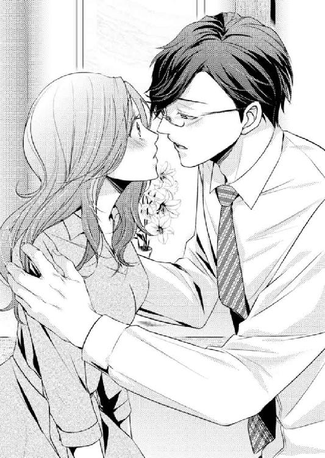
触れそうだった唇はかすりもせず、彼との距離は再び離れてしまったのだ。
「すみません......」
雄大は桃香から手を離し、わずかに視線を伏せた。
「偉そうなことを言っていたのに......。酔ってしまったのは......、僕のほうかもしれません......」
雄大は立ち上がると襖の前へ進み、背を向けたまま呟く。
「外の風にあたってきます。......少し、頭を冷やさなくては......」
桃香に告げたというよりは、まるで自分に言い聞かせたかのよう。
彼が部屋を出ていったあと、桃香はしばらく閉まった襖を見つめていた。
雄大の行動を理解しようと努力はしているのに、一方では納得し切れていない自分を感じる。さっきの彼は、間違いなく唇を重ねようとしていた。
それなのに、我に返ったかのように途中でやめ、立ち去っていってしまった。
まるで桃香から逃げるように。自分がしようとしたことを、後悔するかのように。
欲望のかけらも見せない、聖人君子のような人。そんな彼が桃香に示した態度。
でも、桃香が納得できないのは、そこではない。
（どうして......、やめちゃったんですか......）
彼が思い直してしまったことに、納得がいかない。
そして、そんなことを考えてしまう自分が、理解できない。
────桃香さん、僕は......。
彼は、なにを言おうとしたのだろう。
「......私......」
桃香は困惑したまま、指先を口元に移動して唇に触れる。
それだけで、唇が熱くなる。なにかに触れてほしがるように、唇が疼く。
こんな感覚は、久し振りだった。
第６章 揺らぐ欲望
「樽酒、用意しなくてよかったわね」
どこか安堵した様子の女将に見送られ、雄大と桃香は店を出た。
駐車場には康介が迎えに来ている。手を上げて挨拶をしてから歩き出した雄大に続き、桃香も女将に頭を下げた。
すると、頭を上げる直前に、女将が小声で囁きかけてきたのだ。
「またいらっしゃい。......絶対に、雄ちゃんと一緒に来てね」
「はい、ありがとうございます」
「雄ちゃんが、自分のために笑ってる楽しそうな顔、久し振りよ。......ありがとうは、わたしが言わなくちゃ......」
その言葉から、雄大の雰囲気が楽しげなのは桃香のおかげなのだと言われているのが分かる。
ホッとしたような女将の口調。彼女は、弟が一見挫折から立ち直り日々をすごしているように見えてはいたが、実は今でも過去の傷を引きずっているのではないかと、不安を覚えていたのではないだろうか。
人のために尽くす彼は、人のために笑う聖人君子だ。
自分の欲望を優先しすぎて人生の目測を誤った彼は、今は自分のために笑うことをしない人間になってしまっている。
その笑顔に起こった変化を、女将は感じ取ったのだろう。桃香と一緒にいる弟を見て。
自分は取るに足らない存在だけれども、雄大のためにはなれたのかもしれない。そう思うと、桃香は気持ちが浮き立った。
出会った頃から彼には助けてもらってばかりいた。少しはその恩を返せているだろうか。
「あれ？ 酔い潰れなかったんだ？ 残念。抱っこしてベッドに寝かせてあげたかったのに」
しっかりと自分の足で歩いてきた桃香を見て、康介が茶化す。からかわれた本人は、車に乗りこみながら「潰れませんよ」と照れ笑いをして軽く受け流したが、あとから乗りこんできた雄大は眉をひそめた。
兄が不機嫌になってしまったのをルームミラーで確認し、康介は苦笑をして、文句を言われる前に先手を取る。
「冗談だよ。抱っこは兄さんに譲るよ」
「当たり前だろう。康介の細腕では無理だ」
「あっ、人を非力みたいに言うなよ。パティシエを舐めてもらっちゃ困るな。これでも結構力持ちなんだぞ。......まあ、兄さんほどじゃないけどさ......」
「分かっているならいい」
「なんか、上から目線～」
「悔しかったら、腕相撲で勝ってみたらいい」
「骨が折れるから断るっ」
「治療代は出してやるから、遠慮するな」
なにも知らない人間が聞いたら、驚くほど物騒な会話を笑顔で交わすふたり。桃香としては、雄大が腕相撲などに強いということ自体、どうもピンとこない。
彼には力強いというより、どこかほんわりとしたイメージのほうが強い。お味噌汁の鍋を手に、ニコニコしている印象が強すぎる。
だが、雄大の過去を知らされたとき、桃香を抱きしめた彼の腕は男らしい逞しさが感じられた。
こんな力強い腕を持っていたのだろうかと驚くほど。
彼の腕の感触を思い出し、じわりと身体が熱くなる。今になって羞恥が湧き上がってきた。
「でも、結構顔が赤いね、桃香さん。酔いが回ってるなら、無理しないで兄さんにおんぶしてもらって帰りなよ」
「え......？ いえ、大丈夫です」
車内は暗い。おそらく康介は、すれ違う車のライトか街灯に照らされた桃香の顔を見てそう言ったのだろう。
赤くなっているのは酔いのせいではない。それが分かっている桃香は、頰を両手で押さえ、返事をしながら反射的に隣へ目を向けてしまった。
おんぶ案に賛同したのか、ご遠慮なくとばかりに雄大が微笑む。さらに頰が熱くなるのを感じ、桃香は視線をそらした。
雄大を意識してしまっている。
桃香は、彼に対する感情を否定し切れなくなっている自分を感じ始めていたのだった。
店で話をしていた際、少々おかしな雰囲気になってしまったふたり。
頭を冷やしてくると言って部屋を出た雄大は、十五分程度で戻ってきた。
それからの彼は、いつもどおりだった。
物腰の柔らかい笑顔で桃香に接してくれる、聖人君子。
まるで、数分前の彼の話も、唇を近づけてきた彼の態度も、夢であったかのように......。
雄大が戻ってきたら、どんな顔をしたらよいか分からず戸惑っていたので、彼がいつものまま接してくれたのは助かった。
だがやはり、それをどこか残念に思っている自分がいる。これも、彼の存在を特別な感情で意識し始めている証拠だろう。
そのせいだろうか。マンションへ戻りエレベーターでふたりきりになった途端、身体が緊張し鼓動が速くなり始めた。
「あっ、ああの、雄大さんっ」
いつもはなんとも思わない数秒間の沈黙なのに、苦しいような焦燥感を覚える。桃香は雄大を見上げ、思わず声をかけた。
「はい。なんですか、桃香さん」
そしていつものように返される微笑み。鼓動はさらに早くなり、繫ぐ言葉が見つからない。
咄嗟に出たのは、常々気になっていながら後回しになっていた質問だった。
「あの......、以前、私が酔い潰れたときのことなんですけど......！」
「はい？」
「わ、私、どうやって雄大さんの部屋まで行ったんでしょう？ お部屋は十七階だし、私、眠りこけていたし、どうやって運んでもらったのかと......」
「ああ、それなら......」
話の途中でエレベーターのドアが開く。足を踏み出そうとした瞬間、桃香の身体はふわりと浮き上がった。
「こうして、お運びしましたよ」
声が出ない。なんと桃香は、雄大にお姫様抱っこの形でかかえ上げられてしまったのだ。これならまだ、おんぶのほうが彼の顔が見えないぶんよかったのではないだろうか。
それだけならまだしも、彼はそのまま部屋へ向かって歩き出した。
「ゆ......雄大さ......、下ろしてくださいっ......。重たいでしょう」
慌てて桃香は身体をよじり、両足をわずかにバタつかせる。すると、その動きを止めようとするかのように、雄大の腕に力がこもった。
「暴れないでください。落ちますよ」
「......は......、はい......」
彼の力はあまりにも強くて、言われなくとも暴れ続けることなどできない。
わずかに緩む力。それでも、雄大はしっかりと彼女を抱いたまま部屋までやってきた。
さすがにもう下ろしてくれるだろうと思ったのは甘い考え。彼は器用に片腕で桃香の身体を支え、コートのポケットからキーケースを取り出してドアを開いてしまう。
（お......、男の人って、こんなに力があるものだっけ？）
困惑と照れが入り混じる。小さな子どもをかかえているわけではないのだ。桃香はそんなに身長は高くはないが、成人女子の標準体形でそれなりに体重はあると思っている。
それを抱きかかえて歩き、あまつさえ片腕で支えたままドアを開け、表情ひとつ変えなければ疲れた様子も見せない。
雄大は桃香を姫抱きしたまま部屋を進む。リビングを通り抜け、彼女がやっと下ろされたのは、雄大が使う寝室のベッドの上だった。
「こうやって、運びました」
ギシリと、身体がベッドへ沈む。上から見下ろす雄大を見たら、胸が高鳴り桃香は思わず目をそらしてしまった。
「ゆ、雄大さん、力持ちなんですね......。びっくりしました......」
「ええ。インドアな人間ですが、健康管理には気を使っています。桃香さんが会社に行っているあいだは、マンション内にあるジムでトレーニングしていたりもするんですよ」
「そうなんですか......」
「中学のとき、バスケ部だったのです。高専生になってからも三年ほど続けました。その頃に基礎体力を養ったおかげか、起業してからも精力的に動き回ることができました。一線を退いて急に動かなくなってしまったら身体に悪いですからね。ほどほどに体力維持に努めています。おかげで、今でも腕相撲は兄弟一強いのですよ」
「真面目ですね」
ついクスリと笑ってしまった。彼らしいといえば彼らしい。
「それはそうと、桃香さん、就寝前にお風呂に入るでしょう。僕、バスルームの用意をしてきます。入れるようになるまでのあいだ、コーヒーでも飲みませんか？ 紅茶がいいかな？」
「あ、......それなら」
身を起こしそうになった雄大の腕を慌てて摑む。なぜだろう。上から見下ろし、今にも覆いかぶさってきそうなこの彼との距離感を、失いたくないと思ってしまった。
──そんなことを、思ってもいいものだろうか......
「私がお風呂の用意しますよ。酔っ払って動けないわけじゃないし。お風呂もコーヒーも、両方任せちゃ申し訳ないし」
「分かりました。では、桃香さんにバスルームをお願いしていいですか？」
「もちろんです。じゃあ、早速......」
心残りを振り切って雄大の腕から手を離し、桃香は上半身を起こそうとする。
話が決まったのだから、てっきり彼も身体を起こすだろうと思っていたのだが、その気配がない。
「雄大さん？」
ドキリと鼓動が跳ね上がる。今夜はドキドキさせられっぱなしではあるが、おそらく、その中でも最大だ。
雄大は身を起こすどころか、片膝をベッドに載せ、より桃香に近づいてくる。
──彼の眼鏡が、顔にぶつかりそうだ......。
そう思ったとき、静かな囁きが、しかしとても大きく耳孔をくすぐった。
「桃香さん......、キスして、いいですか......」
口が動かない。
返事ができない。
──答えはすでに決まっているのに。
答える代りに、桃香は瞼を伏せる。唇が彼の吐息を感じ、じわりと疼いた。
けれども、彼の唇が触れたのは、疼きを感じた場所ではなく桃香のひたいだったのだ。
「とても楽しい夜でした。......僕は貴女に、とても大切なものをもらった気がします。ありがとう、桃香さん。最高の誕生日プレゼントです」
ベッドが揺れ、雄大が身体を起こしたのが分かった。
寝室から出ていく彼の気配を感じながら、桃香はゆっくりと瞼を開く。
触れてもらえなかった唇が、辛い──。
（私......、どうしよう）
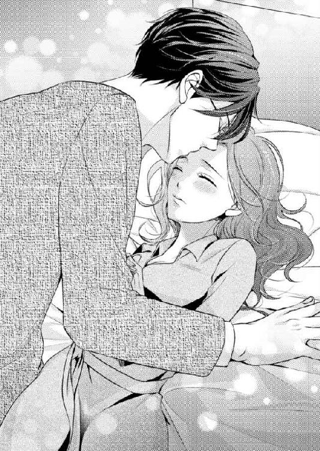
自分の中で起こる変化に、桃香はただ、戸惑うばかり......。
「本当に美味しいですね。桃香さんの目玉焼きは」
嬉しそうな彼の笑顔は、時々くすぐったくなる。
毎朝食卓に並ぶ、雄大リクエストの目玉焼き。毎朝食べていて飽きないのだろうかと、桃香はチラリと考える。
彼は毎朝、それを塩コショウで食べる。この一週間ずっとだ。
金曜の夜、あれだけ桃香を惑わせ、鼓動を爆発寸前にまでしてくれた雄大だが、翌朝の彼は桃香がポカンとしてしまうほどいつもどおりで爽やかだ。
これでは緊張していた彼女のほうがおかしいかのよう。いささか拍子抜けではあるが、そのことに安堵している自分もいる。
ダイニングテーブルに向かい合わせで座り、ふたり一緒に朝食をとる。
雄大は目玉焼きに感動しているが、桃香が感動してしまうのは、毎朝変わらぬクオリティで提供される雄大作お味噌汁のほうである。
「雄大さんは、一貫した塩コショウ派なんですか？」
桃香が目玉焼きの皿を指差す。彼女の目玉焼きにかかっているのは醬油だ。すると雄大は、その皿を覗き見て話題を合わせた。
「稀にお醬油のときもあります。実は幼い頃、目玉焼きにお醬油をかけすぎてしまったことがありまして。かけすぎたぶんを残せばよかったものを、弟たちの手前格好をつけて、そのまま食べたのですよ。目玉焼き風味のお醬油を食べているようでした。幼い子供には結構なインパクトです。それ以来、かけすぎが怖くて軽く塩コショウで済ませるようになってしまったのです」
なんともかわいらしい理由だ。桃香はぷっと噴き出してしまった。
「かけすぎたなら、ご飯の上に載せたらよかったのに」
「ご飯の上？」
「やったことないですか？ こうやって、目玉焼きをご飯に載せて......。ちょっと、お行儀が悪いかもですけど......」
雄大にこんな食べかたを教えるのは行儀が悪いだろうか。そう感じつつ、自分の目玉焼きをご飯の上に載せる。すると、ふんふんと頷きながら、雄大も一口だけ食べかけていた自分の目玉焼きをご飯に載せてしまった。
真似をされてしまっていることに一瞬戸惑うが、桃香は続いて箸で黄身を割り、そこへ少々多めのお醬油をたらす。
「黄身がとろんって出てくるでしょう。これをお醬油と一緒にご飯に混ぜちゃうんですよ。......美味しいですよ」
桃香にとっては、特に変わった食べかたではない。学生時代は、目玉焼きを食べるときは必ずこれ、と主張する友だちもいた。
だが雄大は知らなかったらしく、混ぜたものを食べては「本当だ、美味しいですね」と感心をしている。
「玉子を焼いたときの油と、とろとろっとした黄身がメインで混ざるから、味は濃いですよね。......っていうか、雄大さんに似合わない食べかた教えちゃって、すみません」
「似合わないですか？」
「雄大さん、行儀のいい人だし。......なんていうか、これって庶民的雰囲気があるから、雄大さんのイメージじゃないかなって」
桃香の説明に不思議そうな表情を見せた雄大は、数口ぱくぱくと食べてからその意味に気づいたのか、くすりと笑った。
「桃香さん、僕は生まれたときからＩＴ企業の創業者だったわけじゃありません。今でこそ多少生活レベルが上がっている事実はありますが、中高の頃はバスケの朝練に間に合わないと言っては寝坊した自分より起こしてくれなかった母親を責め、お味噌汁ご飯をかっこんで、百合さんが作ってくれた朝練後用のおにぎりを抱えて飛び出して行くような、そんな学生でした」
「想像できないです」
「アルバイトとかもしたことがありますよ。初めてしたのが、ファミレスのキッチンスタッフでした」
「雄大さんにしては地味ですね。ギャルソンとか、......ぇ、と......飲食店のカウンターとかのほうが似合いそう」
調子にのって、つい「ホストとか」とまで口に出しそうになってしまった。
彼の容姿から想像ができないわけではないが、夜の商売を似合いそうと言ってしまうのは雄大のような人にとっては失礼なのかもしれない。
自分が失言しそうになったことに焦り、桃香は話題を自分へと向ける。
「わ、私も、バイトなんかいろいろとしましたよ。でも、倉庫の在庫チェックとか、配送会社の仕分けとか、地味なバイトばっかりだったかな。接客業ってやったことない......」
勢いで話し、ふと気づく。──ひとつだけ、思い出したのだ。
「大学二年生のとき......、一度だけ、接客業に関わったことがあったかな......。小さな喫茶店で、二週間だけ。旅行に行った友達の代理だったんですけど......。モーニング担当だったんで、朝早かったのを覚えています」
話しながら箸を止め、顔を上げる。すると、同じく箸を止めた雄大がじっと桃香を見つめていた。
いつもの穏やかな視線ではない。それは、なにかを彼女に求める目だ。
──「思い出してくれ」......そう言われているような気がした......。
話の流れから、バイトの話題に関して聞きたいことでもあるのだろうか。なんとなく焦りを覚え、桃香は目をそらす。
「あの、私、朝食が済んだら出かけてきますね」
「分かりました。──あの、おひとりで？」
「え？」
出かけるという話をして、それ以上を問われたのは初めてだ。視線を彼に戻して反対に問い返すと、余計なことを聞いてしまったと感じたのか、雄大は少々気まずそうに口を押さえた。
「すみません、余計なことを......。もしや、桃香さんが、どなたか......もしかしたら男性とお出かけになるのかと......」
「ちっ、違いますっ、違いますっ。ひとりですっ。ちょっと、探し物があるので......」
椅子から立ち上がり、桃香は慌てて否定をする。
昨日の今日だ。出かけると言った桃香に、誰か男と待ち合わせなのではと勘繰った雄大が、やきもちを妬いたのだと察しがつく。
「探し物ですか......。では、桃香さんが探して見つからないようでしたら、僕にもお手伝いをさせてくださいね」
「はい。夕方までには戻りますから」
雄大はホッとしたようだ。やきもちを妬かれたことにくすぐったさを覚えるものの、桃香は改めて確信をする。
この探し物を、雄大に手伝ってもらうことは絶対にできないということを。
「探せば、ないわけじゃないんだよね......」
リング式のメモ帳をぱらぱらとめくり、桃香は大きな溜息をついて椅子の背もたれに寄りかかった。
「まあ、今以上の物件なんて、ないけど......」
ポツリ呟いて、大きな窓から外を眺める。
ランチタイムが終わりかけた喫茶店は、まだ八割の席が埋まっている。
ふたり用の小さな席だが、この時間帯に窓側の特等席に座れているのは、桃香がランチタイム前からここに陣取っているからだ。
テーブルの上には、長居する客の相手もしてくれなくなったウエイトレスに放置されたサンドイッチの皿と、溶けた氷ですっかり薄まってしまったアイスティーがある。
そして、マンションのパンフレットが二部と、よさげな物件を書きこんだメモ帳だ。
探し物があると言って外出をした桃香の目的は、自分が住むべき部屋を物色することだった。
「......雄大さん......、なんて言うだろう」
桃香に部屋を貸し与え、いつまでいてもいいと言ってくれた。彼女があの場所に住み続けることは、返すと言い張った三百万の利息を免除してもらえることでもある。
住み心地も、条件も、すごくすばらしい。おまけに同居人は、一緒に住まわせてもらうには申し訳ないほどの聖人君子だ。
「だから......駄目なの......」
呟き、何気なく窓の外へ視線を移す。外には様々な通行人。そのなかで、肩を並べ微笑み合いながら歩く恋人同士に桃香の視線は引きつけられる。
誰かと肩を並べて歩く。好きな人と寄り添い合って、笑い合う。
そんな夢は、捨てたはずだった。
誰かと恋愛をし、一緒に暮らしてお互いを知り、好きな人のために尽くして、そして、結婚をする。昔は、そんなどこにでもあるような普通の生き方を疑いなく信じていた。
しかし、二年前。恋愛に対する持論をすべて否定されるような別れを、守屋とのあいだで経験した。
もう、恋愛というものが、どうでもよくなった......。
誰かと肩なんて並べない。寄り添って笑い合う人もいらない。
ひとりでいい......。
それなのに今。
──雄大となら、並んで歩いてもいいと思い始めている自分がいるのだ。
彼と一緒にいると癒される。気持ちがとても落ち着いて、すべてを受け入れてもらえるような安心感がある。
どんなにみっともない自分を晒しても、きっと彼は、外見にはそぐわないあの力強い腕で受け止めてくれる。
桃香に絡む康介に嫉妬したと、素直に話してくれた。嫉妬をされて嬉しいなどと感じてしまったのは、初めてだった。
思わせぶりな優しさ。チラリと見せる男の艶っぽさと、彼女を心から求める態度。
男なんてまっぴらだと思っているはずなのに、雄大に関してだけは、自分に関わってくれるすべての気持ちが嬉しい。
もしかしたら彼は......と、自分に都合のよい妄想をしかける。
だがそれは、本当に、ただの自惚れにすぎない。
「馬鹿だ......私......」
雄大に惹かれている。
彼に、捨てたはずの恋愛感情を持ち始めている。
それを昨夜、彼を求めて疼き震えた唇が教えてくれた......。
だがこの感情は、とてつもなく無駄なものだ。彼は欲望というものをすべて捨てた聖人君子なのだから。
女性に対する性欲さえも抑えきってしまっている人。もちろん、恋愛に関しても同じだろう。
そんな彼に、恋心を抱いてどうする......。
一緒にいればいるほど、辛くなるだけなのに。
気持ちが募れば募るほど、心も身体も耐えきれなくなるだろう。
だから桃香は、彼の元を去ろう。そう決めた。
「雄大さん......」
彼の名を呼ぶだけで、唇が、身体ごと熱くなる。
こんな自分を、桃香はとても愚かで哀れに感じた......。
桃香がマンションへ帰ったのは、十五時もすぎた頃だった。
部屋へ入ると、いつものお出迎えがない。留守だろうかとリビングへ進む。すると、寝室のドアが少し開いていた。
もしやと思い中を覗くと、思ったとおり書斎のドアが半開きだ。雄大はそこにいるのだろう。
仕事中ならば声はかけないでおこう。そう思った直後、書斎から彼が出てきて見つかってしまった。
「桃香さん。おかえりなさい。すみません、お出迎えもできず」
「いっ、いいえっ、いいんですよ。ごめんなさい、お仕事中でしたか？」
「大丈夫ですよ。ひと段落ついたところですから。それより、お探し物は見つかりましたか？」
「え......ええ......、あの......」
問われドキリとする。そうだ、ここを出ていくのだとしても、ただ出ていくことはできない。彼に、どうしても協力してもらわなくてはならないことがあるのだから。
「あの......雄大さん。その件なんですけど......」
おそるおそる寝室へと足を踏み入れ、桃香は雄大へ近づく。彼の前に立ち、ためらいがちに口を開いた。
「......雄大さんが、私の家財道具を預けてくれているプライベートガレージって、どこにあるんでしょう......」
「はい？」
「家具、運び出したいんです。もちろん、置く場所がきちんと決まってからですけど......」
「ちょっと待ってください。それは、どういう......」
突然の話に雄大は戸惑っている。いきなり預けている家財道具を返してくれということは、別の場所に部屋を借りるという意味にしかとれないのだから当然だ。
「私......、ここを出ようと思うんです......。だから、今日は、部屋を探しに行っていて......」
「なぜですか！」
初めて聞く、雄大の荒々しい声だった。桃香は驚きのあまり大きく身体を震わせ、瞠目して彼を見上げる。
「ここを出たいなんて、なぜです！ なにか不満があるのですか、なにか不便をおかけしているのでしょうか!?」
「ち、違います......、そんなことじゃ......」
「いつまでいてもよいと言ったでしょう！ もしも足りない物があるのなら買い揃えます！ 桃香さんが必要なのだとおっしゃるなら、言うだけ用意しましょう！ なんでも言ってください！」
「......雄大さん？」
「返すなんて言っていた三百万も、もちろん返していただく必要なんてありません！ 貴女がここにいてくれるなら、僕は何だってする覚悟です！」
「待って、雄大さん......、どうしてそんなこと......！」
穏やかだった目が怒っている。
彼から感じるのは、憤りと焦り。──普通の人間と同じ感情......。
こんな雄大は、見たことがない。
「雄大さんっ......！」
驚いて、雄大の気持ちを抑えようと、思わず彼に向って手を伸ばす。けれどもその手が届く前に、桃香は強く両腕を摑まれ背後のベッドへと押し倒された。
柔らかいベッドに倒れたはずなのに、まるでアスファルトの上で転んだかのような衝撃を感じる。それだけ、桃香の身体は強くベッドに押し付けられてしまったのだ。
上から押さえられ、身体を動かすことなどできない。今までの彼とは打って変わった乱暴な行動に、ゾワリと恐怖を感じ、怯えつつも顔を上げる。
こんなことをして、いったいどんな険しい表情をしているのだろう。そういえば康介が言っていた。怒ったときの雄大は怖いと。
しかし、そんな心配は次の瞬間消えてしまう。
雄大を仰ぎ見ると、彼は、見ているほうが泣き出してしまいそうなほど切なげな表情をしていたのだ。
「......僕は......、お金というものを、......それを利用して私欲を尽くす行為を蔑んでいたというのに......。今は、そのお金の力を駆使してでも、......貴女を手元に置こうとしてしまっている......」
「雄大さん......」
「自分が、とても情けなくて愚かに思えます。けれど、......止まらないのです......。桃香さんがいなくなる......、そんな話を聞かされてしまっては」
「どうして、ですか......」
「貴女にならば、なんでもしてあげたい。貴女が欲しいというものは、なんでも与えてあげたい。......そんな、驕った考えまで持ってしまう......。こんな感覚は、長いこと忘れていました......」
「雄大さん！」
いつもの雄大じゃない。このままでは彼が自分を見失ってパニックに陥るのではないか。そんな不安でいっぱいになった桃香は、彼の感情を止めようと声を荒らげる。
その声にハッとし、雄大は桃香の身体を押さえつけていた力を緩めると、焦燥感漂う双眸を眼鏡の奥で細めた。
「......桃香さん......僕は......」
雄大の顔が近づく。
そして、唇に柔らかな感触が訪れる。
それが強く押しつけられ、桃香は目を見開いた。
すぐ目の前にあるのは、雄大の眼鏡と閉じられた瞼。急に恥ずかしくなり、ギュッと目を閉じた。
──今、雄大の唇が、桃香の唇に重なっている......。
昨夜、求めてもらえなかったものを、今やっと、欲してもらえたのだ。
そう考えて、彼女の全身が熱くなる。
かすかに唇を浮かせた雄大が、彼とは思えない艶のある声で囁く。
「僕は......、貴女が欲しくて、堪らないのです......」
小さな音吐。
しかしそれは、とても大きく桃香の心を揺るがした。
「──貴女が、愛おしくて、堪らない......」
これは、冗談だろうか。
雄大は桃香を引きとめたいばかりに、自分を偽っているのだろうか。
彼は欲望というものを、すべて捨てた人間だったはずなのに。
溢れ止まらない桃香に対する想いを零した唇が、再び彼女の唇に触れる。
さっき強く押しつけられていたそれは、今度は優しく触れ、桃香の唇をなぞって上唇を食む。
不意に漏れた吐息が震え、それを待っていたかのように舌が挿しこまれた。
彼のキスに身を任せ、身体の力を抜く。意識がとろりとしかかったとき舌で上顎をなぞられ、その思いがけない刺激に桃香の全身がふるりと戦慄いた。
「貴女は......、僕にとても大切なものをくれました......」
桃香の力は抜け、身動きをする様子はない。そのことに安心をしたのか、雄大はゆっくりと唇を離しながら、彼女を押さえつけていた手の力を緩めていった。
「僕に......、失っていた欲望をくれた。誰かを心から欲する気持ちを、思い出させてくれたのです」
彼は昨夜、桃香に最高の誕生日プレゼントをもらったと言ってくれた。
彼が彼女から得たのは、とうに捨てた欲望。
なくしていたはずの感情を、その身体に取り戻したのだろう。
だがそこには、彼が男であることを前提に、とても重要な疑問が残る。桃香は雄大を見上げ、それを問いかけた。
「......つまりそれは、私の、......身体が欲しいっていうことですか......」
「それもあります」
「欲望を思い出して、性欲が戻ってきたから、......セックスをする相手が欲しいっていうことですか......」
「そうともとれますね」
「どうして私なんです......。雄大さんなら、どんな女の人だって手に入るでしょう......。地位だってお金だって、少しぐらい投げ捨ててもいいほど持っていて、それこそ、よりどりみどりじゃないですか。なにも、私みたいな女じゃなくても......」
なんて卑屈なことを言っているのだろう。
彼に欲されて嬉しくないわけではない。彼がくれた言葉は、いろいろな意味にとれて不安なのだ。
単にセックスの相手が欲しいだけなら悲しすぎる。
どんなに彼に求められて嬉しくても、そんな単純な男の欲望を見せられてしまうくらいならば、お金や身分で相手を手に入れてくれと、強がりを言う他ない。
気持ちを二の次にして身体の関係だけを持てるほど、桃香はしたたかにはなれない。
唇を結び、緊張した面持ちで雄大を見上げる。彼女の気持ちを悟ったのだろう、彼はふと薄微笑を浮かべると、強張っている彼女の頰へ片手を添えた。
「そんな悲しいことを言わないでください。僕は、貴女のすべてが欲しいのです。心も身体も、僕の心はすでに、貴女しか考えられなくなっている。言ったでしょう、愛しくて堪らないのだと。──好きだ、と言ったほうが、愛している、と言ったほうが、伝わりやすいのでしょうか？」
頰が熱い。顔を通り越して頭まで熱くなった。頰に触れている彼の手にも、この熱は伝わっているだろう。そう思うと羞恥心は加速した。
「それこそ、どうして私だったんでしょう......。偶然にも、雄大さんの近くにいたからですか？ ......ずっとひとり暮らしだったところへ急に女が近寄ったから、しょうがなく私に心が向いただけなんじゃ......。だって、私たちはほんの一週間前、初めて会ったんですよ......。なのに......」
焦ってそう口にしてしまったけれど、それは自分にも言えること。
なんといっても桃香自身、この一週間で切ないほど彼に惹かれてしまった。
振り向いてもらえないのが辛いから傍を離れよう、そう思いつめるほど。
彼には桃香を引きつけるだけの包容力や寛容さがある。惹かれてもしょうがないと思えるだけのものを持っている男性だ。
けれども桃香は、自分でも雄大にそこまで想ってもらえるほどの女ではないという自覚がある。
好きだという言葉をもらって嬉しいのに、心のどこかで、まだ、信じられない。
「一週間前に、初めて出会ったのではありませんよ......」
雄大が口にする言葉の意味が分からない。一週間前、それ以前にも、会ったことがあるというのだろうか。
「僕は五年前、貴女に会っている。......精神を病んで死ぬことしか考えられなくなっていた頃......。──あの地獄から救ってくれたのは......貴女だった......」
桃香は目を見開く。
すべてのものに失望したという過去の話は昨日聞いた。なにかのきっかけがあって、そこから立ち直ったことも。
（そのきっかけが、私だっていうの？）
覚えがない。いったいいつ彼と会ったというのだろう。
「思い出して、桃香さん......。小さな喫茶店で、貴女が出してくれた目玉焼きが、僕を救ってくれたのですよ」
「目玉焼き......」
──五年前。
小さな喫茶店。大学二年生のとき、二週間だけやったモーニング担当のアルバイト。
あの喫茶店のモーニングは、トーストとコーヒー、そしてヨーグルトだけ。
マスターはコーヒー好きな老齢の男性だった。朝は店にこないことのほうが多く、モーニングは担当のアルバイトにまかせっきりの状態だったのである。
ゆえにメニューは、ごくシンプルなものばかり。
それでも、マスターがモーニング用に焙煎しておいてくれるコーヒーや、老舗ベーカリーから仕入れたパンで作るトーストは絶品だったので、モーニングの時間帯に客が途切れたことはなかった。
店が小さいので、アルバイトはひとりで充分足りる。友だちの代打ではあったものの、やりやすいアルバイトだった。
記憶を手繰っていた桃香の目が、一瞬見開かれる。
────そうだ。一度だけ、モーニングで目玉焼きを出したことがある......。
「......思い出して、くれましたか？」
雄大が静かな声で問いかけ、眼鏡を外した。
「五年前のあの日、僕は足を進めるのも億劫なくらい自分を持て余していた。そのときにふらりと入った喫茶店にいたのが、貴女です」
眼鏡をベッドのサイドテーブルに置き、雄大は桃香を見つめる。
眼鏡を取っても、彼は相変わらず整った綺麗な顔をしている。爽やかで穏やかな相貌が目の前にある。
桃香が「もしや」と思う人物とは、正反対だ......。
「まさか......あの人......」
脳裏に思い出されるのは、憔悴しきった男性の姿だ。青白い顔と、今にも崩れ落ちてしまいそうな雰囲気を持った人だった。
あの人は眼鏡をかけていなかったように思う。
モーニングを出してもまったく手をつけず、顔を伏せて、テーブルの上だけを見つめていた。
身形の良いスーツ姿の男性だ。もしやリストラなど、仕事関係でなにか辛いことでもあった人なのだろうか。
早めに客足が途切れ、店内にいるのはその男性と桃香だけ。マスターはまだ来る時間ではない。
桃香はふと思い立ち、軽く焼いた目玉焼きを作った。
「どうぞ。サービスです。よかったら食べてくださいね。お醬油がないので、塩コショウでいいでしょうか。玉子は完全栄養食っていいますから、元気出ますよ、きっと」
余計なお世話。または気休めにしかならないだろうとは思いつつ男性に出すと、彼は目玉焼きを見つめてとても驚いた顔をしていた。
手をつけないならばそれでもよかったのだが、男性は他の物には手をつけなくても、目玉焼きだけは食べてくれたのだった。
会計の際に、消え入りそうな声で「ありがとう」と言ってくれたのを覚えている。桃香は地味な内勤のバイトしかやったことはなかったが、人と関わる接客のバイトもいいなと感じた瞬間だった。
少し赤味が引いてきた頰を、雄大の手が撫でる。桃香の前髪を搔き上げ、目を見開き彼を凝視する彼女を見つめた。
「心から信用できる人が、周りにいなくなっていた。孤独だけしか持っていなかった僕に、貴女だけが優しさをくれた。僕のためにと、気持ちをかけてくれた。たとえそれが気まぐれであっても、僕は、とても嬉しかった......」
「雄大さん......」
「あのとき戴いた目玉焼き、とても美味しかった。素朴で、普通で、平凡なのに、今まで僕が触れてきたどんなものよりも一番心に沁みました。今ある自分を捨てて、シンプルな自分になろう、そう思えた瞬間です」
「そんな......大袈裟です......。目玉焼きくらいで......」
「大袈裟ではありませんよ。あのときの感動があったから。今の僕があるのです。その後、貴女にお礼を言おうとお店に出向きましたが、......お店はなくなっていました」
やむを得ない閉店だった。マスターの歳も歳なので、桃香がバイトを手伝ってから間もなく、親族の希望もあって店をたたんだのだという。
「でも、どうして目玉焼きを作ったのが私だって知っているんですか......。あの......、雄大さんの人脈で調べた、とかなんですか......？」
「はい。調査をしてもらって、代理でシフトに入った女の子だと知りました。ですが、誤解をしないでください。それ以上貴女のことを調べるようなことはしていません。立ち直るきっかけをくれた、名前も知らない女性に感謝をしながら、この五年間をすごしたのです。......ですが、半年前に、僕はその女性と再会をした」
「半年前？」
「偶然に貴女を見かけたのです。......雨の中で、傘もささずに立ちすくんでいました。......捨てられた仔猫を見つめて......」
「仔猫......。あのときの......」
半年前。捨てられたらしい仔猫が雨に濡れているのを見付けて、一晩だけ保護したときの話だろう。
先日は仔猫の件を知っている元のマンション管理人に、猫の臭いがついたと因縁をつけられた。
びしょ濡れの猫を抱き上げたとき、声をかけられたのを覚えている。「飼うのですか？」と。
「一晩、......せめて、雨がやむまで、保護するだけです......。明日には、ここに戻します......」
話しかけてきたのは、声からして男性だろうとは思っていた。桃香はその人の顔も見ずに、ただ仔猫だけを見つめて答えたのだった。
「飼えないのに、連れていくのですか？ いっときの同情は、ときに酷なだけですよ。助けてもらえたと安堵した翌日には捨てられてしまう。気休めの安息を与えるくらいならば、最初から気持ちなどかけないほうがよいのではありませんか？」
「それでも、気休めだって分かっていても、手を差し伸べてほしいときが誰にだってあります。それで......自分が変われることだってある......」
桃香はそう言い捨てて、マンションへ走り帰った。
あれは、結婚生活に少し疲れていた守屋が、桃香とよりを戻したいという話を持ちかけてきた日だった。
「桃は、まだ僕が好きなんだろう？ だから男も作らないでひとりでいる。だったら、また一緒にいよう」
あまりにも身勝手な言い分だ。そんなことを言えてしまえる彼が哀れに思えた。
そして、そんな男に、いつまでも言い寄られてしまう自分も......。
雨の中で、ぬくもりを求めて鳴いている仔猫が、自分であるように見えた。
恋愛を放棄して好き勝手に生きているように見えても、きっと自分は、ぬくもりを欲しがっている。気休めでも、誰かの気持ちを欲しがっている。だから守屋にいつまでもつけこまれてしまうのだと。
「気休めでも、貴女に手を差し伸べてもらって変われたのは、僕自身でした。僕は、猫を拾った女性が目玉焼きを出してくれた彼女だとすぐに分かりました。この偶然は、もしや必然だったのではないか。そんなことを考え、貴女のことが頭から消えなくなっていた頃......。三度目の偶然が、訪れたのです」
嬉しそうに声が弾み、そして再び、雄大の唇が落ちてくる。
桃香の唇をさらい、食み、彼女の柔らかさを感じてから、彼の唇は耳元へと移動する。
「一週間前、百合さんの店で貴女にまた出会えた。......これを、偶然ではなく必然の運命だと捉えた僕は、間違っていますか？」
「......三度め......」
「そうです。酔った女性に部屋へ連れて行ってくれなどと頼まれても、ほんとにお連れすることなど決してありません。桃香さんだから、連れてきてしまったのです」
そうだ。雄大は、そういう男だ。
欲望も、性欲も、すべて抑えこんで放棄していた。どんなに美麗な女性に酔ったから介抱してくれと頼まれても、彼はきっと、あとを女将に任せてしまうだろう。
桃香だから。自分を救った女性だと思ったからこそ、この三度目の運命を受け入れたのだと雄大は言っている。
雄大の唇が桃香の耳をなぞる。外耳から耳朶へ、耳の裏にくちづけながら、彼は切なげに問いかけた。
「貴女を......離したくはないのです......。僕は、どうしたらよいですか」
そんな彼を見ていたら、胸が詰まって泣いてしまいそうだ。桃香は顔を上げた雄大を見つめながら、両腕を伸ばす。
「......私が欲しいもの、なんでもくれるんですよね......」
「はい、なんでも」
彼の頭を抱き寄せ、唇を近づける。唇同士が触れる手前で、桃香は放棄していた自分の感情を、雄大に差し出した。
「......雄大さんが、好きです......。──雄大さんの欲望、......私に下さい......」
──それ以上の言葉は、いらなかった......。
桃香のひとことは、彼女の気持ちも、雄大を受け入れようという喜びも、すべてを表していた。
それ以上のものはいらない。
......はず、だったのだけれど......。
「雄大さんは......ほんとにもう......」
呆れ口調で呟き、桃香は溜息をつく。しかしその口元は、すぐに微笑ましげにほころんだ。
「雄大さんらしいよねぇ......」
クスクスと小さな笑いが止まらない。桃香は今、歯痒いのに嬉しい気持ちでいっぱいなのだった。
つい数分前、彼女の上から降り注いでいたのは、彼がくれるキスだった。けれども、今降り注いでいるのはシャワーのお湯である。
いいムードのあとにシャワーを浴びるとなれば、雄大と一緒であるか、もしくは寝室で彼が待っているかのどちらかだろうと予想ができる。
でも残念なことに、桃香は今ひとりでバスルームにいた。寝室にも雄大はいない。なんといっても彼は、ある物を買いに出かけてしまっているのだから。
「三十分......いいえ、二十五分......、二十分で戻ります！」
珍しく焦りながら力説した雄大を思い出すと、笑いがこみ上げる。
笑ってはいけない。彼が買い物に出てしまったのは、彼の真面目さゆえ、そして、桃香を大切に扱いたいのだという誠実さからなのだから。
お互いの気持ちを伝えあい、ふたりは良いムードになっていた。ベッドに倒れこんだその流れのまま、素肌を重ねることになるだろうと桃香は信じて疑わなかった。
長いキスをかわし、そろそろ違う場所にも触れてくれないだろうかとじれったさを感じ始めたとき、雄大が慌てた様子で唇を離したのだ。
「......申し訳ありません、桃香さん。今しばらく、待っていてもらえますか？」
「どうかしたんですか？」
「今すぐ衣服を剝ぎ取って貴女を感じたいのが恐ろしいほどの本音なのですが......。僕には、それをする準備がないのです」
「準備？ とは？」
「はい。最終的に中に出さないとか、そういった対処法もあるのでしょうが、挿れてしまったら膣外射精でも危険性は同じですので......」
「分かりましたぁっ！ それ以上言わなくてもいいですっっ!!」
──つまり雄大は、避妊具の用意がないと言いたかったらしい。
（ハッキリしてるのはいいけど、言いかたが恥ずかしいよ、雄大さん......）
しかも彼は、とても真剣な表情でそれを言うので、桃香は焦るやら照れるやらで大変だったのだ。
成熟した男性ならば、たとえパートナーがいなくとも、いつなにがあるか分からないのだから常にそういった物の用意をしておくのは常識かもしれない。札入れに一枚でも常備しているのが理想だろう。......とはいえ、雄大は、そんな性欲と縁を切っていた男だ。
かえって持っているほうがおかしい。
マンションの隣にあるコンビニで買えば、すぐに戻ってこられる。しかしそこはよく利用するため、雄大は店員と顔見知りになっていた。最近は桃香も一緒に行っていたので、彼女も覚えられているだろう。
「ずっとひとりでいた男が女性と買い物に来るようになったと思ったら、いきなり避妊具を買っていった。僕は平気ですが、桃香さんは、のちにコンビニに行くのが恥ずかしくはなりませんか？」
正直、なにかを勘繰られそうで恥ずかしい......。
そんな理由もあり、雄大は少々離れた場所にある薬局まで、避妊具を買いに行ったのだった。
ムードをすっ飛ばして、安全を優先した雄大。
彼らしい。これは、自分の身体に起こる反応より、桃香の身体とメンタルを大切にしてくれたということ。
本当に彼らしくて、嬉しいくらいにくすぐったい。
「優しいなぁ......もぅ......。大好き......」
ポツリと出る本音に、シャワーで温められるのとは違う原因で体温が上がる。のぼせてしまいそうだと思って、桃香はシャワーを止めてバスルームを出た。
「桃香さん、ここにいたのですね」
ドアを開けた直後、雄大の姿が目に飛びこんでくる。桃香は思わず後ろへ飛び退いてしまったほど驚いた。
「よかった。帰ってきて寝室へいったら桃香さんがいなかったので、逃げられてしまったのかと思いましたよ」
それでバスルームを覗きにきたら、ちょうど桃香が出てきたところだった、ということらしい。
雄大はタオルを手にすると、にこやかな表情を崩さないまま、裸で固まる桃香に歩み寄った。
「のぼせませんでしたか？ 赤くなって。かわいいですね」
抱き合う前から裸を見られてしまったのだから、赤くなるのも当然というものだろう。
桃香はこんなにも動揺しているというのに、雄大は表情ひとつ変えない。
これは、女の裸など今さら珍しくもないということだろうか。それとも桃香の裸には驚く価値もないということか。
複雑な思いを抱く桃香の頭にタオルをかぶせ、髪をくしゃくしゃっと拭く。雄大はそのタオルを彼女の身体に巻きながら、爽やかに感想を述べた。
「桃香さん、綺麗な肌ですね。無理やりニコニコしていないと自分を見失いそうですよ」
「そ、そう言ってもらえるのは嬉しいですけど......、見失いそうには見えません」
「必死で抑えています」
......本当だろうか......。こんな爽やかな笑顔で言われると、いまいち信用できない。
巻いたタオルから手を離すと、雄大は相変わらず爽やかに問う。
「桃香さんがシャワーを使う心遣いを見せてくださったので、僕も続けて使ったほうがいいですか？ 一応、桃香さんが帰られる前はジムにいたのでシャワーは使ったのですが」
「あ......、それはどちらでも......。私は時間があるならと思って、ちょっとのつもりで使っただけなので」
「ちょっとの割には、真っ赤ですが......」
笑顔が引きつる。桃香としては雄大のせいだと言ってやりたい。彼の一連の行動は、桃香に照れくささしか与えない。
戸惑うあまり、思わず視線だけを横へそらしてしまう。すると、ふわりと身体が浮いた。
「ゆう......だいさっ......」
雄大が桃香を姫抱きにしたからだった。
「では、お言葉に甘えて、僕はこのまま桃香さんをベッドへお連れしたいと思います。桃香さんがこれ以上真っ赤になってしまっても困りますので」
「こ、このままですか......」
「はい。もう桃香さんに触りたくて堪らなくなっているので、貴女を抱いたまま移動させてください。もうこの手から、貴女の身体を離したくはないのです」
「正直すぎます」
「はい。僕もそう思います」
余計に赤くなってしまいそうだ。
雄大が歩き出し、バスルームを出る。こうして抱きかかえられていると、昨日エレベーターを出るところから姫抱きにされてベッドまで運ばれたのを思いだす。
昨日はひたいにしかキスをしてもらえなかった。自分がどれだけ雄大に触れてもらいたがっているかを、疼く唇が教えてくれた。
（雄大さんに、抱かれるんだ......、私......）
そう考えるだけで、腰の奥が重くなる。自分を抱く彼の力強い腕を感じると、思わず内腿を擦り合わせてしまいたくなるじれったさが襲った。
「ところで、ちょっとお聞きしますが......」
「はい？」
「桃香さんは、濡れやすいほうでしょうか？」
「は......？」
「いえ、薬局の方に、潤滑ゼリーが通常の五倍という極めて女性に優しい商品もご推薦いただいたのですが、結局はメーカーが社運をかけて開発したという極薄物を購入してしまいまして。ですが、もしかしたら桃香さんは五倍のほうが嬉しかったのではないかと」
「こっ、答えづらいことばかり聞かないでくださいっ」
ストレートすぎる。それも毎回真剣そのものという表情で聞かれると、照れるを通り越して、困る。
（天然にも限度がっ！）
心で叫んでしまったとき、桃香の身体がベッドの上に置かれた。
「まあ、それは、これから僕に確かめさせてください......」
上から見おろす雄大の、ちょっとずるさを感じさせる笑みにドキリとする。まさかわざと聞いたのでは......。そんな疑問が頭をよぎった。
雄大が覆いかぶさり、桃香を抱きしめる。服を着ているときとはまた違う感覚に、身体が緊張を覚えた。
「嬉しいです、桃香さん。......やっと、貴女に触れられる......」
くちづけをしながら、彼は桃香のタオルをはぎ取ってしまった。その唇は鼻や頰、耳から首筋へと入念にたどっていく。
身体を抱いていた両手は、背中から肩口、腕から脇へ。丁寧にまさぐっていった。
桃香は首筋を何度も往復する唇を助けるよう、顔を横へ傾ける。ぞくりぞくりとした小さな刺激をもらいながら、桃香は控えめに口を開いた。
「あの......雄大さん......。カーテンは......」
「なんですか？」
「カーテンは......、閉めないんですか？」
「十七階ですから、誰にも覗かれる心配はありませんよ」
「いえ、そうじゃなくて......」
桃香は言い淀む。まだ夕方。外からは朱色に傾いた陽が入りこむ時刻。もちろん寝室の中も明るく、雄大の顔はハッキリと見える。ともすれば、彼だって桃香の姿はハッキリと見えているということなのである。
こなれた恋人同士ならばともかく、初めて肌を合わせる相手とこんなに明るい部屋で抱き合うというのは、いささかの抵抗感があるのが普通というもの。
桃香が言わんとしている意味を悟ったのだろう。雄大も納得をしたようにうなずくが、その様子とはまったく違う答えが返ってきた。
「明るいほうが桃香さんがよく見えます。僕は嬉しいですよ」
「は......恥ずかしいです......」
「言いましたよね。もうこの手から貴女の身体を離したくはないのだと。ですから、このまま離れません。カーテンなどに触れるより、貴女に触れていたい」
いつにない彼の我儘を聞かされているような気分になる。初めて見せてくれるそんな雄大の態度が、胸の鼓動を速める。
このままでいいかと、戦わずして気持ちが動く。すると、ボディラインをなぞっていた雄大の両手が、下から胸のふくらみをキュッと持ち上げた。
「きゃっ......」
「きゃっ、はないでしょう。悪いことをしているような気持ちになるではありませんか」
「ご、ごめんなさい......」
「大丈夫ですよ。違う声を出せるようにしてさしあげればよいだけです。そうすれば、恥ずかしいなんて思う暇もない」
深読みをするのが悪いのだろうか。彼の言葉がすべて恥ずかしく聞こえる。そんな唇が、鎖骨に肩に、肩口へと移動する。唇を這わせ舌で辿り、ときおり吸いついてくる。それらの仕草は、本当に桃香の肌から離れまいとしているかのようだ。
雄大の唇の動きを視線で確認しつつも、意識は胸に向いてしまう。両乳房がやわやわと大きく揉みしだかれているのが分かった。
マッサージをするかのようなゆっくりとした手つきだが、じんわりとした心地好さが上半身に広がっていく。
大きく吐く息が、熱を持って震え始める。それを感じ取ったのか、雄大の唇が鎖骨の上で笑んだ。
「ドキドキしますね。桃香さんのそんな吐息を感じると」
「......雄大さんの触りかた......、凄く優しくてホッとするんです......。寝ちゃいそうなくらい、気持ち好いです......」
「気持ち好いは嬉しいのですが、寝ちゃいそうは、いただけません」
少し拗ねているように聞こえ、桃香はクスリと笑う。すると、雄大の手が胸から離れた。
「眠らせませんよ。......いっそ、眠らないでこのまま抱かれていたいと思ってもらいたいくらいです」
艶のある声音にドキリとする。彼の唇が重なり、今までになく唇を深く吸いこまれる。そこに意識を持っていかれるなか、彼が自分の服を脱ぎ始めたのが分かった。
「眼鏡も邪魔ですね」
イラつくように言い捨て、雄大が眼鏡を取る。それをサイドテーブルに置くのももどかしそうに、彼は桃香にくちづけを続けた。
今までは眼鏡が彼女の肌にぶつからないよう気を使っていたのだろう。障害物がなくなると、彼の唇は向きを変え角度を変え何度も桃香の唇を貪った。
だがそれは決して乱暴にではなく、応えようとする彼女をしっかりとリードしてくれるもの。差し出された舌をただ絡めるのではない。自分の口腔へ招き入れ、彼女からの舌の愛撫を受け取ってくれる。
決して自分の独占欲で相手を支配しようとはしない。
受け入れてもらえている。そんな感覚が全身に広がっていく。桃香は気分が高まって雄大の背へ両腕を回し、彼を搔き抱いた。
重なり合う唇の隙間からは、唇の愛液が溢れ滴り流れる。キスに夢中になるあまり、桃香はそのことにも気づけない。
雄大の両手が再び両胸に添えられ、包みこんだまま大きく揉みしだかれる。形を変えて動かされるふくらみの頂を指の間に挟まれると強く擦り合わされた。
「......ンッ......ふっ......」
くちづけで唇をふさがれ、外に出すことのできない喘ぎで喉が震える。キスだけで漏らされていた吐息が違う反応をし始める。勃ち上がった突起がさらに強く擦られた。
雄大の背に回した手に力が入る。乳房に与えられる刺激に耐えるよう、思わず頭と肩が浮き上がりそうになった。
片方の乳首が指先で擦り搔かれ、摘まみ上げられた瞬間、唇が離れる。
「ハァ......あっ、んっ」
漏れ出してしまった声に羞恥を感じる間もない。互いの唇のあいだで糸を引きあう銀糸が自然と切れるのも待たず、雄大は顔を胸へと移動させ、もう一方の頂を舌先でくすぐった。
「あっ......雄......大さっ......」
細かく動く舌先に煽られ、顔を出していた突起が張り詰めてくる。硬度がついたそれを、彼は歯で軽く搔き舌で舐めあげた。
「ンッ......あっ、ぁっ......きもち......」
気持ち好いと口から出そうになったが、つい唇を結んでしまう。短い喘ぎくらいならば、感じている証拠なのだから出すことも聞かれることも構わない。でも快感をそのまま口にしてしまうのは、どうにも恥ずかしさが先に立ってしまう。雄大のような男に対しては、特に。
「僕と同じですね」
「なに......が......？ あっ......」
「乳首が硬くなってピンっと勃っていますよ。同じくらい昂ってくれているのだと思うと、嬉しいですね」
「そっ......そんな実況中継はいりませんっ」
爽やかにアハハと笑ったあと、自分と一緒で嬉しいと言ってくれた乳首に吸いつく。硬くなったそれが飴玉のように舌で舐め回され、桃香は控えめな喘ぎを吐息に混ぜた。
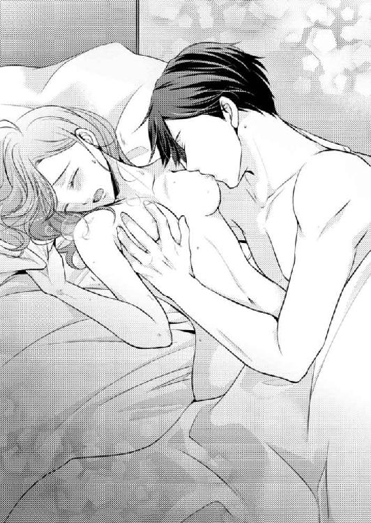
こんなときでも、雄大はまったくいつもどおりなので、桃香ばかりがひとり緊張しているのは無駄な気がしてくる。
自分を必要以上によく見せようとして、構える必要などないのかもしれない。桃香は胸でうごめく彼の頭に手を添え、撫でるように髪を搔き上げた。
「......気持ち良いです......、雄大さん......」
肩から力が抜け正直な気持ちが言葉になる。口に出してしまうと、余計に快感が増したような気分になった。
上目遣いに桃香を見上げ、ぺろりと乳首を舐めた雄大の唇が笑む。
「やっと教えてくれた。さっき、言おうとしてやめたでしょう」
「気づいていたんですか？」
「もちろんですよ」
片側の乳房を揉みながら、雄大の唇が桃香の肌を下のほうに辿っていく。胸の下をなぞり、脇から腰へ。空いていた片手が半開きになっている内腿を押し広げると、その手は迷いなくさらけ出された花芯にあてられた。
「よかった。ゼリー五倍タイプじゃなくても大丈夫のようです」
彼の声が少し上ずって聞こえるのは気のせいだろうか。広げられる前からそこの潤みを感じていただけに、雄大に指摘されてしまうと、嬉しいやら恥ずかしいやら複雑だ。
ずっと雄大の頭に添えていた桃香の手が、彼の動きと一緒に自分の両足の中央で止まる。今までとはまったく違うぬるりとした感触が、花芯を縦に走った。
「濡れやすいほう......。が、正解でしたか......。ですが、濡れすぎですよ......。拭ってあげますからね」
「あっ......ふぅっ、んっ......あっ！」
大小の秘唇にまとわりつく愛液を、雄大が舌で舐め取っているのが分かる。自分はどれだけ感じてしまっていたのだろう。ぺちゃぺちゃと足のあいだで響く水音が、さらなる興奮を生んでいく。
「雄......ぅんっ......んっ、あぁ......」
彼の髪をぐっと摑む。その途端、蜜口を指先で搔かれて腰が浮いた。
「ここも、いっぱいです......。こんなに溢れていたら、僕が入れない......」
「あっ......やっ、雄......大さっ......あぁっ」
「どうしたらいいでしょう。桃香さん」
これはちょっと意地悪すぎる。今まで散々困惑するような質問をされてきたけれど、これは中でも一番答えづらい。
しかし、どうやら雄大は、桃香が答えなくてはそれ以上をしてくれないらしい。蜜口に溜まる愛液をただ指先で搔き回し、時々舌でさらっているだけだ。
「雄大さ......拭ってくれるって、言ってたじゃないですかぁ......」
さっきの言葉を逆手に取る。その瞬間、ピタリと雄大の動きが止まり顔が上がった。
「僕が入れるだけ、取ってしまって良いのですね？」
「い......いいですっ......」
入れるだけ、というのも意地悪な言い回しだ。愛液が溢れていようと挿入することはできるはずなのに。
（意外と、エッチするときは意地悪になるんだなぁ......）
普段は絶対に他人には見せないであろう雄大の一面。桃香の口元はクスリとほころんだけれど、次の瞬間、突然襲った快感が吐きだされた。
「あっ......！ やっ......あぁっ！」
愛液でいっぱいになった蜜窟に、雄大の指が深くまで挿しこまれたのが分かった。素早くスライドされるそれは、今までとは比べものにならないほどの淫音をたてて溜まる蜜を搔き出していく。
「ああっ......んっ、あっ、指っ、......やぁんっ！」
震える声は悦びだけを吐きだす。愛液を取り拭おうとする指は曲げられているらしく、スライドしながら膣壁を搔き、内側から桃香の身体に刺激を与えた。
「雄大さっ......、ああんっ......！」
「はい？ 入れるようになるまで出しますよ、よいのですよね？」
「もっ......もぅ、入れると思いま......あぁっ！ 指......も......ぅ、ダメですぅ......抜い......てっ、ああっ！」
「はい。桃香さんがそうおっしゃるのでしたら」
あっさりと指が抜かれ、ずっとまさぐられていた乳房からも手が離される。上半身を起こした雄大に微笑まれても、笑い返す余裕などなく、いつの間にか恥ずかしいくらいに大きく広げられた両足を動かすこともできない。
強い刺激に昂り、息が切れる。耐えられなくて指を抜いてくれと頼んだはずなのに、蜜窟が物欲しそうにヒクついているのが分かった。
「ゆう、だい......さん......」
ここまで感じてしまうと、心に湧き上がる想いはひとつしかない。
「おねが......い......」
シーツに落ちた手を雄大へ伸ばす。そんな桃香の手を取り、雄大は彼女の乱れた髪を搔き上げた。
「入っても、よいですか？」
相変わらずの爽やかな微笑み。そんな顔で答えづらいことを聞くなと怒ってやりたい。けれどこの微笑みに、今はとても艶っぽいものを感じる。
人間が持つ、卑猥さ淫らさ、男性が本来持つ、己の性欲を昇華させようと奮い立つ計画的な欲望。──それは、彼がやっと取り戻した感情。
「......いいです......」
桃香は腕を伸ばし、雄大を求める。頭を抱き唇を寄せて、自分からねだった。
「雄大さんの欲望......私にくれるんでしょう......？」
吸いつき合うようなキスは、とても濫りがわしい味がする。それは、桃香が零した欲望の味だ。
唇を合わせたまま、雄大の手が枕の下を探る。そこからなにかを出し、彼が膝をついて腰を浮かせたのが分かった。
サイドテーブルにそれらしきものが見当たらないと思っていたら、彼は枕の下に避妊具を隠していたらしい。確かに目につくところに投げおかれても、これからやりますと意気込みが丸出しのようで興醒めである。
雄大が準備を施しているあいだも、唇は離れない。キスをしたままでは装着がしづらいのではないか、そんなことを考えていたら突然腰をかかえ上げられ、疼く花芯に熱い塊があてがわれた。
桃香は唇を離そうとしたが、雄大が吸いついてくるので外せない。しかし蜜窟に充溢感を覚えた瞬間、唇が離された。
「あっ......！ あぁ、ぅっンッ！」
挿入の快感が嬌声になり、どんどん奥に向かって自分の中が埋められていくのが分かる。桃香は雄大の肩口を摑み、声を震わせた。
「雄......ああっ、大さっ......あっ......！」
「桃香さん......、入りましたよ。分かりますか......」
「わか......分かりすぎてっ......あぁっ、どうしよ......ンッ......」
中ほどまで到達していた滾りが、入口まで引き抜かれる。圧迫感がわずかに緩み大きく息を抜くと、次の瞬間、一気に突き貫かれた。
「ああぁっ！」
強い衝撃に両足が伸びた。そのまま硬直し、ピクリと痙攣する。
「雄......大さっ......、あっ......深ぃっ......」
「はい......、オクまで入りましたよ。......中がビクビクしているのが分かります。......桃香さんは分かりますか？」
「分かっ......分かる......。んっ、あぁっ！」
あまりの刺激に腰が逃げそうになる。しかし雄大が両足を肩に抱え上げたことで腰が浮いてしまい、逃げることは叶わない。
彼に貫かれた蜜窟がぴくぴくと脈打っているのが分かる。充溢感に息が詰まりそうなのに、そこはまるでもっと快感をもらいたがっているかのように収縮を繰り返していた。
「桃香さんに、ねだられているようです......」
雄大も同じことを思ったのだろう。彼自身も、迫りくる快感に耐えるかのように息を荒らげ、桃香の内腿に押しつけた腰をゆっくりと回した。
「あっ......やっ、擦れ......る......。ぁあっんっ......！」
みっちりと埋めこまれた滾りが膣壁を圧し、その切っ先が敏感な内部器官に押しつけられる。おまけに彼が動くたび、肌に密着した秘芽が一緒に擦られてしまう。
「雄......大さぁ......ダメッ、そこ......あっ......！」
溢れた愛液で滑りよくなった彼のものが、秘芽を絶妙に刺激する。どんなに強く擦られても、快感しか広がらない。
こんな刺激が続いては、正直なところこのまま達してしまいそうだ。
「すみません。......ちょっと、ズルかったですね」
雄大は腰を浮かせ、滾りを少し引き抜いて中間辺りでゆっくりとした律動を始めた。桃香がどういった状態であったのかを悟ったのだろう。
「......よ......よかった......、なんか凄く足に力が入っちゃって......。攣るかと......」
「イきそうだったのなら、そのまま達してもよかったのですよ」
「ハ、ハッキリ言わないでください......」
でも、まったく雄大の言うとおりだった。挿入されて外部を擦られただけでイきそうになったなんて、少し恥ずかしくて正直には言えない。
久し振りに男を受け入れた身体。無意識のうちに欲求不満になっていたから感じやすい、そんなふうに思われてはいないだろうか。
「ですが、遠慮はしないでください。悶えて焦れる桃香さんが見たくて堪らないのです」
そう言った直後、彼の律動が速さを増す。圧迫された蜜窟が強く擦りあげられる刺激に、桃香は自然と腰を揺らした。
「しょ......正直すぎますってばぁ......ああ......んっ！」
「好きな女性が感じている姿を見たいのは、誰でも同じだと思いますよ」
「で......もぉ......ハァ......あ、あぁっ！」
そんなつもりはないのに、腰が焦れるように動き身体がうねる。雄大の滾りが出し挿れされるたび、痺れるような快感が熱と一緒に全身へ流れていく。
かかえ上げられている足が辛くなってきた。攣りそうになるたび無理やり動かして耐えていると、それに気づいた雄大が腰の動きを止め、足を下ろす。そして、優しく撫でてくれた。
「足、大丈夫でしたか？ すみません、少しでも多く桃香さんの肌に触れていたくて、つい......」
「いいえ......大丈夫です」
確かに足を肩に預けているぶん、シーツの上で暴れさせておくよりは密着度が増す。桃香の肌を離したくないと言った彼を思いだし、離させたのは可哀想だっただろうかと、すっかり自意識過剰な感情まで芽生える。
「桃香さん、このまま起きて」
ベッドの上に座った雄大に腰を持たれ、抱き起こされる。後ろに手をつきながら上半身を起こしていったが、途中でグイッと一気に引き寄せられ、驚いて彼に抱きついてしまった。
何事かとしがみつく桃香を抱きしめて、雄大は優しく背中を叩く。彼に包まれ、正面から感じられる肌の感触がとても気持ち好い。
足を広げた状態のまま引き寄せられたので、雄大の腰を跨ぐ形で座ってしまった。普通に抱き合うより桃香の位置が高くなり、彼の顔が胸の辺りにあたる。
「離さないつもりだったのに、抜けてしまいました......」
その言葉と共に強く腰が引き寄せられる。起き上がった拍子に抜けてしまっていた滾りが、再び蜜窟を押し広げていった。
雄大の腰の上に座っている体勢になっているので、深く密着し、雄大が腰を動かし始めると奥から擦りあげられる刺激が広がった。
「あっ......ハァ......、ああっ、やっ......きもちイ......」
力強い腕に腰を引きつけられ、桃香は貫かれる快感に翻弄されるしかない。両足は雄大の腰を挟み、焦れて落ち着かないように動きながら巻きついた。
彼の空いた片手が乳房を持ち上げて揉みしだく。それは最初の愛撫のように柔らかいものではなく、昂っている証拠を見せつけるかのような力強いものだった。
片方を攻められると、もう片方も欲しくなる。抱きついている腕をわずかに緩めると、待っていたとばかりに彼の唇が乳房の頂を捉えた。
「あ......んっ、雄大さぁっ......んっ！」
手で乳房をこねくられ、乳首を舐め吸われて、自然と腰がうねる。その腰を引き寄せたまま、雄大は強く彼女を突き上げ続けた。
「ダメッ......あぁぁっ！ オク、あたっちゃぅ......あぁんっ！」
「イきそうなら、我慢をしないでください。桃香さんには、何度でも感じてほしい......」
「でも......あ......あぁ......！」
全身を襲う悦楽。絶頂というものがすぐそこまで来ているのが分かる。
内壁を擦りあげられただけで、挿入の時点からこんなにも感じたのは初めてだ。雄大がテクニックに長けているだけか、それとも気持ちの問題なのだろうか。
胸から顔を上げた雄大が、桃香の首筋にくちづける。彼女を見つめ、愛しげに微笑んだ。
「そんな泣きそうな顔をしないでください。大丈夫......、僕も、達してしまいそうですから......」
「雄大さん......ぁっ......」
「貴女が思い出させてくれた欲望を、貴女に感じてもらえる。......嬉しいです、こんなに、セックスというものが心地好く満ち足りたものに感じたのは、初めてです」
彼の気持ちが、嗚咽を誘うほど嬉しい。桃香は両腕を雄大に回し、力いっぱい抱きついた。
「......雄大さんっ......、私もぉっ......あぁっ！」
桃香の同意が嬉しかったらしく、突き上げるスピードが増していく。腰を両手で押さえつけられ、感じたことのない熱さが彼女を翻弄し高みへと引き上げた。
「雄......ダメッ......ああっ......！」
「僕たちはきっと、身体の相性が良いのですね。......僕はきっと......、もう貴女を、離せない......」
離さないでと、心が叫ぶ。
その言葉を口にしたいのに、喉から出るのは絶頂を迎えたことを表す嬌声だけ。
「愛しています......桃香さん......」
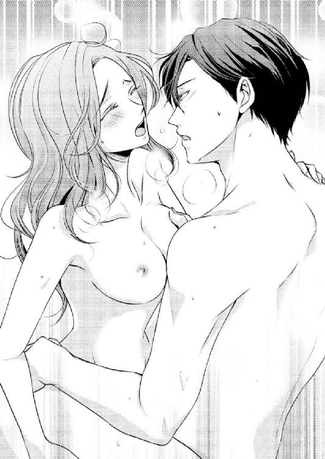
涙が出そうなほど嬉しい言葉は、同じく達してしまいそうな彼の、ちょっと苦しげな声で囁かれる。
全身がこの悦びを受け入れ、恍惚感が訪れる。ぴくりと震えた身体は刹那硬直するが、ふわりとした浮遊感と共に雄大の腕に抱きとめられた。
「......離さ......ないで......」
夢見心地で零れる言葉。
離れたくない。このままずっと、彼に抱かれていたい。
ふと彼が、桃香に、眠らずこのまま抱かれていたいと思ってもらいたい。そう口にしていたことを思い出す。
どうやら桃香は、すっかり彼の虜にされてしまったようだ。
心も......身体も......。
この、片桐雄大という、聖人君子に。
「......大好きです......雄大さん......」
桃香の前でだけ、聖人君子ではなくなりかける、この男に────。
第７章 ふたりだけのセオリー
抱かれたあとの、まどろみあう時間が好きだ。
快感にとかされた身体をシーツに預け、心地好いけだるさに身を委ねる。
一緒にいるのは、今まで自分の身体を隅から隅まで愛してくれていた人だ。
彼の腕の中で感じるまどろみは、最高に幸せだと桃香は思う。
今、余計な考えはなにも頭に浮かばない。昔は、腕枕をしてくれている腕は痺れないだろうか、頭を載せて寄りかかっている胸は重くはないだろうか、もたれかかっていたら彼は眠れないのではないか。そんな心配が頭をよぎることもあったというのに。
「桃香さん、眠ければ眠っていてもよいのですよ」
囁く声は穏やか。頭と身体を預ける胸は逞しく心地良い。身体に回されている腕は、しっかりと桃香を包みこんでくれているのが分かる。
この安心感は、なんだろう......
頼っても寄りかかっても、どんな我儘を言っても許されてしまいそう。
ぼんやりと瞼を開くと、瞳の中に微笑む雄大の顔が映りこむ。どうやら桃香は眠っていたらしい。熟睡をした感覚はないので、この気持ち好さにつられてウトウトしてしまっただけなのだろう。
雄大が取り戻した欲望の赴くまま身体を重ね、昂りが冷めやらぬままくちづけを続け、ほどなくして再び求められた。
何度でも感じてほしいの言葉どおり、雄大はどこまでも桃香を快楽の中へ連れて行ってくれる。
甘い熱に浮かされ果て、浅い眠りに入っていた桃香を、彼はずっとベッドの中で抱き寄せてくれていたのだった。
「疲れてしまいましたか？ すみません。僕が考えなしに夢中になってしまったせいですね」
「謝らないでくださいっ......」
雄大が夢中になったと言うなら、桃香も快感をもらうことに夢中になっていた。その結果、彼女だけがウトウトとしてしまったのだから、どれだけ翻弄されていたか考えるだけでも恥ずかしい。
「雄大さんは......疲れていないんですか......？」
彼を見上げてぽつりと聞いてみる。こういった行為は、男性のほうが運動量も多いと聞く。途中からまったく雄大の思うがままになってしまっていた自分を思い返し、桃香は絶対に雄大のほうが疲れているはずだと確信する。
「桃香さんに触れていたなら、疲れなど忘れますよ。貴女をもっと愛したくて、身体が先走ってしまうばかりです」
「あ......ありがとうございます......」
あからさまな愛情表現に照れくさくなってしまうけれど、嬉しい言葉ではある。納得したように礼を口にしたが、雄大は十代の頃から基礎体力を養い、今でも維持しているのだから、桃香よりも体力があって当然だろう。
（ほんわりしてて、とてもマッチョには見えないのに。分かんないもんだよね）
雄大を見つめ、つい手を添えた胸板を撫でてしまう。ほどよい筋肉、しなやかな硬さ。味噌汁の鍋を持ってにこにこしている彼からは、想像もつかないほどの逞しい体軀だった。
胸から臍の辺りまでを撫でさすっていると、雄大が桃香の後頭部を押さえてひたいにキスをする。
「どうしたのですか。桃香さんからねだってくれているのですか？」
「えっ？ あ......、そうじゃなくて......」
「違うのですか？」
なにも言わずに彼の身体を撫でていたので、不思議に思って聞いたのだろうか。それとも本気でねだっていると思ったのだろうか。どちらにしろ、桃香が否定をすると雄大はちょっと寂しそうな目をした。
この目に桃香は弱い。だから慌てて隠れた本音を口にしてしまう。
「あ......あながち、間違いではないですけど......」
はにかみつつ認めると、雄大は嬉しそうに笑って彼女を抱きしめた。
「嬉しいです。桃香さんに求めてもらえるなんて。もう、今夜はベッドから出しませんからね。ついでに桃香さんの部屋に置いてあるベッドは撤去してしまいましょう。そうすれば、毎日僕の所へ来てくれる」
「もう、ズルイこと考えますねっ。びっくりです」
「イヤですか？」
「全然っ。くるな、って言われても、潜りこみに来ます」
積極的な態度が嬉しかったのだろう。雄大は桃香の唇をさらい、くちづけたまま彼女を仰向けに組み敷いた。
今日は、何度このベッドで唇を合わせたのだろう......。
思い出そうとしても、もう、思い出せないくらい。
「桃香さん、喉は渇きませんか？ 飲み物を持って来ましょうか。お腹がすいたようでしたら、なにか作りますよ」
夕方ベッドへ倒れこんでから、ただひたすら抱き合っていた。ベッドサイドの時計を見ると、二十時を過ぎている。
雄大は桃香を気遣ってくれたのだろうが、桃香自身も雄大が空腹ではないか心配になってしまうくらいの時間だ。
「なんというか、胸がいっぱいで......。ついでにお腹もいっぱいっていう感じ。なにか飲む物が欲しいかな、って思うくらいです。雄大さんこそ、お腹すいてませんか？」
「僕は桃香さんを抱くことができた喜びで全身がパンパンですよ。では、とりあえず飲み物をお持ちしましょうか。僕も興奮しすぎて喉が渇きました」
正直すぎる感想がくすぐったい。桃香は「私もです」と言ったあとに、感じてばかりいて声を出しすぎたから......と余計なひとことを付け加えかけ、慌てて言葉を吞みこんだ。
「あっ、じゃあ明日の目玉焼き、二個にしましょうかっ。明日になれば、お腹すいたって感じるかもしれませんよ」
「明日の朝は作らなくてもいいですよ。日曜日ですし。桃香さんもゆっくりしてください」
「でも、毎朝作る約束で......」
「僕が作らなくても良いと言った日は、作らなくても良いのですよ」
「でも......」
「分かりました......では......」
自分の作った目玉焼きが雄大のためになっていた。それを知った桃香は嬉しくてしかたがない。
そんな気持ちを知ってか知らずか、雄大はチュっと桃香の唇にキスをしてひたい同士をくっつけた。
「明日の朝、目玉焼きを作れなくなるくらい、桃香さんを蕩けさせてしまおうと思います。......蕩けさせるように、頑張ろうかと」
「ゆっ......」
桃香は目を見開いて赤くなってしまった。なんということを平然と言ってくれるのだろう。
だが......、自分自身、蕩けてしまいそうな予感はある......。
心ではそうやって白旗を上げつつ、桃香はわずかな反抗を試みた。
「じゃあ、明日の朝は、雄大さんのお味噌汁は食べられないんですか？」
「お味噌汁、ですか？」
「はい......。だって、そんなに頑張ってくれたら......、雄大さんだって、日課のお味噌汁を作るのが面倒になるくらい疲れちゃうんじゃないかなって......」
「桃香さんが食べたいとおっしゃってくれるなら、疲れたから面倒だと思わない程度に、頑張ろうと思います」
真面目な顔で凄いことを言われてしまう。彼の反応は相変わらずだ。桃香は思わず噴き出しかかってしまった。
「なんです？ 笑いだしそうなお顔になっていますよ。からかったのですか？」
「ごめんなさーい」
「桃香さんならばよいです」
両手で桃香の髪をくしゃくしゃっと混ぜ、そのひたいにキスを落としてから、雄大はベッドを下りる。さっき脱ぎ捨てた際、ベッドの端に引っかかってしまっていたシャツを手に取り、袖を通しながら寝室の照明を点けに向かった。
ずっと部屋の薄暗さに慣れていた目に、明るい光が入りこむ。思わず瞼を閉じ両手で顔を覆った桃香の耳に、来客を告げるインターホンの音が聞こえてきた。
「こんな時間に誰でしょう......。宅配などでしたら、コンシェルジュデスクで預かってもらうように手配しましょう。今は、誰も部屋に近づけたくない。......あ、飲み物を持ってきます。待っていてください」
「はい......」
手で顔を覆ったまま返事をする。ふたりきりですごす部屋に誰も近づけたくないという彼の気持ちが、こそばゆい感じがした。
とても満ち足りた気持ちになる。ベッドの中の雄大は、まるで別人のよう。決して荒々しくはないけれど、力強くて逞しくて、大きく大きく桃香を包みこんでくれる。
（見かけによらず体力があるせいか、タフだよね......。やっぱり、もう一回くらいしちゃうのかな......。いや、雄大さんならニコニコしながら〝僕、疲れてませんから〟とか言いながら二回くらい......ってっ、なに考えてんの私っ）
手の中で口元が緩む。自分の想像が恥ずかしい。ひとりで照れて身体を火照らせていると、インターホンで話す雄大の声が聞こえてきた。
ドアを開けたままなので、他に物音がないせいか話し声が大きく聞こえてくる。
「康介？ どうしたんだい？ ──ああ、そうか。嬉しいけれど、今、ちょうど取りこみ中でね。......うん、そう。桃香さんだよ」
桃香は顔から手を離し、目をぱちくりとさせる。
彼はいったい、なんの話をしているのだろう......。
「残念だけど邪魔はされたくないから、今日は気持ちだけもらうよ。......大丈夫だよ、ホットケーキより桃香さんのほうが美味しいから」
反射的に上半身が跳ねて飛び起きた。まどろみも照れも吹っ飛んでしまった気分である。
（な......なにを言ってるんですか、雄大さんっ!!）
雄大は笑いながらインターホンを切ったようだ。その後、キッチンへ移動したのか冷蔵庫を開閉する音などが聞こえてくる。
ほどなくして、両取手付きのトレイにミネラルウォーターと緑茶のペットボトル、グラス二個を載せて戻ってきた。
「お待たせしました、桃香さん。......どうしたのですか？」
身体を起こしたまま啞然としている桃香を見て、雄大は首を傾げる。トレイをベッドサイドのテーブルに置き、クスッと笑った。
「綺麗な胸が丸見えですよ。急に大胆になりましたね、僕は嬉しいですけれど」
「......ぇっ......？ あっ......！」
勢いで身体を起こしたので、毛布を引き寄せる心の余裕もなかった。上半身をぺろりと出したまま、ポカンとした顔を見せてしまったらしい。
桃香は慌てて毛布を引きよせ、それを抱きしめたまま慌てて口を開いた。
「ゆ、雄大さんっ、なにを話してたんですかっ」
「なんでしょう？」
「さっきの......あの......、来てたのって、康介さんなんですよね？」
「聞こえていましたか。ええ、取りこみ中だと言ったら、『相手が桃香さんじゃなかったら軽蔑する』と言われたので、桃香さんだと言いました。そうしたら『やっぱり兄さんだ。尊敬するよっ』って張り切って言われてしまいました。なんだか照れますね」
「照れポイント、ソコじゃないですっ！」
早い話、取り込み中のひとことで、康介には今ここでふたりがなにをしているかを知られてしまったということだ。
「気にしなくても大丈夫ですよ。男兄弟なんてこんなものです。昔は両親の留守中に誰かが彼女を連れてきたら、暗黙の了解で他の兄弟は外出をしたものです」
楽しげに笑いながら、雄大は緑茶とミネラルウォーターをそれぞれグラスに注ぐ。両方を差し出され、どちらか好きなほうを取ればいいのだと思い、桃香は緑茶のグラスを取った。
「ホットケーキを作ってきてくれたらしいのです。けれども今日のところは断ってしまいました。......あ、桃香さんは食べたかったでしょうか？」
「ホットケーキ？」
「僕が好きなので、時々作って持ってきてくれるのですよ」
「へえ......。それって、あれですか。やっぱり、お菓子用の特別な薄力粉とか、一個売りしてる高そうな卵とか、生クリームとか、そういう物で作るんですか」
「いいえ。製粉メーカーで販売しているホットケーキミックスです。お気に入りのがあるのですよ。シロップも本格的なメープルシロップなどではなく、メープル風ケーキシロップという雰囲気の物のほうが好きです」
......なんとも、凄く普通だ......。
これならパティシエではなくたって作れてしまう。
いっそこれからは、康介に代わって自分が作ってあげたいと、桃香は思った。
ベッドの端に腰を下ろし、雄大はミネラルウォーターのグラスをかたむける。
とても楽しそうに話をする彼を、桃香はジッと見つめた。
時々、彼は自身が置かれているセレブな環境と、まったくかけ離れた思い出話をする。そんなときは、いつも楽しそうだ。
まだ起業する前の話をするときもそうだ。高専の小さな空き教室を借り、缶コーヒーで徹夜をして、仲間と未来と輝く希望を持っていた頃のこと。
〝普通〟という、もっとも大切にすべきだったものを普通に持っていたころの話をする雄大は本当に嬉しそうで、聞いている桃香まで嬉しくなってくる。
それを捨てて栄華だけを手中にしたとき、彼は同時に絶望も受け取っていた。そしてその絶望は、見えないところから徐々に彼を蝕み始め、食い尽くそうとしていたのだった。
そんな彼に忘れていたものを思い出させ、捨てていたものを取り戻させる力となったのが桃香であり、彼女がくれた気持ちと素朴な目玉焼きだった。
それだから雄大は、最初からあんなにも目玉焼きにこだわっていたのだろう。
「飲まないのですか？ もしかして、ホットケーキが食べたかったのでしょうか？」
グラスを持ったまま口をつけない桃香を見て、雄大が問いかける。そしてグラスをトレイへ戻し、身を乗り出して彼女を覗きこんだ。
「そうじゃなくて......、あの、雄大さんが食べたかったんじゃないかなって」
「康介にも言いましたが、桃香さんのほうが美味しいです」
「お腹はふくれませんよっ」
「その代わり、違うところが膨れますし」
「そっ、そう言ってもらえると嬉しいです、はいっ」
これ以上なにか言ったら、どこが膨れるのかまで説明をされてしまいそうだ。
意識を他のことにそらそうと、グラスに口をつける。思った以上に身体が水分を欲していたらしく、グラスはすぐにカラになってしまった。
水分を摂ると、全身にスーっとした清涼感が広がる。大きく息を吐く桃香の手から、雄大がグラスを取った。
そのグラスをトレイに戻し、シャツを脱ぐ。桃香の横へ身を寄せ、彼女を抱きしめてゆっくりとベッドへ身を沈めた。
「もう食べられちゃうんですか？」
「はい。駄目ですか？」
「食欲旺盛だと思います」
「すみません。桃香さんが美味しすぎるからです」
抱かれるのがイヤでそんなことを言ったわけではない。桃香だって、彼に抱かれるのは心も身体も満たされて気持ちが好い。ストレートに求めてもらえるのが嬉しくて、ちょっと焦らしてみたかっただけだ。
「では、そんなことをおっしゃる桃香さんが、ご自分から抱きついてくれそうなお話をひとつ」
桃香は小首を傾げて雄大を見上げる。彼はふわりと優しい微笑みを浮かべ、彼女の頰を撫でた。
「半年前の仔猫の件です」
「仔猫......？ あの、雨の日に一晩だけ家で世話をした......」
「はい。あの子は今、百合さんの所にいますよ」
「え......？」
「桃香さんが泣く泣く戻しに行ったあと、僕が拾いました。僕が飼ってもいいと思ったのです。同じように、貴女に心をかけてもらった者同士ですから。ですが、百合さんにそんな話をしたら、彼女が飼ってくれることになったのですよ。旦那さんも動物好きなので、ふたりにかわいがってもらっています。半年たって、だいぶ大きくなりましたよ」
またもや驚くべき真実を口にする雄大を、桃香は言葉もなく見つめた。
たった一度、わずかに寄せた気持ち。
それを雄大は、彼自身と、仔猫の分まで受け取ってくれていたのだった。
そして半年前は仔猫を、今は桃香を。共にぬくもりを欲しがって泣いていた心を、拾い上げて抱きしめてくれた......。
「今度、会いに行きましょう。男の子なのですが、とても人懐こくてかわいらしいですよ。ですが、僕よりも先に桃香さんに抱きしめてもらっていたのだと考えてしまうと、やきもちを妬いてしまいそうですね」
雄大は、自分は桃香に救われたと言ってくれた。
けれども、救われたのは雄大だけではない。
桃香だって、彼に救われたのだ。
たくさんの、優しさと愛情で......。
「雄大さん......！」
桃香は雄大に強く抱きつき、そして自分から唇を重ねた。
弾む気持ちを表すかのよう、自分から舌を挿し入れていく。
彼の唇が笑んでいるのが分かる。桃香の舌がすぐに絡め取られることはなく、彼女から施される舌戯を、雄大は感激しながらしっかりと受け取ってくれた。
こんなにも夢中になって、自分からキスをするのは初めて。
唇を重ねているあいだ、雄大の両手は桃香のふくらみを摑み大きく揉みしだく。彼の手の中で強弱をつけて形を変えられ、じんわりとした快感がそこから広がり始めた。
雄大がしてくれるキスを真似て、舌先で口腔内をくすぐる。応えてくれた舌を吸い上げると、同時に両の乳首を指先で摘まみ上げ、ひねられた。咄嗟に声にならない喘ぎが大きな吐息と共に吐きだされ、唇が離れる。
「桃香さんにそんなキスをされてしまっては、理性が飛んでしまいそうですよ」
冗談だろうか。本気だろうか。けれどもいっそ、理性が飛んでしまった彼を感じてみたいとも思う。
肩から身体を後ろ向きに返され、桃香の動きに合わせて雄大の唇が肌を這っていく。首から肩へ。髪を寄せて現れるうなじへ。うつ伏せになった状態で、唇は背筋を辿った。
「......あっ......んっ......」
くすぐったいのとは違う、ぞわぞわっと肌が粟立つような甘ったるい電流が走っていく。
ときおり肌に吸いつきながら、雄大の両手は脇腹から腰を撫で、尻の隆起を探る。丸みに沿って動いた手が、やんわりとなだらかな丘を揉みこんだ。
「あっ......やっ、雄......」
ピクリと顔が上がる。同じ揉まれるのでも、乳房などとはかなり感じが違った。
手を追って唇が丸みを辿っていく。あまり触られることのない部分への愛撫は、なんとも言い難い羞恥と興奮を生む。短い喘ぎを漏らしながら、桃香はその歯痒さに腰を揺らした。
「膝をついて......」
囁きで指示をする声は穏やかで冷静だ。こんなにも興奮してしまっているのは、もしかしたら自分だけなのではないか。そう感じて、桃香はより恥ずかしくなってしまう。
膝をつき腰を上げると、尻の双丘を開かれ中央の溝に舌が落ちた。
「やぁ、んっ......」
花芯に舌を感じることはあっても、後ろから舐めなぞられるというのは初めての感覚だ。尻側からということにどうしてよいのか分からなくなって、つい腰を震わせ腕を張り伸ばし、四つん這いになってしまった。
上半身が上がったので、腰はわずかに落ちる。そのついでに舌が離れるかと思いきや、雄大はなんの躊躇もなく両尻を押さえたまま、前から後ろまで何度も縦線を舐めなぞった。
「あっ......あっ、雄大さんっ......ダメッ......」
「それは、イヤだから駄目なのではなく、恥ずかしいから駄目なのだと取っていいのですよね」
「わっ......分かってるなら、言わな......あぁ、ンッ！」
唇が離れたと思うと、今度は指で秘芽の周囲を擦られる。蜜の潤いで滑りやすくなっているせいか、雄大の指はとても滑らかに小さな突起をこねくり回した。
そうしながら、彼は枕の下からすでに正体の知れた四角い包みを取り出す。いったいここに何個隠されているのだろう。何気なくそんなことを考えながら包みの行方を目で追った。
歯で包みの口を破る雄大を見つめていると、彼と目が合い、にこりと微笑まれた。
「着けるところ、見ていたいのですか？」
「い......、いえっ、結構ですっ」
慌てて顔を前へ向ける。クスクスと笑う声が聞こえ、秘部から彼の手が離れた。
ほどなくして、尻の谷間に熱い塊があたる。それはすぐ、吸いこまれるように桃香の蜜窟へ侵入した。
「んっ......ぁ、......あっ！」
後ろから埋めこまれていくという感覚。挿しこまれているというよりは、押しこまれていると身体が感じてしまうのは体位のせいだろうか。
「雄......大さっ......あっ、あぁっ......！」
力強く出し挿れされる滾りは、桃香の身体を大きく揺さぶる。両腕をしっかりと着いていなくては崩れ落ちてしまいそう。
彼がリズミカルな抽送を繰り返しながら腰を押しつけるたび、肌同士がぶつかる音を響かせる。桃香の背に覆いかぶさり、雄大は彼女の顎を捉えて顔を自分のほうに向かせ、視線を合わせた。
「綺麗な顔をしていますよ......。とても淫妖で、かわいらしい......」
「あっ......あっ、やっ......ゆう、だいさぁ......」
「ずっと......、貴女が情欲に囚われる顔を見たい......。僕だけに見せてください......、ずっと......」
「雄大さっ......あっ、あぁっ！ オク......あた、る......っ......！」
体位が変われば蜜窟の擦られかたも変わる。正面から抱き合っていたときとは違う箇所が集中的に突かれ、滾りの切っ先が奥をえぐった。
振り向かされたまま唇が重なる。あえぐ舌を搦め吸い取られたかと思うと、強く唇でしごかれた。
「んっ......ん、ハァ......あっ！」
電流が走り、ゾクゾクと上半身が震える。舌を引っこめることもできず、彼が舌をしごくたびに溢れる唾液が音をたてて滴り落ちた。
雄大の両手が後ろから乳房を鷲づかみにして、大きく揉み回す。少々乱暴にも感じる仕草が彼の欲情具合を教えてくれているようで、桃香まで興奮を煽られた。
顎から手が離れても淫猥なキスは続く。ふと、男性が女性の中を擦り上げているときというのは、こんなふうに感じるのだろうかなどと考えてしまう。それほどの気持ち良さだった。
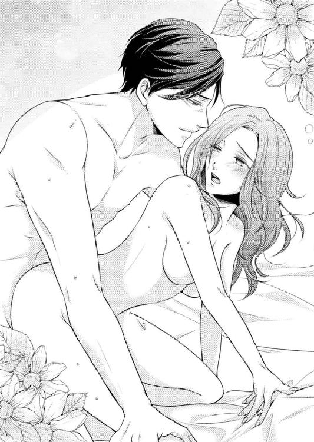
乳房を摑んだまま上半身を起こされる。膝立ちになった状態で強く突き上げられ、自分から唇を離して喜悦の声をあげることしかできなくなってしまった。
「ああぁっ！ やっ......やあぁっ！」
不安定な体勢で猛然と突かれても、身体を密着させられているので崩れることはない。片手で乳房を摑んだまま、もう片方の手が繫がった部分へ伸び、潤いがしたたる秘部を手のひらで包みこねる。
「あっ、あ......ダメッ......ダメぇっ......んっ、ぁあっ！」
桃香の身体はどうにかなってしまいそうだ。雄大の腕の中で全身がうねり、腰が揺れる。そんな自分を淫らで恥ずかしいと思うより、目の前に迫ってきている恍惚感を手放したくなくて、桃香は自ら腰を押しつけてしまった。
「雄......大、さぁぁ......あっ......！」
「はい......、もっと、欲しいですか？」
「やっ......あ......！ あっ......そん、な......あンッ！」
「欲しいのなら、欲しいと言ってください。貴女が欲するものは、なんでも差しあげたいと言ったはずですよ......」
「あ......あっ......」
絶頂寸前の歯痒さ。なかなか手に入ることのない最後の瞬間に、全身が暴れ出してしまいそうだ。
雄大は桃香をうつ伏せにしてシーツに戻すと、片足だけを摑み、彼女を横向きにして貫き続けた。
「桃香さん......、さっきの返事をください......。貴女のこんな淫らな姿を見られるのは、......ずっと、僕の特権にしてもよいですよね......」
「あっ......ぅンッ......あぁっ！」
「僕は、貴女だけが欲しい......。心も身体も......。一生......」
「雄っ......あっ！ 欲し......もっとぉ......あぁっ！」
欲した言葉のまま、雄大が攻め入ってくる。目の前にあった恍惚感は、最後のきっかけを得たようにすぐさま桃香を包みこんだ。
嬌声をあげて、桃香は雄大と共に絶頂を迎える。
彼に抱きしめてもらう腕の力強さに幸せを感じながら、ぼんやりと、彼が欲した答えの意味を考えた。
心も身体も、一生、桃香のすべてが欲しいと言った意味を────。
土曜の夜から抱き合っていたふたりは、翌日の日曜も離れることはなかった。
繰り返される愛撫と甘い囁きは、脳漿が蕩け落ちてしまうのではないかと思うほどに桃香を陶酔させる。
このまま雄大の肌に溶けこんでしまうのではないか。彼に触れている手は、吸いついて離れなくなるのではないか。本気でそう思わせるほどの一体感が全身を満たした。
ずっと雄大の腕に抱かれていたい。そんな夢ばかりを見ていた。
──だが、夢は、いつかは終わりを迎えるのである......。
月曜日、という、悪魔によって。
「誰かに、『仕事へ行くな』と言いたくなったのは初めてです」
深い溜息をつき、雄大は目玉焼きに醬油をたらす。
いささかたらしすぎではあるが、心配はいらない。彼の目玉焼きはご飯の上。このまま混ぜて食べてしまえば気にはならない。
それでもかけすぎを気にしたのか、雄大は醬油差しを手にしたまま考えこむ。再度溜息をつくと、醬油差しをテーブルへ戻し、その手で眼鏡の横をクイっと上げた。
実に雄大らしくない様子が窺える。いつも通りに彼と向かい合って朝食の席に着いていた桃香は、味噌汁の椀を手に取ってクスリと笑った。
「私も、仕事に行きたくないって思ったの、久し振りですよ」
彼女の言葉を聞いて、雄大は桃香に顔を向け、きまり悪そうにはにかんだ。
「すみません......。大人げのないことを言ってしまって」
もしかしたら、桃香が気を使って彼に話を合わせてくれたのだと思ったのかもしれない。ふたりが抱き合う幸せな時間を断ち切ってしまったのは、週明け仕事始めという、桃香の現実なのだから。
不満らしきものを口にしてしまったのは雄大ではあるが、ベッドからなかなか出たくなかったのは桃香のほう。かえってそんな彼女に踏ん切りをつけさせたのは、ベッドを先に出た雄大のほうだった。
「朝食の準備をしますね。桃香さんが遅刻をしないように」
それなので、雄大が不満を口にしたとき、桃香は出勤を億劫に思う自分に彼が合わせてくれているのではないかと思ってしまった。
「予定がないなら、有給を取って休んじゃいたいくらいです。でも今日は......、キャンペーンリサーチの報告会議があるし......」
「お忙しそうですね。帰りは遅くなりそうですか？」
「ぜっ、絶対、定時で帰ってきますっ」
つい力が入ってしまったのは、遅くなりそうかと聞いたときの彼が寂しそうに見えてしまったからだった。
自分がいないと寂しいと思ってくれている。そう考えるのは自惚れだろうか。そんな反省をしかかったとき、雄大はにこりと目を虹の形にした。
「嬉しいです。夕食、なにか食べたいものはありますか？ 張り切って作りますよ」
なんとなく、会話の内容が男女逆ではないかと感じてしまう。
それでも好きな人が自分を待っていてくれるのだということがとても嬉しく、雄大の笑顔がなんとも眩しい。
「雄大さんが作ってくれるものなら、なんでもいいです」
自分の言葉に照れつつ、桃香は味噌汁の椀を口につけて視線を雄大へ向ける。彼は無邪気な笑顔から一転、とても穏やかな微笑みを湛えて彼女を見つめていた。
毎日飲んでも飽きない雄大ブランドの味噌汁の味も、彼の微笑みを前にすると味が分からなくなってしまう。
それほどまでに、彼の存在は桃香を魅了するものに変わっていた。
「でも......あれですね......。いつも雄大さんにばかり作ってもらって、申し訳ないですよね。......私も、やったほうがいいかな......とか」
「そんなことは気にしないでください。桃香さんには毎朝目玉焼きを作っていただいていますし、僕は毎日それを食べることができて幸せです。──これからも、ずっと、食べられるといいな、と......思います」
味噌汁の中でネギを摘まんだまま、箸が止まる。雄大の言葉を聞いて、一昨日の夜、愛し合っているときに彼が口にした言葉を思い出した。
────僕は、貴女だけが欲しい。心も身体も、一生......。
昂りと恍惚感に意識を奪われ正確に考えることができなかったけれど、あれは言葉どおりに取れば、一生桃香と一緒にいたいという意味である。
あのあと彼は、その言葉についてふれてはこなかった。それなので話題にするきっかけを失ってはいたが、今口にした言葉も、同じ意味合いを持っているように考えられる。
──だとすれば、これは、プロポーズなのかもしれない......。
急激に鼓動が高鳴りだす。身動きもできず、桃香は椀と箸を持ったまま固まってしまった。
（雄大さんが......、私と......？）
これは思いこみではないか。もしも勘違いだったなら、とんでもなく恥ずかしい。
自分を戒めながらも、期待をするように鼓動は騒ぐばかり。
どうしたらいいだろう。どう答えたら......。
雄大が席を立ち、桃香の横へやってくる。彼女の手から椀と箸を取りテーブルへ置くと、両手でその手を握りしめた。
「雄大さん......」
彼を見つめて身体を向ける。桃香を見つめ返し、雄大は床に両膝をついた。
「桃香さん、すみません」
「......え？」
「僕は、少々調子にのって、貴女を迷わせることばかりを口にしてしまっているようです。許してください」
「そんな......あの......」
愛し合っているときに求められた答えを出せなかったのは、愉悦に浮かされていたのだからしょうがない。けれども今の場合は返事をできたはず。
おかしな深読みはせず自分の気持ちをストレートに表現すれば、すぐに答えは出る。しかしそれを、桃香はためらってしまった。
雄大は、彼女を困らせてしまったと感じたのだろう。
「現実的に考えれば、桃香さんのほうが不安は多いことでしょう。年齢の差を考えても、浮ついた気持ちのまま答えられることではないと思います」
「そんなこと......私......！」
桃香は慌てて口を挟む。その瞬間、強く手を握られて言葉を吞みこんでしまう。
口では否定をしようとしても、戸惑いは誤魔化せない。そんな桃香に、雄大はいつも通りの微笑みをくれる。
「お返事は急ぎません。ですが僕は、そのつもりで貴女に接していきたいのです。桃香さんが、なんの不安も戸惑いもなく僕の気持ちに応えてくれる日が来るよう、頑張りますよ」
「雄大さん......」
「女性の気持ちというものを、少々無視した申し出の仕方をしてしまったと反省しています。自分の感情だけを優先してしまって、申し訳ありません。......やはり、ストレートに花束と指輪を持って申し込むべきでした」
照れくさそうに笑い、雄大は桃香の手を離して立ち上がる。自分の席へ戻り、何事もなかったかのように食事を続けた。
「今夜はマンション内のスパにでも行きましょうか。ご案内しますよ。広くて気持ちがよいですよ」
「あ......はい......」
気まずい空気にならないよう気を使ったのか、雄大はかねてから桃香が行きたがっていたスパの話題を持ち出す。咄嗟に返事はしたが、桃香も彼に気まずさを感じさせないようにと思って、つい調子にのってしまった。
「で、でも、今夜はお部屋のお風呂でいいかなぁ。ここのだったら、雄大さんと一緒に入れるし......」
「えっ？ いいのですかっ！」
いきなり雄大が立ち上がる。桃香は食事を再開しようとしていたのに、また中断させられてしまった。
再び近づいてきた雄大は、先程と同じように彼女の両手を握り、自分の胸にあてる。
「楽しみにしています。なにか入浴剤でも用意しましょうか。バスオイルでもバブルバスでも、お好みの物がありましたら言ってください」
「あ......特にそんな......。もっ、もうっ、ゆうだいさんっ、なんでそんなに嬉しそうなんですかっ」
すでに肌を重ねた仲ではあるが、一緒の入浴は未経験だ。
雄大には一緒に入りたい気持ちがあったに違いないけれど、桃香が恥ずかしがるのではないかと思って遠慮をしていたのだろう。
それが今、桃香のほうから「一緒に」という言葉が出たので嬉しかったのだろう。
「嬉しいですよ、もちろん。桃香さん、お風呂はお好きですよね？」
「は、はい。あったかいし、気持ちいいし......」
「僕も好きですよ。好きな人と気持ちよく入浴ができたなら、もっと気持ち良いではありませんか。ですから、一緒に入浴を許していただいてとても嬉しいです」
分かるような分からないような説明。けれども雄大と一緒なら、きっといつもの何倍もお風呂が気持ち良いような予感がする。
（別の意味で......気持ち良いかもしれないし......）
そうなる可能性は無きにしも非ず。頭をよぎった不埒な妄想に口元が緩みそうになり慌てて俯くが、すぐに彼の手に顎をすくわれた。
「出勤前でメイクも済んでしまっていたので遠慮をしていたのですが、我慢できません。......キスしてもよいですか？」
「そんな遠慮、しないでくださいっ」
雄大らしい遠慮だと感じつつ、ちょっと怒った声を出す。すると、彼はクスリと笑ってから桃香の手を離し、代わりに彼女の身体に腕を回した。
「好きです。桃香さん」
甘い声が耳孔をくすぐる。うっとりと瞼を閉じると、すぐに彼の唇が重なり幸せな気持ちに包まれた。
朝から蕩けてしまいそうなキスは、出勤時間ぎりぎりまで続けられる。
──食事をしている余裕は、ないようだった。
プロポーズは遠回しではあった。
けれども、彼がくれた言葉の意味には簡単に気づけるものだったのだから、結果的に桃香ははぐらかしてしまったことになる。
（そんなつもりじゃなかったんだけどな......）
ふとキーボードを打つ手を止め、桃香はパソコンのモニターを見つめた。
これを打ちこめば、今日の仕事は終わり。正直なところ、出社したときから早く帰りたくてたまらない。必然的に仕事の進みも早かった。
一分一秒でも、早く雄大の元へ帰りたい。「おかえりなさい、桃香さん」あの声と笑顔で、迎えてほしい。
彼の腕で、抱きしめてもらいたい。
十日ほど前の自分と比べると、随分と気持ちの持ちようが変わってしまっていると思う。
以前の桃香は、寂しい自分を真正面から見つめず、恋愛放棄の鎧を着たまま自堕落にひとり酒を楽しむ。そんな女であったというのに。
彼女を変えてくれたのは、間違いなく雄大だ。桃香の心は今、彼への想いで満ち満ちている。
──プロポーズを断る理由など、ないはずなのに......。
「......十五歳年上で......、大企業の創業者で、......いろいろ、私とは違っていて......」
言葉にしてみると実感できる。彼は、以前までの桃香が関わり合いになることなどまったく想像もしていなかった人物だ。
そんな人が今、桃香に想いを寄せ彼女を必要としてくれている。
信じられない。そんな大きな存在の男性と、自分が結婚などしてもいいものなのだろうか。これは、普通では考えられない恋愛なのではないだろうか。
何気なく指がキーボードを叩く。雄大のことを考えながら、なんとなく辞書検索に文字を入れた。
入れてしまったのは、心の隅に引っ掛かっているのに手つかずになっていた言葉だ。
──出てきた文字列に、桃香の手は止まり目が見開かれた......。
「和泉さん、ちょっといいかな」
そのとき、ポンっと肩に手が置かれる。振り向かなくても声だけで誰なのかは分かった。だが桃香は、あえて振り返り確認をしてから「はい」と返事をし立ち上がる。
「話があるんだ。来てくれる？」
今度は彼女の返事も待たず、守屋は桃香の背を押して、別室へと促した。
正直なところ、ついて行きたくはない。
もう間もなく定時だし、この時間にややこしい話はごめんだ。
守屋の呼びだしかたといい雰囲気といい、明らかに仕事の話ではないように感じる。しかし、彼は役職的に上の人間だ。職場であからさまに拒絶した態度を見せるわけにはいかない。
桃香は黙って守屋の後ろにつき、オフィスを出た。
連れていかれたのは、同じ二階フロアの端にある小さな応接室だった。主に一階店舗に来店した客用に使われているが、頻繁に使用する部屋ではない。
こんな場所に連れてくるということは、間違いなく仕事の話ではないのだろう。
「なんのお話ですか？」
桃香は入室してすぐに守屋へ問いかけた。
部屋の中央には小さな応接セット。守屋は座って話をしようと思ったらしく、ひとり掛け用椅子の前に立っている。
桃香は早々に終わらせて欲しい態度が見え見えになるように、閉めたドアの前で立ち止まっていた。
「用事があるんです。もし、仕事以外の話なんだったら......」
「もうすぐ定時だもんね。早く帰りたいんだ？」
どことなく言いかたに棘がある。桃香はわずかに眉を寄せた。
「先週は、一日の残業を除いて連日さっさと退社しているね。よほど早く帰りたい理由があるのかな？」
「......私の帰宅時間をわざわざチェックしているのは......、なにか理由があるんですか？」
桃香がイラついた声を出すと、守屋はゆっくりと歩み寄ってきて、彼女の前で腕組みをする。
「桃が誰と一緒に住んでるのか、気になった」
「どうして......」
「詳細は分からなかったけど、あの住所に住んでいるのは大きな会社の偉い人物だっていうじゃないか。どうしてそんな人と住んでいるんだ。おまけに間違いなく男だ」
「どうしてはこっちのセリフですよ。そんなこと......どうして調べたんですか？ いやらしい」
「桃を心配しているんだ。結婚をするというならよかったけれど、そんな身分の人なら年配の男なんだろうし。結婚とかじゃないなら......、まさか、愛人とか......」
「いい加減にして！ 関係ないでしょう！」
桃香はつい声を荒らげてしまってから、ハッとして手で口を覆った。室内にはふたりきりだが、大きな声を出せば廊下へ漏れてしまう。
「どうして結婚じゃないって思うんです......。歳の近い人とつきあって裏切られたから、いっそ自分を大事にしてくれそうな思いっきり年上の人を選んだとか、そんな可能性だってあるじゃないですか」
明らかな嫌味を込めてしまった。たかだか住所程度から、住民の情報が漏れるようなマンションではない。守屋の同居人に対するイメージは、企業の重役だから年配の男性なのだという漠然とした予想でしかないだろう。
過去を持ち出され蔑まれたのは守屋のほう。しかし、彼はなぜか皮肉をこめて口角を上げた。
「それはないだろう......。だいいち、桃らしくない......」
「私らしくない......？」
「桃は、恋愛にそんな打算的な考えかたはできない女だろう？ 常識の範囲内で恋愛をして、普通につきあって、型通りの結婚をする。そんな持論を持っていたじゃないか。それこそ、子どもができたから結婚をするなんて、順番が違う、おかしいって......」
仕返しのつもりではなかったのかもしれないが、桃香の皮肉に守屋も皮肉で返してきた。
確かに、二股をかけた守屋が今の妻とのあいだに子どもを授かってしまったとき、そんなことを言って彼をなじった覚えが桃香にはある。
「......当り前よ......おかしいじゃない。......元々結婚するつもりなんかなかったくせに、......子どもができたからって理由で、さっさと結婚して......。それのどこが常識的なの......。それのどこが一般的なの......。そんなの、世間一般的な常識から外れてるじゃないの......」
桃香は俯き、昔の想いを口にする。あの頃は酷く傷ついて、守屋がやったことをとても汚い間違ったことだと思っていた。
けれども......。
顔を上げ、まっすぐに守屋を見る。心を決めて、桃香は表情を和めた。
「それでも、和樹君は、こんな恋愛もありだと思えたんでしょう......？ だから、結婚したんだよね？」
彼女が急に昔のように下の名前で呼ぶのを聞いて、守屋は耳を疑ったことだろう。
気まずい別れかたをしてから、桃香は常に他人行儀だった。もちろん昔のように「和樹君」と呼んでくれることもなかった。
「ある意味......、私もそうなんだと思う......。きっと今、私が置かれている状況は、普通じゃない......」
出会いかたも再会も、これまでの経緯も、桃香が常識としていたものとはかけ離れている。
普通の交際をして、人に後ろ指をさされない恋愛をして、誰からも祝福される結婚をする。そんな一般的な常識には沿わないものが、今の自分に降りかかっている。
お酒を飲み、酔い潰れて、介抱してくれた男性と同居。そんなの、普通ではない。
「でも......、これも〝あり〟だなって、私には、きっとこれしかなかったんだなって、思えるの......」
十五歳も年上で、大企業の創業者で、聖人君子かと思えば、桃香には違う顔も見せてくれる、そんな人。
「きっとこれが、私にとっての恋愛の形になるんだって、思う......」
自分には、これしかなかった。
普通では考えられない恋ではあるけれど。こんな恋の形が、これからの桃香の持論になり得るものだったのだ。
今朝の桃香は、雄大からのプロポーズに迷ってしまった。けれど、そんな迷いなどもういらない。
......そう思わせてくれたのは、守屋に連れ出される前、何気なくネットで検索をした言葉の意味だった。
そこに、この恋のすべてを見たような気がしたのである。
彼の部屋で目覚めた日、雄大が言っていたではないか。
────躓く石も縁の端、そう思ってください。
その言葉を、桃香は、小さな縁も大切にすべきだくらいの意味だと思っていた。
しかしそこには、道を歩いていて躓いた小石も、自分となにかの縁で繫がっているのだという意味が込められている。どんな小さなことも、すべては不思議な縁の結びつきがあるのだ、と。
名も知らず、互いのなにも知らず、五年前に出会っていた雄大と桃香。
桃香は、ただ小さな気持ちをかけたことで雄大を救った。
そのまま二度と会わない可能性のほうが高いにもかかわらず、偶然にもふたりは半年前に再会した。
知らないところで仔猫がふたりの縁を繫ぎ、そして、十日前、三度目の出会いを果たす。
この偶然を運命と、不思議な縁の結びつきといわないなら、なんというべきだろうか。
雄大は、僕という小石に躓いたと思ってくれと言った。
だが、躓いたのは桃香だけではない。雄大だって桃香という小石に躓き、そして、その不思議な縁を切らぬように拾い上げてくれたではないか。
（雄大さん......）
たとえようのない愛しさがこみあげてくる。
とてもとても大きな遠回りはしたけれど、これが、ふたりの恋の形。
「誰もが認める、......セオリー通りの恋なんて、ないんだよ......」
やっと出た答えを口に、桃香は守屋を見つめた。
戸惑いも、蔑みも、なにもないまっすぐな気持ちで彼を見ることができたのは、いったいどのくらいぶりなのだろう。
桃香の心の変化が伝わったのだろうか。守屋は腕組みを解くと、口元をほころばせた。
「......桃は......、幸せになれるんだ？」
桃香は微笑んだまま、言葉なくうなずく。身体の力を抜き大きな息を吐いた守屋は、まるで大きな荷を下ろしたかのようだった。
彼は桃香の後ろにあるドアを開き、彼女に道を開ける。
「定時だよ。早く帰りなさい。和泉さん」
桃香は「はい」と返事をして、守屋の横を通り過ぎた。
「お先に失礼します。守屋ブロック長」
「幸せなのはいいけど、幸せボケして遅刻しないようにね」
「はい」
とてもスッキリとした気分だった。最後に見た守屋の顔が、心から安心したかのように見える。
桃香を裏切り気まずい別れかたをしたことで、彼も心に罪悪感や大きな迷いを抱えていたに違いない。
彼女が幸せになろうとしている姿を見て、彼もやっと、気持ちが軽くなったのではないだろうか。
きっとそうだ。桃香は、そう思いたい。
（帰ろう。早く......）
桃香はオフィスへ戻ると、デスクの整理を始める。定時から二分経過。もう一分だって、雄大の元へ帰る時間を遅らせたくはない。
いつにも増して帰り支度を急いでいる桃香の様子に気づいたらしく、菜摘が冷やかしに近づいてきた。
「桃香さん、なんですー？ 随分急いでますね」
「そうよー、急いで帰らなくちゃ。買い物をしていくつもりだから、そのぶんの時間が惜しいのよ」
「まーたコンビニで〝さきいか〟とビールですかー？ ひとり酒、楽しそうですねー」
そう言われた途端、桃香はピンっと彼女の鼻先を指で弾く。終業前に軽くメイクを直したばかりなのだろう。ファンデーションが鼻先だけ取れてしまったのではないかという不安を感じたか、菜摘は両手で鼻を押さえた。
ふふんと笑い、桃香は嬉々とした笑顔を見せる。
「失礼ね。ふたり酒よっ。まあ、買っていくのはビールじゃないけどね」
目をぱちくりさせる菜摘に「お先にー」と手を振り、オフィスを飛び出す。背後でやっと「えーっ！ 桃香さんっ!?」と絶叫する声が聞こえたが、桃香は立ち止まることも振り返ることもなく、一目散に階段を駆け下りていった。
クラウンシティ城北。
この超高級マンションに住むことが決まったとき、夢のようというよりは、冗談だという感覚しかなかった。
出入りするたび、本当に自分はここへ入ってもいいのだろうか、そんな思いでドキドキしていた。
けれど、今はそんなことを考える必要はない。桃香はここへ入らなくてはいけない。
──彼が、待っているのだから。
「おかえりなさいませ。和泉様」
ガラス張りの大きなエントランス。そこを入ると、いつものようにコンシェルジュが挨拶をしてくる。馴染みのない丁寧な口調で「様」を付けて呼ばれ、ずっと戸惑ってばかりいた。......しかし......。
「ただいまかえりました！ お疲れ様です！」
明るい声で挨拶を返し、桃香は小走りにエレベーターホールへ向かう。一瞬遅れて、コンシェルジュの「お休みなさいませ」という嬉しそうな声が聞こえた。
数人が乗りこむエレベーターに飛び乗り、素早く十七階を押して階数表示を見上げる。
途中途中の階で停まるのがもどかしい。一気に十七階まで行ってしまえばいいのにと自分勝手なことを思った。
片手に持っているスーパーの買い物袋を右手から左手に持ち替える。中に入っている品物を思うだけで、心が浮き立ってきた。
十七階に到着すると、ドアが開ききらないうちにエレベーターを飛び出す。行儀が悪いかと思いつつも廊下を走り、部屋のドアに手を伸ばした。
けれども桃香が開ける前に、ドアは中から開く。
「おかえりなさい、桃香さん」
現れたのは、桃香を迎えてくれる、愛しい笑顔だ。
彼女だけの、聖人君子。
「雄大さん！」
空いている右腕で雄大に抱きつく。こんな反応が返ってくるとは思わなかったのか、雄大も少し驚いたように彼女を片腕で抱き、ドアを閉めた。
「どうしたのですか、桃香さん。帰った早々抱きついてくれるなんて、嬉しいではないですか」
中へ入ってから両腕で桃香を抱きしめると、すぐに彼女が手に持つ買い物袋に気づく。
「なにを買ってきたのですか？ 必要なものがあったのなら、電話をくれれば買っておいたのに」
「駄目ですっ。私が買ってきたかったんです」
桃香は顔を上げ、雄大に微笑みかける。それと彼が買い物袋を受け取るのが、同時だった。
「雄大さん、私に、目玉焼きと、そしてホットケーキ、......一生、雄大さんのために作らせてください。私、ずっと、雄大さんの傍にいたいんです！」
次の瞬間、買い物袋が雄大の手から滑り落ちる。
中から姿を現したのは、ホットケーキミックスと、メープル風ケーキシロップだった。
どちらとも雄大が気に入っているメーカーの商品である。なぜこれが分かったのだろう、そう言いたげな目が桃香を見た。
キョトンとしている彼を見て、桃香はくすぐったい気持ちになった。
「康介さんに電話で聞いたんです。雄大さんが好きだっていうメーカーの、ホットケーキミックスとシロップ」
「康介に？」
「はい。その代わり、これからは桃香さんが作ってやってくれって康介さんにも頼まれてしまいました。だから言ったんです。言われなくても、もう誰にも作らせません、って」
驚く雄大を見つめ、桃香ははにかむ。湧き上がる愛しさを抑えながら、先に出さなくてはならない答えを口にした。
「私の心も身体も、一生雄大さんのものにしてください......。目玉焼きも、ホットケーキも、雄大さんのためだけに作らせてください......。だから、私にも、雄大さんの全部をください。......雄大さんのお味噌汁、一生、飲みたいです」
相手の作る味噌汁を一生飲みたいなどと、これでは男性が口にするプロポーズの言葉のようだ。そう思うと、桃香は少しおかしくなる。
だが間違いではない。
ふたりのあいだでは、これが正しいのだから。
こんな恋愛が、ふたりだけの形なのだから。
雄大の表情が和む。とても嬉しそうなのに、眉を下げ、まるで泣きそうになっているようにも見える。
「花束と指輪......、まだ用意していませんよ」
「そんな物いりません。雄大さんだけ、いてくれればいいです」
「そういうわけにはいきません。僕には年上というハンデがあります。いざとなったら、それを売って桃香さんが一生生活していけるくらいの指輪を差し上げます」
「いっ、今からそんなことを考えないでくださいっ」
年齢差は現実的な問題のひとつではあるが、ストレートにもほどがある。けれども怒る気にはなれずクスクスと笑っていると、雄大が桃香の頭や頰を愛しげに撫でてきた。
「僕は昔......三十歳までに天下を取ってやるなんて息まいていたことがありますが......。四十歳になっても......、天下なんかよりも、もっと素晴らしいものを手に入れることができるのですね......」
「雄大さん......」
「ありがとうございます......。桃香さんに出会えて、本当に良かった。幸せです」
「躓く石も縁の端、でしょう？ 雄大さんが、私に躓いてくれた......。そして、拾い上げてくれたんですよ」
この言葉を、やっと理解できた。すると、雄大は顔を伏せ、桃香を力強く抱きしめた。
「──貴女は、僕の金剛石です......」
彼の肩が震えている。男性にそんなことを聞いてはいけないのかもしれないが、桃香はあえて口にした。
「雄大さん、泣いてるんですか？」
「はい......。嬉しくて......。こんなに喜びばかりが湧き上がってくるのは、初めてです......」
「ずるいです......。プロポーズされて泣くのは、女の役目ですよ......」
「桃香さんも、泣いていますか？」
「──はい......。涙......、止まりません......」
桃香の声が震えていたことに、もちろん雄大も気づいていただろう。桃香は流れ落ちる涙を拭うこともしないまましゃくり上げ、彼にしがみついた。
「私も......こんなに嬉しい気持ちばかりが湧き上がってくるのは......初めてです......」
雄大と、ずっと一緒にいられる。ずっと、彼のこの腕で包んでもらえる。
改めて実感する事実が、言葉では言い表せない喜びをもたらし、涙が止まらない。
こんなに嬉しいのは初めてだが、嬉しくてボロボロ泣いてしまうのも初めてだった。
「......こんなに泣いたら、メイクが全部落ちちゃいそうです......」
冗談半分に口に出し、クスリと笑う。すると、次の瞬間ふわりと身体が浮いた。
「......きゃっ！」
「では、全部落としてしまいましょう」
なにをするかと思ったら、雄大が桃香を姫抱きにして笑っている。破顔した無邪気な笑顔は目元が赤いような気がしたが、それを確認しないうちに彼の顔が近づき、唇が重なった。
キスをしたまま歩き出した雄大が洗面所へ入っていく。いっそメイクを落としてしまおうと言っていたので、このまま顔を洗わせてくれるつもりなのだろう。
そう思っていたのだが、彼は洗面台を通過し、バスルームへと入っていった。
（えっ？ なんで？）
思わず目を見開く。すると、ちょうど桃香のほうを見ていた雄大と視線が絡み、キョトンとする桃香に向かって彼が目を虹の形にした。
それと同時に、シャワーのお湯が降り注いできたのである。
「ゆっ、ゆうだいさっ......」
「僕も泣いた顔が恥ずかしいので洗いたくて......。それならいっそ、一緒に洗ってしまえばいいかなと思ったのですよ」
「ダっ......ダイレクトすぎますっ」
桃香を下ろし、雄大はシャワーノズルの向きを変える。バスルームの壁に彼女を追い詰め、両側を腕でふさいで唇を奪った。
降り注ぐシャワーが髪や服を濡らし、涙の痕を流していく。
彼はシャツ一枚なのでそれほどでもないだろうが、桃香は外から戻ったばかりでコートを着ている。何枚も着こんでいるぶん、水分を含んで身体が重くなってきた。
案の定、それを悟った雄大がコートのボタンを外し始めた。
「重たいでしょう。気がきかなくてすみません」
シャワーの水音の中、べシャリと音をたててコートが落ちる。身体は少し軽くなったが、彼はもっと軽くしようという心遣いを見せた。
今度は桃香のブラウスのボタンを外し、それもはぎ取ってしまった。
「ブ......ブラウスは重くないのに......」
「ですが、桃香さんを触るためには邪魔です」
「正直ですね」
「はい」
首筋に雄大の唇が落ちてくる。肩から鎖骨へと吸いつきながら、壁についていた手がブラジャーの上へと移動し、両方のふくらみを摑み揉んだ。
「雄大さ......ん......、もう、メイク、落ちたと思います......」
「僕も、シャワーを頭からかぶってスッキリしました」
「じゃあ、着替えて......」
「ですが、感激しすぎて身体がスッキリとしていません。貴女を感じたくてモヤモヤしています。モヤモヤしすぎて下半身が痛いなんて、十代のとき以来ですよ」
「しょっ、正直すぎますってばっ」
そんな予感はあったが、やはり彼はこの場で桃香を愛したいという欲求があるようだ。一緒に入浴するという約束はしていたが、随分と性急すぎる。
だがそれも、感激のあまり衝動的になだれ込んでしまった結果だと思うと憎めない。
「駄目ですか......？」
胸から顔を上げた雄大は、ちょっと寂しそうな目をする。まったくもってこの顔は反則だと、桃香は思わずにはいられない。胸がキュッと締めつけられて、たとえ本心では駄目でも、拒否してはいけないという気を起こさせる。
雄大の眼鏡を取りあげ、桃香は彼のひたいにチュッと音をたてる、かわいいキスをした。
「駄目なわけがないじゃないですか。私だって、感激しすぎてうずうずしてます。スカートの中が湿っぽいのがシャワーのせいなのかなんなのか、分かりませんっ」
「正直ですね」
「雄大さんを見習っただけです」
見つめあい、ふたりで笑い合う。唇を重ねて雄大が桃香の舌を一度吸い上げると、彼の手はスカートへ伸びた。
スカートの中でストッキングとショーツを同時に下げ、彼の手は恥丘を包みこむ。
そのまま中指がスルリと秘裂に沈む。シャワーの水がしみただけではあり得ない泥濘を感じたようだ。彼の指は、柔らかな渓谷を幾度も擦りあげた。
「あっ......ぁっ、やっ......」
「本当ですね。これは、シャワーで濡れたせいなんですか？」
「ちっ、ちが......あ、あんっ......雄大さんのっ......せいですからっ......あぁっ！」
「では、責任を取らなくてはいけませんね」
桃香を壁に寄りかからせたまま、雄大は膝を落とす。指を潜りこませていた隙間に舌を挿しこみ、同じように擦りながら、両手で少しずつストッキングとショーツを下げていった。
シャワーを浴びたせいで、ストッキングが肌に貼り付いている。無理やり下ろせば破れてしまうか、繊維が引きつれて桃香の肌に痛みを与えてしまうだろう。
彼はそれを気にしたのかもしれない。舌先の動きは忙しなく彼女を求めているのに、脱がせる仕草はあくまでゆっくりと優しい。
欲望にかられ理性を失った男なら、いっそストッキングを破り取る強引さを見せてもおかしくはない場面だというのに......。
彼は本当に、どこまでも聖人君子だ。そう考えると、桃香は嬉しさのあまり笑みが零れ、そしてじんわりと目に涙が浮かんだ。
桃香自身も足を動かし雄大が脱がせやすいようにする。やっと濡れた衣類から解放されると、彼が内腿を押し広げ、下から花芯を咥えこんできた。
「あっ......！ ぁっ......んっ......！」
喉が反り、嬌声があがる。飛び跳ねてしまいそうな身体を両腕で抱きしめ、桃香は焦れたように壁に背中を擦りつける。
「ハァ......あっ、ぁっ、雄っ......！ あっ......あっ！」
脱がせるあいだ我慢していたものを発散させるかのように、ジュルジュルと花芯で音をたて、彼の舌は蜜口を擦り撫でた。
シャワーはそれほど熱くしてはいないはずなのに、体温が上がっていくせいかのぼせてしまいそう。
膝が震え、崩れそうになる。すぐにそれを悟った雄大は、立ち上がって桃香の腰を抱き支えた。
「すみません。辛かったのですね」
「雄大さ......ん......。早く......」
雄大の肌に貼り付くシャツを脱がせてしまおうと、桃香はボタンを外し始める。この仕草だけでなにを求めているのかを悟ってほしいのが本音だった。
高揚し続ける身体は熱を溜め、一心に彼を欲する。ただでさえ熱くて堪らないのに、さらに雄大の熱さが欲しくて堪らない。
桃香がシャツをはだけると、雄大はそのまま脱ぎ捨てる。お互いに肌と肌を合わせて感じ合いたい気持ちは同じ。
求める瞳が絡み合い、彼はズボンのベルトに手をかけるが、そこでハッとなにかに気づいて躊躇した。
「そのままで......いいです......」
雄大が手を止めた理由を悟り、桃香は彼の代わりにベルトを外す。ファスナーを摘まみ、彼を見つめながら少しずつ下ろしていった。
「......雄大さんの......お嫁さんにしてくれるんでしょう......？」
「はい......」
「じゃあ、たまには聖人君子はやめてください......。そんな雄大さんも......欲しいです......」
部屋に帰ってくるなり、バスルームへ飛びこみ身体を求め合ってしまったのは予想外だった。雄大は避妊具が手元にないことを気にしたのだ。
寝室から彼が避妊具を取ってくるのを待っていてもいい。けれど今は、このまま彼に抱いてほしかった。
桃香の特権である、聖人君子ではなくなる雄大を感じたかった。
彼女の言葉に心を決めたのか、雄大は桃香の片足を腕に取る。わずかに腰を突きださせ、差し出された秘部に滾りをそのままあてがった。
「では、このまま......僕を感じてください......」
「雄......あぁっ......！」
情欲の塊が彼女を貫く。その熱さに腰が震え、膝が砕けてしまいそうになった。
「ああっ......！ あ、熱い......、いぃっ......ハァ、んっ......！」
「桃香さんのほうが......、熱いです......」
上ずった〝男〟の声が鼓膜を犯す。燃えるような熱が最初から激しく桃香を貫き、バスルームに悦声が反響し続けた。
突かれるたびに背が壁に向かって跳ねる。下半身から流れる電流だけでもどうにかなってしまいそうなのに、激しく揺さぶられ意識が飛んでしまいそう。
「雄大さ......やぁっ......ああっ！ やっ......、おかしくなるっ......んっ！」
桃香を支える片足の力が抜けた瞬間、身体がふわりと浮き上がる。なにが起こったのかを認識できないうちに、桃香はバスルームの床に寝かされた。
床にはマットの他に、桃香が脱がされたコートやブラウス、雄大のシャツなども散らばっている。ちょうどその上に横たえられたので、背中が痛いということはない。
「すみません。足が辛い体勢でしたね」
大きく開いた腿のあいだに身体を入れ、雄大は再度滾りを挿入する。そして桃香の両足を腕に抱えて抽送を始めた。
突き上げられる身体がうねる。ブラジャーのストラップを下げ、カップから零れ出た両乳房が、大きくこねるように揉み回される。
普段の雄大からは想像のつかない少しだけ乱暴な仕草が、桃香を昂らせた。
「雄......大さ......んっ、もっと......あ......あぁっ！ もっと、欲しっ......！」
熱い滾りが強く蜜壁をえぐっていく。なにも纏うもののないそれは、隘路を擦り、彼女を翻弄した。
「ダメっ......、も......もぅっ......、ああぁっ......！」
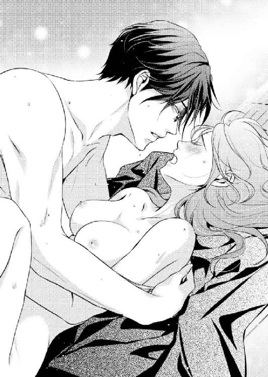
乳房から手を離した雄大は、悶えて伸び上がる彼女の身体を強く抱きしめる。押しつけるように深く貫き、共にのぼりつめようと腰を振りたてた。
大きな波がふたりを襲う。飲みこまれる寸前、桃香は雄大の背にしがみつき彼の肌に指を食いこませた。
絶頂を迎えた瞬間、彼の熱さが全身に広がったように感じ、桃香は蕩けてしまいそうなほどの熱さに捉われる。
恍惚感に溺れる、意識と身体。
「桃香さん......」
そして、幸せをくれる声。愛しい人。
すべてを感じながら、桃香はこの至福を抱きしめたのだった......。
「もうっ、ずるい、ずるいですよ！」
桃香は声を大にして雄大を責める。
責められた当の本人は苦笑いだ。こればかりはどうしようもない。
「どうして雄大さんのほうがホットケーキ焼くの上手いんですかっ」
キッチンの調理台の上には、桃香が焼いたホットケーキと雄大が焼いたホットケーキが並べられていた。
バスルームで愛し合い、しばらくまどろんだあと、夕食と一緒にホットケーキも食べようかという話になり、ふたりで作ったのだ。
桃香としては、焼き色も形も満足にできあがった。胸を張って雄大に食べさせてあげられる、そう思った。しかし、いざ彼が焼いた物と並べてみると、焼き色も、バターやシロップの垂らしかたまで、明らかに彼のほうが美味しそうなのである。
「も......もうっ、いつも康介さんが作ってるって言ってたし、雄大さんは作らないんだろうなって思ったのに......。なんでこんなに上手いんですか。悔しいから、もう作ってあげませんっ」
「もっ、桃香さん、僕は桃香さんが作ったホットケーキが食べたいのです。分かりました、僕はもう作りませんからっ」
「駄目です！ 私に作ってください！」
ふたり顔を見合わせ、同時に笑いだす。
桃香は雄大用を作る。雄大は桃香用を作る。それで解決だ。
ふたりはお互いに相手が作ったホットケーキの皿を持ち、ダイニングテーブルへ向かった。
「ご飯とホットケーキと、こんなに食べたらお腹いっぱいすぎて動けなくなりそう。あっ、でも今夜は、スパに連れていってくれるんでしたっけ」
「え？ 部屋でお風呂に入るのではなかったのですか？ 一緒に」
「だ、だって、それはさっき......」
「さっきはさっきですよ。僕、楽しみで楽しみで、入浴剤からバスオイルまで、たくさん買ってきたのですよ」
「も......もうっ、雄大さんっ」
困った声を出しながらも、桃香は雄大に抱きつく。彼女の左手を取り、雄大は優しく握りしめた。
「今週末にでも、指輪を買いに行きましょう。婚約指輪と、ふたりでつける......結婚指輪を」
「はい、雄大さん」
くちづけをかわし、抱きしめあう。
ホットケーキのシロップよりも甘い、ふたりだけの恋は、これから────。
番外編 欲しがり屋と独占欲
「あー、緊張するー」
ダイニングテーブルに頭を載せ、和泉桃香は足をパタパタと動かす。
焦れた彼女の声が耳に入ったらしく、キッチンから片桐雄大の笑い声が聞こえてきた。
「そんなに緊張しなくても。ホットケーキは綺麗に焼けていますよ。もう少しですから辛抱してくださいね」
「ホットケーキのことじゃありませんよー」
「違うのですか？ 桃香さんは意外に欲しがり屋さんなので、早くホットケーキが食べたくて焦れているのかと」
「......一部を抜粋すると、意味深に聞こえるんですけど......」
桃香は頭を上げ、両手で頰杖をつく。キッチンから漂ってくるホットケーキの香ばしい香りに口元をほころばせながらも、胸に溜まる不安を口にした。
「今週末......、雄大さんの実家にご挨拶に行くじゃないですか......」
「ええ。この歳ですから特に大袈裟な報告にはなりませんが、両親が若いお嫁さんを楽しみにしているようですので。顔くらいは見せたほうが良いかと」
「ご両親もそうですけど、お姉さんも、弟さんたちも、皆さん揃うんですよね」
「はい、弟たちも楽しみにしているそうです」
「百合子さん夫婦と康介さんには会ったことがありますけど、......他のおふたりには会ったことがないし......」
「心配しなくても、次男も三男も、多少の癖があるのは否めませんが、気持ちが狭い人間ではありませんので。......今は」
桃香は心の中で叫ぶ。
（今は、ってなんですか、今は、ってぇ！）
──雄大と桃香が、お互いにプロポーズをしあって一週間......。
先週末には桃香の実家に雄大が挨拶を済ませ、今週末はふたりで雄大の実家へ行くことになっている。
長男の結婚を家族一同で喜んでいるらしく、当日は長女夫婦や康介も、店を使用人に任せて実家へ顔を出すという。もちろん、桃香が会ったことのない次男と三男もやってくるらしい。
初めて会う、片桐家フルメンバーである。
これが緊張せずにいられるはずがない。考えれば考えるほど気がかりで、夕食後に雄大が焼いてくれるホットケーキという贅沢なデザートにも集中できないでいる。
「なんというか、気になっちゃうんです......」
テーブルを離れ、桃香はキッチンに入る。ちょうど雄大がホットケーキをひっくり返すところだった。
相変わらず見事な焼き色だ。どうやったら、こんなまんべんなく均一な焼きかたができるのだろうと、感心せずにはいられない。
ついフライパンの中に見入ってしまうが、ふわりと頭をなでられ、桃香はそれよりも見惚れるべき対象を見上げた。
雄大が眼鏡の奥から穏やかな瞳を向けてくれている。彼は桃香の不安を取り除こうとするかのように、後頭部に手を添えポンポンっと撫でた。
「不安ですか？ 僕の弟たちに会うのが」
「雄大さんの弟さんたちだし......、そんな心配というわけではないんですけど......。ほら、私、年下じゃないですか」
「歳、ですか？」
「はい。あの、すぐ下の弟さんが三十八歳で、その下が三十六歳って聞いているので......。康介さんも三十四歳だし」
雄大はターナーを持ったままの手を口元へあて、ふむと考えこむ。そして真顔になり、妙なことを口にし始めた。
「確かに、〝年下の義姉〟というフレーズは、なんとも淫靡な響きを持っているものですね。たとえるなら男性向け性欲発散目的の娯楽画像や読み物などのテーマに使われていそうな雰囲気です。男の背徳的支配欲を限りなく刺激するフレーズかと......」
「頭では考えますが、決して口にはできない事実を冷静に分析しないでください！」
分かっている。分かってはいるが、雄大はストレートすぎる。
桃香がムキになると、雄大は笑って彼女の頭を抱き寄せた。
「そんなことを気にしなくたって、かわいい年下のお義姉さんをいじめるような弟はいませんよ」
「というか、弟さんたちはイヤじゃないかなって......。自分たちより年下の女が、お兄さんのお嫁さんだっていうのが。ほら、一応〝姉〟ってつくし」
「それを言うなら、百合さんの旦那さんは彼女よりひとまわり年下なのですよ。三十歳ですから、康介よりも下です。彼のほうが、もっと気にしなくてはならないではありませんか」
「それは......そうですけど......」
桃香が納得しかねる声を出すと、雄大は彼女の肩に手を回し、ギュッと抱き寄せた。
「弟たちはみんな大人です。兄のお嫁さんが自分より年下だのなんだのと、いちいち気になどしません。みんな、快く桃香さんを受け入れてくれます」
「......ごめんなさい......。おかしなことを言ってしまって」
「いいえ。かえって貴女がそんなにも気に病んでしまうまでなんの対処もできず、すみませんでした」
「そんな......」
桃香が雄大を見上げると、彼と視線が絡む。不安を消し去ってくれる穏やかな瞳が桃香を見つめ、やがて自然と唇が重なった。
彼に安心感をもらい、このまま気持ちまで蕩かされてしまうそうなキスが欲しいところではある。が、突如鳴り響いたドアチャイムがそれを邪魔した。
唇を離した雄大は、名残惜しそうに微笑む。
「どなたでしょう、こんな時間に。すみません桃香さん、応対していただけますか。僕はホットケーキを仕上げなくては」
「分かりました。見てきますね」
さっきまで感じていた不安などはどこへやら。雄大にもらったキスのおかげで気持ちは明るくなる。ご機嫌になって鼻歌など歌いながら、桃香はキッチンを出てインターフォンを取った。
「はい、どちら様で......」
『あーっ、俺、俺っ！』
桃香の動きがピタリと止まる。口は半開きのまま、目はぱちくりと大きく見開かれた。
『俺だよ、俺っ！ 開けてくれ！』
桃香は思わず、インターフォンから離れる。
（な......なにっ、これ！）
ここは二十五階建ての超高級マンション、クラウンシティ・城北。二十四時間オンラインセキュリティシステムに守られ、エントランスホールには専用コンシェルジュが駐在。もちろん警備員も配置されている。
住民以外の訪問者は必ずチェックを受けるはずなので、おかしな訪問販売や物騒な職種の人間は入館できない。
よって、ドアの前でいきなり名乗りもせず、「俺、俺！」などと叫ぶ人間が中に入ってきて良いはずはないのだ。
こんなことができる可能性があるとすれば康介だけだが、彼はこんな不躾なことはしないだろう。
だとすれば、今のは誰だろう。
桃香が固まっていると、再びドアチャイムが鳴る。ビクッと身体が震え、思わず後ずさりしてしまった。
「どうしたのですか。桃香さん」
すると、ホッとケーキを焼き終えたらしい雄大がキッチンから出てきた。桃香は慌てて彼に駆け寄り、エプロンの胸を摑む。
「ゆ......ゆ、雄大さんっ、オレオレ詐欺っ！」
「は？」
雄大は小首を傾げる。そのとき、あまりにも無反応なことにイラついたのか、インターフォンから大音量の声が響いた。
『俺だよ！ 俺っ！ なんだよ雄ちゃん、ヤってる最中か!? だったら帰るぜ！』
驚いた桃香が「ひっ！」と息を吞む。雄大は彼女の肩をポンポンっと叩くと、インターフォンに「今出るよ」と答え、ひとりリビングを出ていった。
半開きのドアに貼り付き、桃香はこっそりと彼を目で追う。エントランスに出てドアを開けた雄大は、そこに立っていた男性を招き入れた。
「雄ちゃん、ヤってたんじゃないのか？」
「そういった言いかたはやめなさい。仮にも人の上に立つ人間なのだから」
「会社じゃ言わねーって。ヤリ手のバリバリ堅物でとおってんだから。相変わらずお行儀がよろしいなぁ、雄ちゃんは」
男はアハハと笑い声をあげながら、雄大の背をバンバンと叩く。呼びかたといい態度といい、随分と親しげである。キャメルコートの下はスーツ姿なので、もしかしたら会社の関係者なのかもしれない。
年齢も近そうに見える。創業時の仲間だという可能性もある。
「それにしても、今日来るとは思わなかったよ」
「雄ちゃんの一大事だし、早く見たくてさ」
「犬や猫ではないのですよ」
「分かってるって。ところで、その子はどこに......」
ふたりの様子を覗き見ていた桃香は、不意にこちらに顔を向けた男と目が合い、ビクリと震える。彼女の姿を見付けた男が、ニヤリと口角を上げて足早に近づいてきた。
「君が、桃香さん？」
「はははっ、はいっ」
男はスーツから名刺入れを取り出し、そこから名刺を一枚抜く。半開きのドアの陰で固まっている桃香にそれを差し出すと、不敵な表情をふわりと緩めた。
そして、その名刺に書いてあるとおりの自己紹介をしたのである。
「はじめまして。フェースデザイン企画株式会社、代表取締役社長、片桐英嗣です」
その肩書きを聞いて、桃香は納得と言わんばかりに小さく頷く。この人物も会社の社長とは。さすがに雄大の知人はハイレベルだ。
（あれ？ でも、片桐......？）
名刺を受取った桃香は、そこに書かれた名前を凝視した。雄大と同じ苗字。と、いうことは......。
「僕のすぐ下の弟ですよ。驚かせてしまいましたね、申し訳ありません」
桃香が思い当たった答えを、雄大が口にする。彼は桃香の横に立ち苦笑いを見せた。
「いつでも『俺だよー』と言って訪ねてくるので、覚えておいてやってください。決してオレオレ詐欺ではありませんから」
詐欺扱いされてしまった英嗣はアハハと笑い、桃香の両手を力強く握る。
「雄ちゃんがさ、十五歳も年下の女の子をたぶらかしたっていうから。見るのが楽しみでさ。実家に来る日が待ちきれなかったから見にきたんだ。やーっ、かわいいねぇ。雄ちゃん、やるじゃないか」
弟とはいえ、雄大とはまったく違うテンション。呆気にとられて、桃香は摑まれた手を上下に振られても言葉を出せない。その動きを止めたのは、英嗣の手をガッシリと摑んだ雄大だった。
「〝僕の〟お嫁さんですよ。この手を離しなさい。桃香さんが困っています。──英嗣......」
一瞬にして場の空気が凍る。危険を感じたのか真顔で手を離した英嗣を見て、桃香は以前、康介に言われたことを思い出した。
『兄さん、独占欲強いから』
──それは間違いではなさそうだ......。
「すみませんね、上がりこんじゃって」
桃香がコーヒーを持ってくると、英嗣は愛想良く笑った。
最初は彼のテンションに驚きはしたものの、なんだかんだいっても雄大の弟。落ち着いているときの雰囲気は、とてもよく似ている。
リビングの大きなソファの中央に陣取った英嗣は、出されたコーヒーカップを取り上げ口をつける。ひとくち飲んで桃香に微笑みかけた。
「かわいい女の子が淹れてくれたコーヒーは美味しいね。ありがとう」
「あ......はぁ、あの......淹れたのは私じゃなくて......」
桃香は気まずそうに、チラリとキッチンを窺う。雄大がエプロンを外しながら少々渋い表情をして出てきた。
「淹れたのは僕ですよ。すみませんね」
「あははーっ、いや、かわいい女の子が持ってきてくれたコーヒーは美味いなーっと」
「相変わらず調子がいいですね」
慌てて言い直した英嗣に苦笑いをして、雄大はソファのコーナーに腰を下ろす。桃香を手招きし、自分の横を手で示した。
ここに座れという意味なのだろう。大きなコーナーソファなので、こうしてみると雄大を挟んで英嗣との距離が随分と大きくなるような気がした。もしかしたら、これは英嗣の傍に近づけたくないという意味なのではないかと勘繰ってしまう。
「雄ちゃん、なんでそこに座る？」
「ここを仕切っておかないと、英嗣は絶対に桃香さんを隣に呼ぶでしょう？」
「分かってるなぁ、と褒めたいところだけど。警戒しすぎだろ？」
もしやと思ったが、本当にそういうことであるようだ。桃香は雄大の横に腰を下ろし、チラリと彼を見る。すぐににこりと微笑まれ、桃香もはにかんで見せた。
「はいはい、ご馳走様」
すかさずふたりの雰囲気を読んだ英嗣の冷やかしが入る。彼はカップをソーサーへ戻し、両腕を膝に預けて覗きこむように桃香を見た。
「康介には会ったことがあるんだって？ あいつは義姉さんのことをなんて呼んでるの？」
「え......あの......、名前に〝さん〟をつけて......」
いきなり「義姉さん」と呼ばれて焦ってしまう。すると英嗣は身体を起こし、腕を組んで「うーんっ」と考えこんだ。
「そうか、じゃあ俺も『桃香さん』って呼ぶかな。『義姉さん』じゃ、緊張するだろう？」
「あ、はい......」
「年下のかわいい女の子を義姉さんと呼んじゃうと、変な想像しそうだし」
「えっ！」
思わず雄大が言っていた、男性の背徳的支配欲がなんたらといった話を思い出す。桃香が驚いて背筋を伸ばすと、英嗣が声をあげて笑った。
どうやら桃香はからかわれたらしい。すると、雄大の手が肩にかかった。
「桃香さんも、英嗣のことは気楽に呼んでください。気を張る必要はありませんよ。英嗣の下の弟も似たようなものですので、桃香さんが緊張をする必要はまったくありません」
「はい」
確かに、雄大の弟たちには会ったことがないせいで緊張していたけれども、そのひとりの英嗣に会えて気持ちが楽になった気がする。三男も似た雰囲気ならば安心できるような気がした。
当日は雄大だってそばにいてくれる。ひとりではないのだから不安に思う必要はない。
気持ちが晴れたせいか表情も明るくなる。そのことに気を良くしたか、英嗣も楽しげに話しだした。
「父さんと母さんも、桃香さんが顔を見せるのを楽しみにしてるみたいだ。きっと、俺のときみたいに大歓迎してくれるから、安心しなよ」
「ありがとうございます、英嗣さん。......あの、俺のとき、って？」
なんとなく気になったひとことを何気なく聞くと、答えたのは雄大だった。
「英嗣も、先月結婚したばかりなのですよ。とはいっても、籍を入れただけで、今、結婚式の準備中なのです」
「そ、そうなんですか、おめでとうございます！」
思いがけず、おめでたい話を聞いてしまった。桃香が言葉のままに手を叩いて祝福をすると、英嗣は照れ笑いを見せた。
「ありがとう。なんだか照れるな......。そうそう、実家に行くときは嫁さん連れていくから、仲良くしてやって」
「はい。こちらこそです」
同じお嫁さん同士。仲良くできたらいいなとは思うものの、英嗣の年齢を考えれば結婚相手は三十代半ば、もしくは三十代初めくらいか。どちらにしろ、桃香よりは年上だろう。
新たな登場人物の出現にまた緊張しかける。そんな桃香の心配をよそに、英嗣は軽快に話を進めた。
「きっと、話も合うと思うんだ。桃香さんとふたつしか違わないし」
「はい？ ふたつ......二十七歳なんですか？ 奥さん」
「いや、二十三歳」
「は......い？」
「元々うちの会社に派遣できてた子なんだけど。いや、一生懸命でさ。かーわいいんだ、これが。よろしくね、桃香さん」
「は......はぁ、はい」
つい言葉に詰まってしまう。英嗣は確か三十八歳のはず。その妻が二十三歳ということは......。
（十五歳差......！）
思わず雄大を見てしまう。桃香が考えていることを悟ったのか、彼はにっこりと目を虹の形にした。
ということは、この兄弟、揃って十五歳年下の女性を妻に選んでしまったということになる......。
英嗣が帰って二時間後、大きなベッドで上半身を起こし雑誌を見ていた桃香は、溜息をつきながら本を閉じ、膝に置いた。
「でも、びっくりしましたよ。まさか弟さんのお嫁さんまでそんなに歳が離れていたなんて」
本日一番驚いた事実を口にして、桃香は常にドアが全開にされるようになってしまった書斎へ顔を向ける。そこでは桃香の言葉を耳にした雄大が、デスクで書類を前にクスクスと笑っていた。
書斎と繫がった寝室。元々は雄大だけの寝室だったが、ふたりが想いを繫げ合った日から桃香の寝室にもなった。
桃香が毎日自分の元へこられるよう、彼女が使っている部屋のベッドを撤去してしまおうと雄大が口にしたときは、てっきり冗談だと思っていた。
しかし彼は、翌日本当に撤去してしまったのである。
必然的に、毎晩雄大と同じベッドで眠ることになった。とはいえ、撤去されなくても、いずれ桃香はこちらのベッドで眠るようになっていただろう。
「百合子お義姉さんも、旦那さんはひとまわり年下だし......。片桐家は、思いっきり年下に縁があるんですね」
「父と母もひとまわり年が違うのですよ。こちらはもちろん父が年上ですが」
「ええっ、そうなんですか!? 三男の弟さんと康介さんはまだ結婚してないですよね。ふたりも十五歳年下のお嫁さん連れてきたりして」
ノリで口にして笑うと、同じく笑いながら雄大が隣へ入ってきた。
「その可能性はありますね。ただ、康介の場合は十五歳年下だと十代になってしまいます」
「十九歳なら、結婚していい年齢だし大丈夫じゃないですか？ でも、みんながみんな、ってわけもありませんね」
「ですが、そうなれば弟たちのお嫁さんは桃香さんより年下ということになりますから。年齢的に揃っていて、姉妹らしく見えていいではありませんか」
桃香の頭に手を回し、雄大は自分の胸に抱き寄せる。彼にもたれかかり、彼女はチラリと視線を上げた。
「......雄大さん......。仕事は？」
「終わりです。今夜は、心配事がなくなって安心している桃香さんと眠りたいので」
雄大のパジャマの胸にキュッとしがみつく。彼の腕がくれる力強い拘束が、なんともいえず心地好い。
「ねえ、雄大さん。今夜、英嗣さんが訪ねて来たのって、偶然じゃないんですよね」
「と、いいますと？」
「雄大さんが呼んであったんじゃないんですか？ 片桐家に行く日が近くなって、私が緊張をしているのを知っていたから。安心させるために英嗣さんを呼んだんでしょう？」
雄大は答えない。なぜそう思うのかとの問いかけもない。それは、桃香の推測を肯定しているも同じ。
今夜のことが雄大の気遣いであると思える最大の理由を、桃香は嬉しそうに口にする。
「だって、雄大さんは......私が欲しがっているもの、なんでもくれるじゃないですか。だから、くれたんでしょう？ 〝安心〟を」
ゆっくりと、桃香の身体がシーツに倒される。すぐに雄大の唇が重なってきた。
唇から頰へ。瞼へ、こめかみへ。温かな吐息と共に彼の唇が移動する。耳元へ辿り着いたとき、桃香を蕩かす囁きが流しこまれた。
「......なんでも、さしあげますよ......。桃香さんが、欲しがってくれるなら」
桃香は両腕を雄大に回し、今欲しい物を強請る。
「じゃあ......、雄大さん、ください......」
「はい......」
雄大は眼鏡を外しベッドのサイドテーブルへ置くと、すぐに桃香のパジャマの前ボタンを外し始めた。首筋に吸いつき、クスリと笑いを漏らす。
「欲しがり屋さんですね......」
同じ言葉を言われて反抗したのは、ついこのあいだのこと。けれども今は、反抗も否定もしない。
「いっぱい......欲しいんです......。雄大さんの優しさも、ときどき、ちょっとズルいところも、......聖人君子の雄大さんも、......聖人君子じゃなくなる雄大さんも......」
パジャマをはだけられ腕を抜く。それが身体の下から取り去られると、触って欲しそうにふたつのふくらみが揺れ動いた。
そのひとつを摑み、雄大は何度も指先で頂を弾く。唇はもう片方のふくらみをなぞり、同じように頂を舌で刺激した。
パジャマのズボンが少しずつ下ろされていく。それを手助けするかのように、桃香は腰を浮かせ両足を動かした。
「さしあげます......。貴女が望んでくれるならば......」
囁きが、耳から全身に沁み渡っていく。
桃香は雄大の愛撫に身を任せ、刺し貫かれるその間も、なによりも欲するものの名を呼び続けた。
「雄......大さっ......あっ......あっ......！ 雄大さぁっ......ァンッ！」
「はい......、なんですか」
雄大は桃香の身体を横向きに倒し、片足を抱えて深く入りこむ。
挿入の熱さに震える彼女と肌を合わせ、下から手を回し顔を傾かせた。
桃香は、自分が愉悦に潤んで、とてもいやらしい目をしているのではないかと思う。だが彼は、それを蔑むこともなく愛しげに見つめてくれる。唇を重ね、繫がり合う下半身と同じくらい激しく唇を貪り合った。
擦りあげられる蜜窟が、解放感を欲しがって彼を締めつける。わずかに苦しげな呻きが耳元で漏らされ、刺し貫く勢いが強くなった。
「もっと......あぁっ！ もっと、くださ......、あっ......ああんっ！」
「もっと、欲しいのですか？」
「欲し......、あぁっ！ 欲し......いっ、雄大さ......んっ......あっ！」
「そんなに欲しがってもらえると、嬉しいです」
桃香の希望を叶え、滾りの熱さが彼女の快感を高めていく。やがて満ち足りた恍惚感を迎え入れ、ふたりは重なり合ったまま唇を重ねた。
「満足......できましたか......？」
まだわずかに息を荒らげ、雄大は桃香に額を付ける。「はい」と返事をした桃香は、陶酔冷めやらぬ瞳で雄大と視線を合わせた。
「でも......きっとまた......欲しくなる......」
雄大の目がふっと和む。そのまま再び唇が重なり、互いの吐息を感じ合いながら、彼が囁いた。
「いくらでも、欲しがってください。僕の欲望は、桃香さんだけのものですから。......もちろん、貴女自身も、僕だけのものですよ」
強く唇を重ね、雄大の背に腕を回す。
安心感から快感まで、桃香が欲するものはなんでも与えてくれる雄大。
欲すれば欲するほど、彼は喜んでくれる。そして、内に秘めた独占欲も、強くなっていくような気がする。
「雄大さん......、大好き......」
そんな彼を欲し、独占され、そして蕩かされていく日々が、これからずっと続いていく。
この不器用な聖人君子と、いつまでも一緒に。
＊ＥＮＤ＊
あとがき
「聖人君子」を辞書で引けば......。
【知恵が立派で、世間の人々から理想的な人物と仰がれる人】
と、出ます。たぶん、雄大というヒーローを考えたとき、私はなにか変わったことをしたい、という意欲に燃えていたのではないだろうかと思います。
だって......ですね......。
聖人君子、なんて、ＴＬのヒーローっぽくないじゃないですか。
どう考えたって、イメージとしては、いい人、真面目な人、禁欲的な人、ですよ！
ここから考えるに、いきなりヒロインを押し倒すとか、無理やりキスするとか、あんなことやこんなこと（この辺りはご想像にお任せいたします）なんか絶対にしないですよね！
恋愛に発展しそうな要素とか、ラブシーンに繫がる発端とか、ありそうにない！
......のに......、今回のヒーローは聖人君子です......。
早くキスのひとつもさせたいのになかなかできず、書いている私はムズムズしているのに当の雄大は目玉焼きを食べながらほんわりしてばかり。
「もう二度と、聖人君子なんかヒーローにするもんか！」と何度心で叫んだことか。
......とはいえ、彼も桃香にだけは欲望丸出しヒーローになってくれたので、なんとかなりました。でも本当、彼にはてこずりました。はい。
いきなりこの作品に対する一番の想いを叫んでしまい、失礼いたしました。
蜜夢文庫様では二度目のご縁となります。玉紀直です。
考えてみると、二年前にご縁を戴きました『オトナの恋を教えてあげる』も十五歳差のあるラブストーリーでした。歳の差好きだね～、と言われそうですが......好きです!!
最後になりますが、謝辞を──
いつも私のスケジュールを気遣ってくださいます担当様、そして各関係者の皆様に。
イメージしていた大人の恋愛を、とても素敵なイラストで盛り上げてくださいました、黒田うらら先生。
元気をくれるお友だちと、応援してくれる家族に。
そして、本書をお手に取ってくださりました皆様に、心からの感謝とお礼の気持ちをこめて。
ありがとうございました。また、お目にかかれることを願って────。
二〇一七年四月
目玉焼きは醬油派／玉紀直
Story
玉紀 直
たまき なお
純愛から濃厚な大人の恋愛まで、甘くて切なくてドキドキできる恋愛小説を楽しんでもらいたいと日々精進中。
歳の差恋愛万歳！
心に傷を負った女性が年上男性の包容力にクラっときちゃうお話は大好物です！
これも、......そんなお話です。
Illustration
黒田うらら
くろだ うらら
福岡県在住
フリーのイラストレーター兼漫画家として活動中
女性向け作品を執筆
愛犬と暮らす日々
ツイッターID @kl96_9
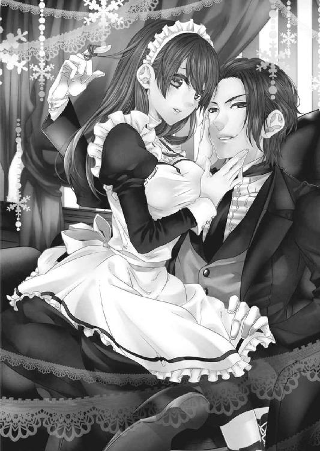
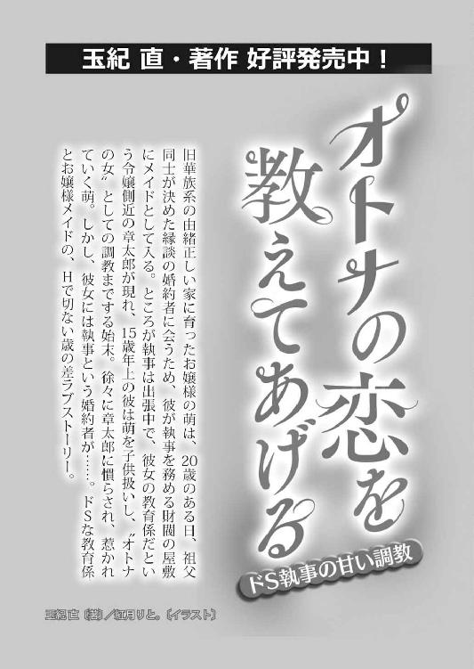
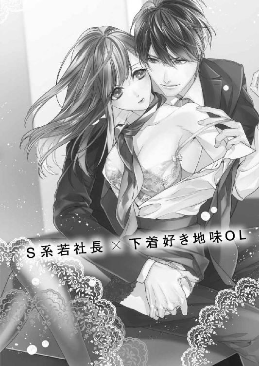
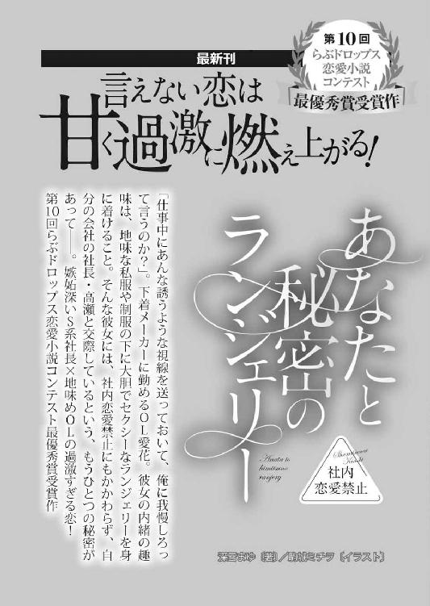
聖人君子が豹変したら意外と肉食だった件［電子書籍版］
発行日 ２０１７年５月１日 発行
著 者 玉紀直
デザイン しおざわりな（ムシカゴグラフィクス）
発行者 後藤明信
発行所 株式会社竹書房
〒１０２－００７２
東京都千代田区飯田橋２－７－３
ＴＥＬ ０３－３２６４－１５７６
ＵＲＬ http://www.takeshobo.co.jp
データ加工 株式会社暁印刷
 Nao Tamaki 2017
Nao Tamaki 2017
本書の一部あるいは全部を著作権者および株式会社竹書房に無断で複写・複製すること、および放送・上演・公衆送信（ホームページ上への掲載を含む）などは、法律で認められた場合を除き著作権の侵害となります。